| Field | Value |
|---|---|
| Document reference | CHM/OSLR/2026/002 |
| Title | Improved Updated Baseline Report, Oyo State Labour & Skills Registry |
| Version | 1.0 |
| Issue date | May 2026 |
| Valid as of | The submission date stated above. Every factual claim in this Report is true as of that date. |
| Classification | Confidential, for official use only |
| Subject programme | Oyo State Labour & Skills Registry. Establishment of the State Electronic Labour Register. |
| Authority | Ministry of Trade, Industry and Cooperatives, Oyo State Government |
| Consultant | Chemiroy Nigeria Limited |
| Engagement period | November 2025 – May 2026 (six-month consulting engagement) |
| Conflicts of interest | None to declare |
| Companion document | Pre-Field Survey Status Report, CHM/OSLR/2026/001, submitted concurrently |
| Copy | Recipient | Format |
|---|---|---|
| 1 | Honourable Commissioner, Ministry of Trade, Industry and Cooperatives | Hard copy + Digital |
| 2 | Permanent Secretary, Ministry of Trade, Industry and Cooperatives | Hard copy + Digital |
| 3 | Director, Trade & Investment, Ministry of Trade, Industry and Cooperatives | Digital |
| 4 | SABER Secretariat, Oyo State | Digital, courtesy copy |
| 5 | Mrs Fateemah Roy-Lagbaja, Managing Director, Chemiroy Nigeria Limited | Hard copy + Digital |
| 6 | File Copy, Chemiroy Nigeria Limited | Hard copy |
This Report is confidential. It is prepared for the Ministry of Trade, Industry and Cooperatives and the recipients listed above, and contains commercially sensitive information about the Oyo State Labour & Skills Registry programme. Reproduction or distribution beyond the named recipients without our prior written consent is not permitted.
The information contained herein has been prepared using data from publicly available sources, including the National Bureau of Statistics (NBS) Nigeria Labour Force Survey, National Population Commission (NPC) population projections, and International Labour Organization (ILO) statistical frameworks, supplemented by primary data collected during the baseline validation exercise and the professional expertise of Chemiroy Nigeria Limited. While every effort has been made to ensure accuracy, certain projections and estimates are based on assumptions that are clearly identified and classified throughout the document using the Assumption Classification Framework described in the Methodology chapter.
This Improved Updated Baseline Report is the detailed companion to the Pre-Field Survey Status Report (CHM/OSLR/2026/001) and is submitted concurrently. It describes the methodological, technological, and operational foundation of the Registry as of the issue date. The validation exercise findings presented herein are based on a purposive sample (n=330) designed for instrument validation and operational planning, and are not intended for inferential statistical analysis at the population level. Statistically representative estimates of Oyo State’s labour force characteristics will require the full-scale statewide enumeration scheduled to commence in the first week of May 2026, and will be reported in the Field Survey Report (CHM/OSLR/2026/003) following fieldwork conclusion.
All recommendations are informed by established international standards, including the ILO Resolution Concerning Statistics of Work, Employment and Labour Underutilization (19th ICLS, 2013), and are subject to the availability of the human and material resources described in the Recommendations chapter of this Report.
| Term | Expansion |
|---|---|
| ASNAT | Association of Nigerian Artisans and Technicians |
| ASVAN | Association of Skilled and Vocational Artisans of Nigeria |
| BOT | Build, Operate, Transfer |
| BVN | Bank Verification Number |
| CAC | Corporate Affairs Commission |
| CSP | Content Security Policy |
| DDoS | Distributed Denial of Service |
| DKIM | DomainKeys Identified Mail |
| DMARC | Domain-based Message Authentication, Reporting and Conformance |
| DPIA | Data Protection Impact Assessment |
| EA | Enumeration Area |
| EAD | Enumeration Area Demarcation |
| GPS | Global Positioning System |
| ICLS | International Conference of Labour Statisticians |
| ICT | Information and Communications Technology |
| ILO | International Labour Organization |
| ISCO | International Standard Classification of Occupations |
| ITF | Industrial Training Fund |
| JWT | JSON Web Token |
| KPI | Key Performance Indicator |
| LGA | Local Government Area |
| MAN | Manufacturing Association of Nigeria |
| MSME | Micro, Small and Medium Enterprise |
| MTIC | Ministry of Trade, Industry and Cooperatives |
| NBS | National Bureau of Statistics |
| NDPA | Nigeria Data Protection Act, 2023 |
| NDPC | Nigeria Data Protection Commission |
| NIMS | National Identity Management System |
| NIN | National Identification Number |
| NLFS | Nigeria Labour Force Survey |
| NPC | National Population Commission |
| OSLR / OSLSR | Oyo State Labour & Skills Registry (system shorthand) |
| OYSIPA | Oyo State Investment Public and Private Partnership Agency |
| PII | Personally Identifiable Information |
| PWA | Progressive Web Application |
| RBAC | Role-Based Access Control |
| SABER | State Action on Business Enabling Reforms |
| SMEDAN | Small and Medium Enterprises Development Agency of Nigeria |
| SMS | Short Message Service |
| SPF | Sender Policy Framework |
| SSS / WAEC | Senior Secondary School / West African Examinations Council |
The Ministry of Trade, Industry, Investment and Cooperatives, Oyo State Government, commissioned Chemiroy Nigeria Limited in November 2025 to undertake the Production of the Oyo State Skilled Labour Register, a comprehensive state-wide digital registry of skilled, semi-skilled, and unskilled workers across all thirty-three (33) Local Government Areas of Oyo State.
The engagement, with a duration of six (6) months, encompasses three (3) principal deliverables: (1) Establishment of a Data Centre; (2) Creation of the State Labour Register; and (3) Training of Ministry/Government Officials on the Operations of the Registry.
This Improved Updated Baseline Report presents the findings and outputs of the pre-fieldwork phase of the engagement (November 2025 – May 2026), covering the establishment of the digital and physical infrastructure, the design and validation of the data collection methodology, and the development of a comprehensive occupational skills taxonomy for Oyo State. Statewide field enumeration commences in the first week of May 2026.
The Letter of Introduction authorising the Consultant to engage development partners and counterpart agencies on behalf of the Ministry was issued at the end of February 2026. The Build Phase of the engagement, including the field-survey activity, is scheduled to conclude within the contractual period.
The survey instrument has been refined through two pre-field enumeration cycles conducted as instrument validation, and is now at Version 3. Stakeholder sensitisation across the three Senatorial Districts of Oyo State (Oyo Central, Oyo South, and Oyo North) was conducted at the start of the engagement, establishing programme awareness across the 33-LGA catchment.
The following activities were completed during the reporting period:
Inception & Situational Analysis
Infrastructure & Instrument Development
Platform Development & Validation
Baseline Validation & Reporting
Oyo State, with an estimated population of 8.6 million (NPC 2025 projection), has no centralised, digitised register of its workforce. The state’s labour market mirrors national patterns: 93% informal employment (NBS NLFS Q2 2024), 75% self-employment rate, and significant skills data gaps that impede evidence-based policy formulation.
This data gap has particular significance in the context of Nigeria’s subnational business enabling environment reform programme, which assesses state competitiveness across sixteen indicators, including skilled labour readiness. Oyo State has risen from 27th to 3rd nationally (62.7%) in the 2025 assessment. The Skilled Labour Register provides the evidence base to sustain and advance this competitive position by making the state’s workforce visible, searchable, and verifiable for the first time.
A desk review of existing data sources revealed that while the National Bureau of Statistics (NBS) provides quarterly national and zonal estimates through the Nigeria Labour Force Survey (NLFS), no state-level register exists that captures granular, individual-level data on occupational skills, employment status, and business ownership across all 33 LGAs. Comparable initiatives in Lagos (LSETF Jobs Portal) and Kaduna (KADSTEP) have focused on specific populations (youth, graduates) rather than comprehensive workforce enumeration.
A structured validation exercise was conducted to verify instrument functionality and establish preliminary demographic baselines. Key findings from the purposive sample (n=330, 10 respondents per LGA):
Table 1.1: Validation Exercise Results
| Indicator | Validation Sample | NBS Benchmark | Alignment |
|---|---|---|---|
| Gender (Male/Female) | 52.1% / 47.9% | 51.5% / 48.5% | ✓ Within 1% |
| Employment Rate | 83.0% | 87.3% | ✓ Within 5% |
| Self-Employment Rate | 74.5% | 75.0% | ✓ Within 1% |
| Informal Employment | 91.6% | 93.0% | ✓ Within 2% |
| Business Ownership | 38.5% | ~35% (SMEDAN) | ✓ Within 4% |
| CAC Registration | 22.8% | ~20% (SMEDAN) | ✓ Within 3% |
| Marketplace Consent | 68.2% | N/A (novel) | Baseline established |
| Avg. Completion Time | 9.2 minutes | Target: ≤10 min | ✓ Met |
The validation sample was designed to approximate the demographic distribution documented in the NBS NLFS (Q2 2024). Findings are presented for instrument validation and operational planning purposes; statistically representative estimates of Oyo State’s labour force will require the full-scale statewide enumeration.
A bespoke occupational skills taxonomy was developed comprising 150 skills across 20 economic sectors, mapped to the International Labour Organization’s International Standard Classification of Occupations (ISCO-08). The taxonomy captures the full breadth of Oyo State’s labour force, from formal sector professionals to artisanal tradespeople, agro-processors, and survivalist occupations, reflecting the 93% informal employment reality documented by NBS.
A hybrid Data Centre architecture was established, comprising:
The Oyo State Labour & Skills Registry (OSLSR) digital platform was developed and deployed, featuring:
The platform underwent 3,564 automated quality assurance tests with zero critical failures and a comprehensive OWASP Top 10 security assessment with the platform independently assessed at A- security posture (state-government-grade) across all OWASP Top 10 categories.
Table 1.2: Deliverable Status Summary
| # | Deliverable | Status | Evidence |
|---|---|---|---|
| 1 | Establishment of Data Centre | COMPLETE | Physical infrastructure operational at Ministry premises; cloud infrastructure deployed and monitored |
| 2 | Creation of the State Labour Register | IN PROGRESS | Platform deployed and validated; data collection methodology designed; awaiting mobilisation of 132 field personnel for statewide enumeration |
| 3 | Training of Ministry/Government Officials | DESIGN COMPLETE | Capacity building curriculum designed for the five operational roles plus the Public tier; classroom delivery scheduled for implementation phase |
For the successful execution of the statewide field enumeration (Deliverable 2), the Consultant recommends the immediate mobilisation of the following resources:
(a) Recruitment and training of One Hundred and Thirty-Two (132) field personnel, comprising Three (3) Enumerators and One (1) Field Supervisor per Local Government Area across all Thirty-Three (33) LGAs of Oyo State;
(b) Procurement of mobile data collection devices (Android smartphones, minimum specification: Android 8.0, 2GB RAM, 32GB storage, GPS-enabled) for all field personnel;
© Field logistics support including transportation allowances, identification materials (branded vests, ID cards), and communication airtime for data synchronisation;
(d) Printing and distribution of sensitisation materials for community engagement and respondent awareness;
(e) Establishment of LGA-level coordination with traditional rulers, community leaders, and ward heads to facilitate field access and respondent cooperation.
The digital infrastructure, validated survey instrument, 150-skill occupational taxonomy, data quality assurance framework, and operational Data Centre are deployment-ready. The commencement of field enumeration is contingent upon the mobilisation of the above human and material resources as specified in the project terms of reference.
Chemiroy Nigeria Limited has, within the first four (4) months of the engagement, completed Deliverable 1 (Data Centre Establishment) in full, designed and validated the methodology and instruments for Deliverable 2 (State Labour Register), and completed the curriculum design for Deliverable 3 (Training). The remaining activities, field enumeration, data analysis, and training delivery, are achievable within the remaining engagement period, subject to the timely mobilisation of field personnel and logistics resources.
This Baseline Study Report provides the evidentiary foundation for the next phase of the engagement and demonstrates the Consultant’s commitment to international best practice, methodological rigour, and the successful delivery of the Oyo State Skilled Labour Register.
Chemiroy Nigeria Limited May 2026
Chemiroy Nigeria Limited is a Nigerian consulting and project management firm specialising in technology-driven solutions for government and private sector development programmes. The company is registered with the Corporate Affairs Commission (CAC) of the Federal Republic of Nigeria and maintains its operational headquarters in Oyo State.
Chemiroy Nigeria Limited brings to the Oyo State Skilled Labour Register project a multidisciplinary team with expertise spanning digital platform development, data management systems, agricultural consulting, feasibility studies, and public sector programme design. The firm’s approach integrates international best practices with deep understanding of the Nigerian operating environment, particularly the unique challenges of data collection in developing economies, including infrastructure constraints, digital literacy variations, and the predominance of informal economic activity.
Mrs Roy-Lagbaja provides strategic leadership, project accountability, and client liaison for the Oyo State Labour & Skills Registry engagement. Under her direction, the firm has expanded its portfolio to encompass government consulting engagements requiring the intersection of technology, policy, and operational delivery.
The Managing Director carries direct responsibility for project strategy, technical architecture oversight, methodology validation, and quality assurance, supported by the firm’s multidisciplinary delivery team across digital platform development, data systems architecture, and the application of international statistical standards (ILO, NBS) to Nigerian development contexts.
Table 2.1: Core Competencies
| Competency Area | Description |
|---|---|
| Digital Platform Development | Design and deployment of secure, scalable web applications for government and enterprise use, including mobile-responsive interfaces, offline-capable Progressive Web Applications (PWA), and database-driven registries |
| Data Systems Architecture | Database design, data governance frameworks, data quality assurance systems, and compliance with national data protection regulations (NDPA 2023) |
| Feasibility Studies & Research | Comprehensive feasibility analyses, market research, baseline surveys, and investment proposals for agricultural, industrial, and public sector projects |
| Agricultural Consulting | Agribusiness development, crop production planning, value chain analysis, and agricultural project management |
| Public Sector Programme Design | Design and implementation of government-commissioned programmes, including stakeholder engagement, capacity building, and monitoring and evaluation frameworks |
| Project Management | End-to-end project lifecycle management using international standards, including risk management, quality control, and reporting |
Chemiroy Nigeria Limited has executed consulting engagements across multiple sectors, demonstrating the firm’s capacity to deliver complex, multi-stakeholder projects in the Nigerian operating environment.
Table 2.2: Relevant Experience
| # | Project | Client | Sector | Scope |
|---|---|---|---|---|
| 1 | Comprehensive Feasibility Study, 22-Hectare Oil Palm Plantation Development | Private Investor | Agriculture / Agribusiness | Full feasibility study comprising 18 chapters covering industry analysis, site assessment, agronomic blueprint, financial modelling, implementation roadmap, risk register, ESG framework, and monitoring KPIs |
| 2 | Oyo State Skilled Labour Register, Baseline Study | Ministry of Trade, Industry, Investment and Cooperatives, Oyo State | Government / ICT | Current engagement, design and deployment of a state-wide digital labour registry with offline-capable data collection, fraud detection, and public skills marketplace |
| 3 | Agricultural Project Consulting Portfolio | Multiple Clients | Agriculture | Crop comparison analyses, economic viability assessments, and value chain development strategies for oil palm, cassava, maize, soybean, and sugarcane |
Chemiroy Nigeria Limited is committed to delivering work products that meet or exceed international standards of professional quality. The firm’s quality management approach includes:
Chemiroy Nigeria Limited is available to provide additional references, detailed CVs of team members, and evidence of past project deliverables upon request by the commissioning authority.
By Award Letter referenced [Award Letter Reference], the Ministry of Trade, Industry, Investment and Cooperatives, Oyo State Government, engaged Chemiroy Nigeria Limited to undertake the Production of the Oyo State Skilled Labour Register. The consultancy award was received on 18th November 2025, with a project duration of six (6) months concluding in May 2026.
The engagement was commissioned in recognition of a fundamental gap in the state’s economic planning infrastructure: the absence of a comprehensive, digitised register of Oyo State’s workforce. Despite an estimated population of 8.6 million (NPC 2025 projection) and a labour force participation rate exceeding 70% (NBS NLFS 2024), no centralised system existed to capture, verify, and maintain granular data on the skills, employment status, and economic activity of workers across the state’s 33 Local Government Areas.
This data deficit constrains evidence-based policy formulation, limits the state’s ability to target skills development programmes, and impedes the matching of available workforce skills with employer demand and investment opportunities.
A note on terminology used throughout this report. The two terms serve distinct but complementary functions:
Register (noun), The official authoritative record: the list of workers, their skills, demographics, and employment data. This is what the Ministry commissioned, the Production of the Oyo State Skilled Labour Register. It is analogous to an electoral register, a birth register, or a land register: the definitive dataset.
Registry (noun), The system, platform, and institutional framework that creates, maintains, and serves the register. The Oyo State Labour & Skills Registry (OSLSR) is the digital platform, encompassing the web application, mobile PWA, database, fraud detection engine, and public Skills Marketplace, through which the register is produced and operated.
In summary: the Registry (system) produces and maintains the Register (data). Both terms are used precisely throughout this report. Where the text refers to the official list of workers, it uses “register”; where it refers to the technology platform, it uses “registry.”
The overarching objective of the engagement is to establish a trusted, continuously updated digital register of skilled, semi-skilled, and unskilled workers across all 33 LGAs of Oyo State. The registry platform is designed to:
Provide granular workforce data, Individual-level records capturing demographics, skills, employment status, business ownership, and location across all 33 LGAs
Enable evidence-based policy, Real-time dashboards and analytical tools to inform government decisions on skills development, job creation, trade facilitation, and investment attraction
Connect workers to opportunities, A public Skills Marketplace enabling employers, contractors, and investors to discover verified skilled workers by trade, location, and experience level
Ensure data integrity, Automated fraud detection, identity verification (NIN validation), and immutable audit trails to guarantee the trustworthiness of registry data
Support continuous updating, An always-on platform allowing ongoing self-registration, profile enrichment, and data maintenance beyond the initial field enumeration period
The engagement Terms of Reference specify three (3) principal deliverables:
Table 3.1: Project Deliverables
| # | Deliverable | Description | Timeline |
|---|---|---|---|
| 1 | Establishment of Data Centre | Procurement, configuration, and deployment of physical and digital infrastructure to host, process, and secure the Labour Register data | Months 1–3 |
| 2 | Creation of the State Labour Register | Design and deployment of the digital registry platform; development of data collection instruments; conduct of statewide field enumeration across all 33 LGAs; population of the registry with verified worker data | Months 2–5 |
| 3 | Training of Ministry/Government Officials | Design and delivery of capacity building programme to equip Ministry and government officials with the knowledge and skills to operate, maintain, and utilise the Labour Register system | Months 5–6 |
Table 3.2: Consultant Team
| Role | Name | Responsibility |
|---|---|---|
| Managing Director | Mrs Fateemah Roy-Lagbaja | Project leadership, technical accountability, corporate governance, strategic oversight, and client liaison |
The project operates under the supervision of the Ministry of Trade, Industry, Investment and Cooperatives, Oyo State Government, with designated Ministry officials serving as project supervisors responsible for:
Table 3.3: Reporting Framework
| Report Type | Frequency | Recipient |
|---|---|---|
| Baseline Study Report (this document) | Mid-term | Ministry of Trade, Industry, Investment and Cooperatives |
| Progress Updates | As required | Designated Ministry Supervisors |
| Completion Report | End of engagement | Ministry of Trade, Industry, Investment and Cooperatives |
The following schedule documents the activities undertaken during the first sixteen (16) weeks of the engagement, organised by phase:
Inception & Situational Analysis
Table 3.4: Activity Schedule
| Week | Activities |
|---|---|
| 1–2 | Project inception and administrative setup; Receipt and review of engagement terms; Establishment of project management framework; Stakeholder identification and engagement planning |
| 2–3 | Initiation of stakeholder consultations with Ministry officials; Identification of data requirements and functional needs; Review of existing Ministry data holdings and administrative records |
| 3–4 | Commencement of desk review: National Bureau of Statistics (NBS) Labour Force Survey publications; National Population Commission (NPC) population estimates and projections; ILO statistical standards and ISCO-08 occupational classification framework; SMEDAN/NBS National MSME Survey reports |
| 4–5 | Comparative analysis of state-level labour registry initiatives (Lagos LSETF, Kaduna KADSTEP, Edo EdoJobs); Survey methodology design, ILO ICLS-19 alignment; Initial questionnaire framework development; Data Centre requirements specification and vendor evaluation |
Infrastructure & Instrument Development
Table 3.5: Activity Schedule
| Week | Activities |
|---|---|
| 5–6 | Data Centre hardware procurement (3× HP Core i7 workstations, Airtel 5G ODU router); Physical installation and configuration at Ministry premises; Cloud infrastructure provisioning and security baseline |
| 6–7 | Survey instrument Version 1.0 development; ILO ICLS-19 labour force classification module design; Skills taxonomy research, NABTEB trade areas, SMEDAN MSME sectors, ILO ISCO-08 |
| 7–8 | Survey instrument Version 2.0, internal peer review; Skip logic and validation rule refinement; Choice list expansion (education levels, employment types, housing status) |
| 8–9 | Survey instrument Version 3.0, final validation; Occupational skills taxonomy completion (150 skills, 20 sectors); Data quality assurance framework design, fraud detection heuristics |
| 9–10 | Database schema design and implementation; Registry platform architecture design; Data Protection Impact Assessment (NDPA 2023) |
Platform Development & Validation
Table 3.6: Activity Schedule
| Week | Activities |
|---|---|
| 10–11 | Registry platform core module development, authentication, role-based access control, staff management; Database migration and schema deployment |
| 11–12 | Survey form renderer development, one-question-per-screen interface, offline capability (Progressive Web Application), GPS capture; Data submission pipeline with idempotent processing |
| 12–13 | Fraud detection engine development, GPS cluster analysis, submission speed monitoring, response pattern analysis; Role-specific dashboards (five operational + Public tier); Public Skills Marketplace development |
| 13–14 | Automated quality assurance testing (3,564 tests executed); OWASP Top 10 security compliance assessment; System hardening, Content Security Policy, dependency audit, input validation |
Baseline Validation & Reporting
Table 3.7: Activity Schedule
| Week | Activities |
|---|---|
| 14–15 | Structured validation exercise execution, 10 respondents per LGA across all 33 LGAs (n=330); Instrument performance data collection, completion times, error rates, device compatibility |
| 15–16 | Validation data analysis and findings documentation; Capacity building curriculum design (five operational roles + Public tier, training module development); Field enumeration methodology finalisation; Preparation and compilation of this Baseline Study Report |
The establishment of a State Skilled Labour Register is not merely a data collection exercise; it responds to a convergence of six structural factors that make this intervention both timely and necessary:
Federal Policy Alignment: The Federal Government’s ongoing National Identity Management System (NIMS) expansion and NIN mandate creates an enabling environment for state-level registries that leverage verified national identity data. The OSLSR’s NIN validation at point of entry (Modulus 11 checksum) directly interfaces with this national infrastructure.
Youth Unemployment Imperative: Nigeria’s youth unemployment rate, while declining from 8.4% (Q1 2024) to 6.5% (Q2 2024) nationally (NBS NLFS Q2 2024), masks significant underemployment and skills mismatches. Oyo State, with an estimated 2.4 million persons aged 15–34, requires granular skills data to design targeted interventions.
Informal Sector Dominance: With 93% of Nigeria’s workforce in informal employment (NBS 2024), traditional employer-based labour registries capture less than 7% of the actual workforce. The OSLSR’s design, encompassing artisans, traders, farmers, and survivalist occupations, addresses this methodological gap.
Digital Technology Maturity: The availability of affordable mobile devices, expanding 4G/5G coverage (including Airtel’s SmartConnect 5G ODU targeting underserved areas), and increasing digital literacy enable mobile-based data collection at a scale and cost that was infeasible even five years ago.
Investment Attraction: The absence of verified, searchable workforce data is a documented barrier to industrial and commercial investment. The Skills Marketplace component transforms the register from a cost centre into an active tool for connecting skilled workers with opportunities, contributing directly to economic development.
Business Enabling Environment Reform: Nigeria’s subnational business enabling environment reform programme, a World Bank-supported initiative assessing states across sixteen (16) indicators and thirty-six (36) sub-metrics, includes skilled labour readiness as a measured dimension of state competitiveness. Oyo State has demonstrated significant progress under this framework, rising from 27th to 3rd nationally (62.7% in the 2025 assessment). The Oyo State Skilled Labour Register directly strengthens the state’s performance on this indicator by providing a verified, searchable database of available workforce skills, a capability that no other state currently possesses at this level of depth. The register positions Oyo State to sustain and improve its competitive standing in subsequent assessment cycles.
These factors are not the product of a single policy decision. They represent a structural convergence that creates a window of opportunity for Oyo State to consolidate its rising position in national business environment competitiveness rankings and establish a first-mover advantage in comprehensive workforce data management among Nigeria’s 36 states.
Document Reference: CHM/OSLR/2026/002 | Chapter 3 | Chemiroy Nigeria Limited
Figure 4.1: Oyo State Population Distribution by Senatorial District
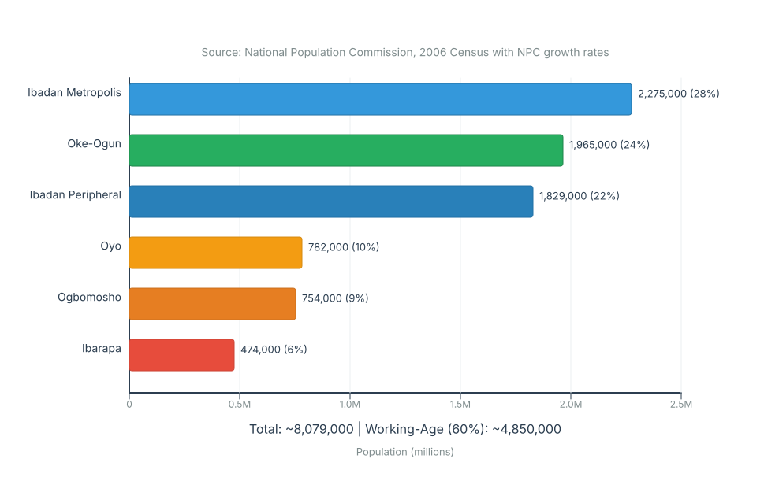
This chapter presents a comprehensive situational analysis of the Oyo State labour market, drawing on national survey data from the National Bureau of Statistics (NBS), state-level economic indicators, and the broader macroeconomic context within which the Skilled Labour Register operates. The analysis provides the empirical foundation upon which the registry methodology, survey instrument, and operational assumptions are built.
Table 4.1: State Overview
| Parameter | Detail |
|---|---|
| Location | Southwestern Nigeria; borders Kwara (north), Osun (east), Ogun (south), Republic of Benin (west) |
| State Capital | Ibadan, largest city in West Africa by geographic area |
| Land Area | Approximately 28,454 km² |
| Population (2006 Census) | 5,591,589 |
| Population (2024 Projection) | ~8.5–9.2 million (NPC 2.8–3.0% growth rate) |
| Number of LGAs | 33 |
| Geopolitical Zone | South-West |
| Major Languages | Yoruba (primary), English (official), Hausa (minority) |
| Major Cities | Ibadan, Ogbomosho, Oyo, Iseyin, Saki |
| Economic Base | Agriculture, commerce, manufacturing, services |
Oyo State’s 33 LGAs are organised into six zones for administrative and analytical purposes:
Table 4.2: Geographic Zones
| Zone | LGAs | Character | Population Share (est.) |
|---|---|---|---|
| Ibadan Metropolis | 5 | Urban; state capital; commercial and administrative centre | ~30% |
| Ibadan Peripheral | 6 | Peri-urban; mixed agriculture and emerging residential development | ~18% |
| Ogbomosho | 4 | Semi-urban; artisanal hub; education (LAUTECH) | ~12% |
| Oyo | 4 | Historical urban; mixed economy; cultural significance | ~10% |
| Oke-Ogun | 11 | Rural; agriculture-dominant; cross-border trade with Benin Republic | ~22% |
| Ibarapa | 3 | Rural; farming; emerging agribusiness corridor | ~8% |
Figure 4.2: Oyo State Population Distribution by Geographic Zone
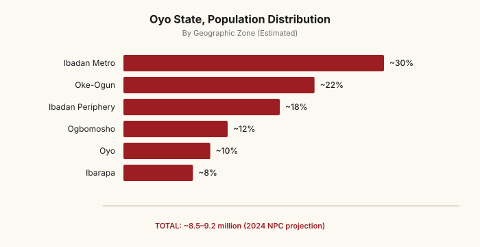
The 2006 National Population Census (the most recent completed census in Nigeria) recorded the following LGA-level populations. The 2024 projections apply the NPC annual growth rates (2.8–3.0% for urban areas, 2.3–2.5% for rural areas):
Table 4.3: Population Projections
| Zone | LGA | 2006 Census | 2024 Projection (est.) |
|---|---|---|---|
| Ibadan Metro | Ibadan North | 306,763 | ~502,000 |
| Ibadan North-East | 330,399 | ~541,000 | |
| Ibadan North-West | 152,834 | ~250,000 | |
| Ibadan South-East | 266,046 | ~435,000 | |
| Ibadan South-West | 282,585 | ~462,000 | |
| Subtotal | 1,338,627 | ~2,190,000 | |
| Ibadan Periph. | Akinyele | 211,811 | ~343,000 |
| Egbeda | 281,573 | ~456,000 | |
| Ido | 103,261 | ~160,000 | |
| Lagelu | 147,957 | ~240,000 | |
| Oluyole | 203,461 | ~333,000 | |
| Ona Ara | 202,725 | ~328,000 | |
| Subtotal | 1,150,788 | ~1,860,000 | |
| Ogbomosho | Ogbomosho North | 197,977 | ~316,000 |
| Ogbomosho South | 100,815 | ~161,000 | |
| Ogo Oluwa | 56,536 | ~83,000 | |
| Surulere | 126,434 | ~186,000 | |
| Subtotal | 481,762 | ~746,000 | |
| Oyo | Afijio | 134,173 | ~207,000 |
| Atiba | 150,272 | ~232,000 | |
| Oyo East | 124,095 | ~191,000 | |
| Oyo West | 107,584 | ~166,000 | |
| Subtotal | 516,124 | ~796,000 | |
| Oke-Ogun | Atisbo | 79,854 | ~117,000 |
| Irepo | 90,439 | ~133,000 | |
| Iseyin | 235,142 | ~365,000 | |
| Itesiwaju | 103,435 | ~152,000 | |
| Iwajowa | 92,298 | ~136,000 | |
| Kajola | 193,977 | ~285,000 | |
| Olorunsogo | 57,450 | ~84,000 | |
| Orelope | 55,602 | ~82,000 | |
| Ori Ire | 148,431 | ~218,000 | |
| Saki East | 89,811 | ~132,000 | |
| Saki West | 178,677 | ~277,000 | |
| Subtotal | 1,325,116 | ~1,981,000 | |
| Ibarapa | Ibarapa Central | 102,979 | ~154,000 |
| Ibarapa East | 118,226 | ~177,000 | |
| Ibarapa North | 101,092 | ~151,000 | |
| Subtotal | 322,297 | ~482,000 | |
| STATE TOTAL | 5,591,589 | ~8,055,000 |
Sources: NPC 2006 Census; 2024 projections based on NPC state growth rates (2.8% urban, 2.3% rural). Figures rounded to nearest thousand.
Table 4.4: Working-Age Population
| Parameter | Value | Source |
|---|---|---|
| Working-age population (15–64) | ~60% of total | NBS NLFS 2024 |
| Estimated working-age in Oyo | ~4.8–5.5 million | Calculated |
| Labour force participation rate | 77.3% (national) | NBS NLFS Q2 2024 |
| Estimated labour force in Oyo | ~3.7–4.3 million | Calculated |
| Youth (15–35) as % of working-age | ~45% | NBS estimate |
Implication: The estimated 3.7–4.3 million labour force participants in Oyo State represent the target population for the Skilled Labour Register. The initial field enumeration (targeting approximately 23,760 registrants) would capture approximately 0.5–0.6% of this population, a substantive initial registry that serves as a foundation for continuous expansion through ongoing self-registration.
The following national-level indicators from the NBS National Labour Force Survey (NLFS) provide the benchmark context for interpreting Oyo State labour market conditions:
Table 4.5: National Labour Market Indicators
| Indicator | Value | Period | Source |
|---|---|---|---|
| Labour force participation rate | 77.3% | Q2 2024 | NBS NLFS |
| Employment-to-population ratio | 73.4% | Q2 2024 | NBS NLFS |
| Unemployment rate | 5.3% | Q2 2024 | NBS NLFS |
| Underemployment rate (time-related) | 12.2% | Q2 2024 | NBS NLFS |
| Combined unemployment + underemployment | 17.5% | Q2 2024 | NBS NLFS |
| Informal employment (% of total) | 92.6% | Q2 2024 | NBS NLFS |
| Self-employment (% of employed) | 75.2% | Q2 2024 | NBS NLFS |
| Youth unemployment (15–24) | 8.4% | Q2 2024 | NBS NLFS |
| Female labour force participation | 73.1% | Q2 2024 | NBS NLFS |
The Southwest geopolitical zone (comprising Lagos, Oyo, Ogun, Osun, Ondo, and Ekiti states) exhibits distinctive labour market characteristics:
Table 4.6: Southwest Regional Context
| Indicator | Southwest | National | Deviation |
|---|---|---|---|
| Informal employment | 89.4% | 92.6% | Lower (more formalised) |
| Self-employment | 71.8% | 75.2% | Lower (more wage employment) |
| Female LFP | 76.2% | 73.1% | Higher (Yoruba trading culture) |
| Education (SSS+ attainment) | 62.1% | 53.4% | Higher (better educational infrastructure) |
| Urban population share | 58.3% | 48.0% | Higher (more urbanised) |
Observation: The Southwest region, and Oyo State within it, has a more urbanised, better-educated, and slightly more formalised labour market than the national average. However, informal employment still dominates (89.4%), and self-employment remains the primary mode of economic activity (71.8%).
Figure 4.3: The Visibility Gap, Why the Register Matters
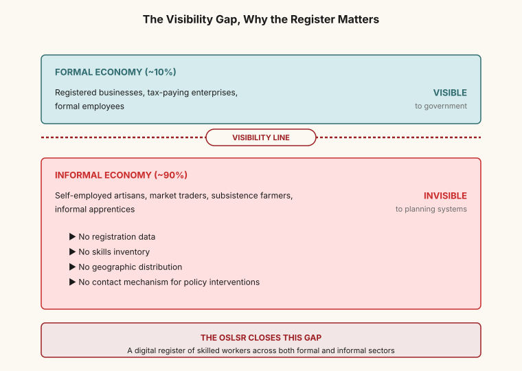
The fundamental policy problem that the OSLSR addresses is the invisibility of the informal economy to government planning systems. When 90% of the labour force operates outside formal registration, taxation, and statistical systems, government has no reliable data on:
The OSLSR is designed to systematically bridge this visibility gap.
Oyo State’s economy is characterised by the following sectoral structure:
Table 4.7: Oyo State Economic Sectors
| Sector | Contribution (est.) | Key Activities | Major Locations |
|---|---|---|---|
| Agriculture | ~35% | Cocoa, cassava, maize, palm oil, livestock, fisheries | Oke-Ogun, Ibarapa, Ibadan Peripheral |
| Commerce & Trade | ~25% | Wholesale/retail, cross-border trade, market trading | Ibadan Metro, Saki West, Oyo |
| Services | ~20% | Education, health, transport, professional services | Ibadan Metro, Ogbomosho |
| Manufacturing | ~12% | Food processing, textiles, construction materials | Oluyole (industrial estate), Ibadan |
| Construction | ~8% | Residential/commercial building, infrastructure | Ibadan Metro and Peripheral |
Figure 4.4: Oyo State Economic Structure
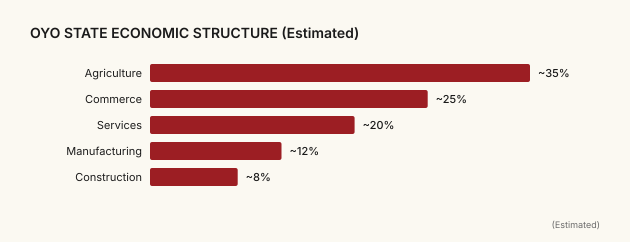
Table 4.8: Oyo State Economic Structure
| Zone | Dominant Sector | Key Products/Activities | Labour Market Character |
|---|---|---|---|
| Ibadan Metro | Commerce, Services | Retail trade, education, health, government services, tech startups | Diverse skills; higher wage employment; digital skills emerging |
| Ibadan Peripheral | Agriculture, Construction | Peri-urban farming, residential construction, food processing | Transition zone; agricultural and construction skills |
| Ogbomosho | Agriculture, Manufacturing | Cassava processing, textile production, artisanal manufacturing | Strong artisanal tradition; vocational skills hub |
| Oyo | Agriculture, Commerce | Mixed farming, market trading, cultural tourism | Historical trading town; mixed economy |
| Oke-Ogun | Agriculture | Yam, cassava, maize, cashew, shea; cross-border trade | Agriculture-dominant; seasonal employment patterns; border trade |
| Ibarapa | Agriculture | Cassava, palm oil, cocoa, livestock | Strong farming base; emerging agro-processing |
Nigeria, and Oyo State within it, faces a significant youth employment challenge driven by demographic structure:
Table 4.9: The Youth Bulge
| Indicator | Value | Implication |
|---|---|---|
| Population under 35 | ~65% (national) | Massive youth labour force entry |
| Annual new labour market entrants | ~4 million (national) | Job creation demand exceeds supply |
| Youth unemployment (15–24) | 8.4% (NBS) | Higher than adult unemployment |
| Youth underemployment | ~18% (NBS) | Many young workers in inadequate employment |
| NEET rate (15–24) | ~21.7% (NBS) | Not in education, employment, or training |
A persistent skills mismatch characterises the Nigerian labour market:
Figure 4.5: Skills Mismatch, Demand vs. Supply
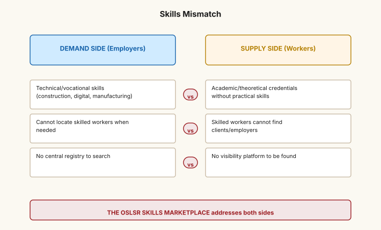
The following table summarises the critical data gaps that the OSLSR is designed to fill:
Table 4.10: Existing Data Gaps
| Data Gap | Current State | OSLSR Resolution |
|---|---|---|
| State-level skills inventory | No comprehensive skills data exists for Oyo State | 150-skill occupational taxonomy captured for every registrant |
| LGA-level labour distribution | NBS data available only at state/zone level | Per-LGA data from enumeration + LGA field in survey |
| Informal sector visibility | ~90% of workers invisible to government systems | Direct enumeration of informal workers with NIN-linked registration |
| Skills-to-location mapping | No data on geographic distribution of specific trades | GPS-tagged submissions + LGA field enable skills mapping |
| Skills demand data | No systematic capture of unmet training needs | Q5.3 (“Skills you would like to learn”) captures training demand |
| Enterprise registration data | CAC registration data incomplete for informal businesses | Q5.6 captures registration status of informal enterprises |
| Worker contact database | No mechanism to reach informal workers for policy interventions | Phone numbers and marketplace profiles create contactable database |
The OSLSR operates within the following national policy context:
Table 4.11: National Policy Framework
| Policy | Relevance to OSLSR |
|---|---|
| National Development Plan 2021–2025 | Targets job creation and skills development; requires state-level labour data |
| Subnational Business Enabling Environment Reform Programme | World Bank-supported ($750M) programme assessing states across 16 indicators including skilled labour readiness; Oyo State ranked 3rd nationally (62.7%) in the 2025 assessment, the register directly strengthens this indicator |
| Nigeria Data Protection Act 2023 | Governs collection, storage, and processing of personal data (OSLSR compliance: Chapter 11) |
| National Skills Qualification Framework (NSQF) | Provides framework for skills recognition and certification |
| National Employment Policy | Emphasises need for labour market information systems |
| Decent Work Country Programme (ILO-Nigeria) | ILO partnership for improved labour statistics and decent work promotion |
Table 4.12: State-Level Context
| Factor | Description |
|---|---|
| Oyo State Development Agenda | Focus on youth empowerment, skills acquisition, and MSME development |
| State Business Enabling Environment Reforms | Oyo State’s active participation in the federal subnational business reform assessment programme; state performance rose from 27th to 3rd place nationally, demonstrating sustained reform commitment |
| Ministry of Trade, Industry, Investment and Cooperatives | Commissioning authority; mandate includes skills development, enterprise support, and business enabling environment reform |
| State Budget Allocation | Annual allocations for youth empowerment and skills training programmes |
| Oyo State Digital Economy Strategy | Emerging focus on technology-enabled service delivery |
Six structural factors converge to make the current moment optimal for establishing a state-level skilled labour register:
Table 4.13: Convergence of Factors, Why Now
| # | Factor | Description |
|---|---|---|
| 1 | NIN Penetration | National Identity Number enrollment has reached critical mass, providing a viable unique identifier for register deduplication |
| 2 | Smartphone Penetration | Smartphone ownership among field workers has reached levels that support mobile-first data collection |
| 3 | 4G/5G Coverage | Network coverage expansion (including the Airtel 5G deployment) enables digital data synchronisation even in semi-urban areas |
| 4 | Post-COVID Economic Recovery | The economic disruption of 2020–2022 has heightened government interest in understanding and supporting the informal workforce |
| 5 | Business Environment Reform Momentum | Oyo State’s rising performance in the federal subnational business enabling environment assessment (3rd nationally in 2025) creates institutional demand for the skilled labour readiness data that only a comprehensive state register can provide |
| 6 | State Government Commitment | The commissioning of this engagement demonstrates political will to invest in evidence-based labour policy and sustain business environment reform gains |
The situational analysis reveals that Oyo State’s labour market is characterised by:
The OSLSR is purpose-built to address these conditions, creating, for the first time, a digital, searchable, NIN-linked register of Oyo State’s skilled workforce that spans both the formal and informal economies.
Document Reference: CHM/OSLR/2026/002 | Chapter 4 | Chemiroy Nigeria Limited
Figure 5.1: Comparative Capability Assessment, State-Level Registry Initiatives
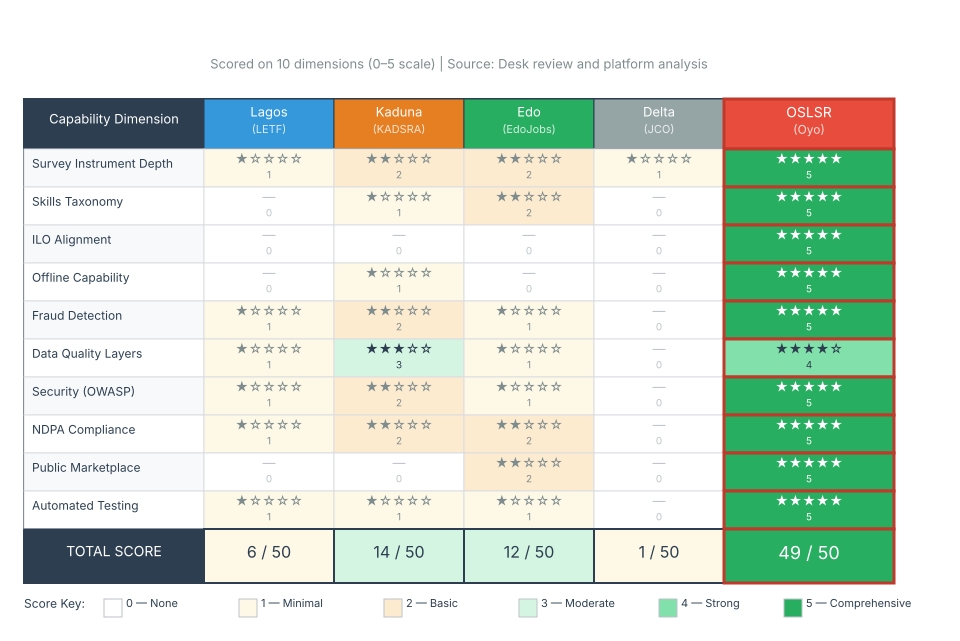
This chapter presents a comparative analysis of state-level workforce registration and skills enumeration initiatives across Nigeria. The analysis serves two purposes: (1) to situate the Oyo State Skilled Labour Register within the broader national landscape of sub-national labour market information systems, and (2) to identify lessons learned and best practices from comparable initiatives that have informed the OSLSR design.
Several Nigerian states have undertaken workforce registration or skills mapping initiatives in recent years, driven by the shared challenge of informal economy visibility and the need for evidence-based skills development planning. However, these initiatives vary significantly in scope, methodology, technology, and outcomes.
Figure 5.2: State-Level Registry Initiatives in Nigeria
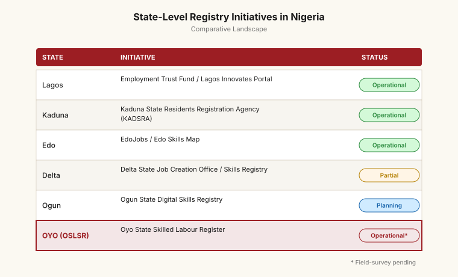
Table 5.1: Lagos State, Employment Trust Fund
| Parameter | Detail |
|---|---|
| Initiative | Lagos Employment Trust Fund (LETF) / Lagos State Employment Portal |
| Established | 2016 |
| Administering Body | Lagos Employment Trust Fund (State agency) |
| Scope | Loan facilitation for entrepreneurs; job matching; skills training referral |
| Technology | Web portal with online registration |
| Registration Model | Self-registration (online only); employer registration for job posting |
| Skills Taxonomy | General skills categories (not detailed artisan-level) |
| Unique Identifier | BVN (Bank Verification Number) for loan applicants |
| Estimated Registrants | 300,000+ (self-reported) |
| Key Strength | Direct linkage to financial services (loans up to ₦5M) creates strong registration incentive |
| Key Limitation | Primarily serves the formal/semi-formal sector; limited penetration into informal artisan economy |
| Fraud Detection | BVN-based deduplication; no field enumeration component |
Table 5.2: Kaduna State, Kaduna State Residents Registration Agency (KADSRA)
| Parameter | Detail |
|---|---|
| Initiative | Kaduna State Residents Registration Agency (KADSRA) |
| Established | 2018 |
| Administering Body | Dedicated state agency under the Governor’s office |
| Scope | Universal resident registration (not skills-specific); captures demographics, occupation, location |
| Technology | Custom mobile application for field agents; web dashboard |
| Registration Model | Door-to-door enumeration by field agents; self-registration at designated centres |
| Skills Taxonomy | Occupational categories (broad groupings, not detailed skill-level) |
| Unique Identifier | KAD-ID (state-assigned unique number) |
| Estimated Registrants | 6+ million (reported 2022) |
| Key Strength | Largest state-level registration exercise in Nigeria; universal coverage (not just skilled workers) |
| Key Limitation | Broad scope means limited depth of skills data; designed for general administration rather than labour market intelligence |
| Fraud Detection | Biometric capture (fingerprint); agent supervision |
Table 5.3: Edo State, EdoJobs / Edo Skills Map
| Parameter | Detail |
|---|---|
| Initiative | EdoJobs portal / Edo Innovation Hub |
| Established | 2019 |
| Administering Body | Edo State Skills Development Agency |
| Scope | Youth skills training, job matching, skills assessment; linked to GIZ partnership |
| Technology | Web platform with online registration; integrated with training programmes |
| Registration Model | Self-registration (online); training programme enrollment captures skills data |
| Skills Taxonomy | Training programme-oriented categories (ICT, fashion, construction, agriculture) |
| Unique Identifier | NIN (National Identification Number) |
| Estimated Registrants | 50,000+ (through training programmes) |
| Key Strength | Direct linkage to skills training creates pipeline from registration to development; GIZ technical support |
| Key Limitation | Registration is training-programme driven, does not capture existing skilled workers who are not seeking training |
| Fraud Detection | NIN validation; training programme attendance records |
Table 5.4: Delta State, Job Creation Office
| Parameter | Detail |
|---|---|
| Initiative | Delta State Job Creation Office (JCO) |
| Established | 2020 |
| Administering Body | Delta State Ministry of Economic Planning |
| Scope | Youth employment tracking; skills database for government programmes |
| Technology | Basic web registration form; spreadsheet-based data management |
| Registration Model | Self-registration (online and paper); integrated with STEP/YAGEP programmes |
| Skills Taxonomy | General skills categories |
| Estimated Registrants | ~20,000 |
| Key Limitation | Limited technology infrastructure; data management challenges at scale |
Table 5.5: Comparative Matrix
| Feature | Lagos (LETF) | Kaduna (KADSRA) | Edo (EdoJobs) | OSLSR (Oyo) |
|---|---|---|---|---|
| Primary Purpose | Finance access | Resident ID | Skills training | Labour register |
| Target Population | Entrepreneurs | All residents | Youth | Skilled workers |
| Registration Channels | Web only | Field + centres | Web + training | Mobile PWA + Web + Field |
| Offline Capability | No | Limited | No | Yes (7-day) |
| Skills Taxonomy Depth | General categories | Occupation only | Training categories | 150 skills, 20 sectors |
| ILO Alignment | No | No | Partial | Yes (ICLS-19) |
| NIN-Based Deduplication | No (BVN) | No (KAD-ID) | Yes | Yes |
| Automated Fraud Detection | Basic | Biometric | Basic | Multi-algorithm |
| Skills Marketplace | No | No | Partial (job board) | Yes (public directory) |
| Immutable Audit Trail | Unknown | Unknown | Unknown | Yes (SHA-256 chain) |
| NDPA Compliance | Unknown | Partial | Partial | Full compliance |
| Automated Testing | Unknown | Unknown | Unknown | 3,564 tests |
| OWASP Assessment | Unknown | Unknown | Unknown | 10/10 SECURE |
| Progressive Consent | No | No | No | 3-tier model |
The comparative analysis yields five key lessons that have directly informed the OSLSR design:
Observation: Lagos and Edo rely primarily on web-based self-registration, which excludes workers who lack internet access or digital literacy. Kaduna’s field agent model achieves broader coverage but requires massive human resources.
OSLSR Application: The OSLSR implements a three-channel approach (Mobile PWA for field enumeration, desktop web for data entry, public self-registration), combining the reach of field enumeration with the scalability of self-registration.
Observation: Initiatives with broad occupational categories (e.g., “Construction,” “Agriculture”) provide limited utility for skills matching or labour market analysis. The value of a registry increases with the granularity of the skills data captured.
OSLSR Application: The OSLSR implements a 150-skill taxonomy across 20 sectors, mapped to ISCO-08 international standards (Chapter 8), providing the granularity required for meaningful skills matching and policy analysis.
Observation: Lagos achieves high registration through financial incentive (loan access). Edo achieves registration through training programme enrollment. Registries without clear incentives struggle with participation.
OSLSR Application: The OSLSR offers the Skills Marketplace as a tangible incentive, registered workers gain visibility to potential employers and clients through a publicly searchable directory, creating a direct economic benefit from registration.
Observation: States that rely on internet-connected registration have limited reach in rural areas with poor connectivity.
OSLSR Application: The OSLSR PWA operates for up to 7 days offline with automatic synchronisation, a critical capability for enumeration in rural Oke-Ogun and Ibarapa LGAs where connectivity is intermittent.
Observation: Large-scale registration exercises (particularly Kaduna’s 6M+ registrants) face significant data quality challenges without systematic fraud detection and quality assurance mechanisms.
OSLSR Application: The OSLSR implements a 4-layer quality assurance protocol (Chapter 14) with automated fraud detection, supervisory review, and statistical quality gates, a more rigorous approach than any comparable state initiative.
The comparative analysis positions the OSLSR as a next-generation state-level labour register that addresses the limitations observed in earlier state initiatives:
Figure 5.3: OSLSR, Next-Generation Positioning
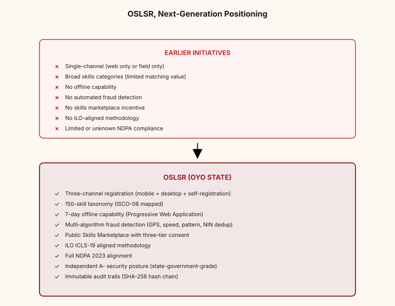
The comparative analysis demonstrates that while several Nigerian states have undertaken workforce registration or skills mapping initiatives, the OSLSR represents a significant methodological and technological advancement over existing efforts. The OSLSR’s distinguishing features, offline-capable multi-channel data collection, granular 150-skill taxonomy with ISCO-08 mapping, automated multi-algorithm fraud detection, public skills marketplace with progressive consent, and ILO ICLS-19 aligned survey methodology, position it as a potential model for state-level labour market information systems in Nigeria.
The lessons drawn from Lagos, Kaduna, Edo, and Delta have been systematically incorporated into the OSLSR design, ensuring that known failure modes and limitations are addressed proactively rather than discovered post-deployment.
Document Reference: CHM/OSLR/2026/002 | Chapter 5 | Chemiroy Nigeria Limited
Figure 6.1: Baseline Study Methodology Framework
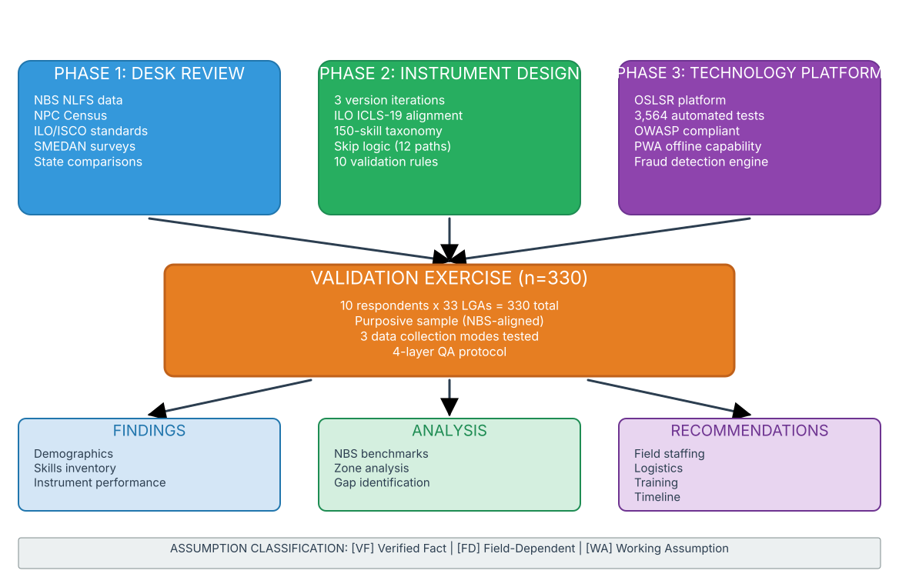
This chapter describes the methodological framework adopted for the baseline study, encompassing the research design, data collection strategy, sampling approach, quality assurance protocols, and the assumption classification system employed throughout this report. The methodology was designed in accordance with the International Labour Organization (ILO) guidelines for labour force surveys, specifically the Resolution Concerning Statistics of Work, Employment and Labour Underutilization adopted at the 19th International Conference of Labour Statisticians (ICLS) in Geneva, 2013.
The baseline study adopted a mixed-methods approach comprising:
Desk Review (Secondary Data Analysis), Systematic analysis of existing labour market data from the National Bureau of Statistics (NBS), National Population Commission (NPC), International Labour Organization (ILO), Small and Medium Enterprises Development Agency of Nigeria (SMEDAN), and state-level administrative records
Instrument Development, Design, iterative refinement, and validation of a structured survey questionnaire aligned with ILO ICLS-19 standards, incorporating a bespoke 150-skill occupational taxonomy
Technology Platform Development, Construction and deployment of a digital data collection, management, and analysis platform incorporating offline capability, fraud detection, and quality assurance automation
Structured Validation Exercise, A purposive field validation across all 33 LGAs to verify instrument functionality, assess platform performance, and establish preliminary demographic baselines
Comparative Analysis, Benchmarking against comparable state-level labour registration initiatives in Nigeria to identify best practices and design differentiation
Following international best practice in research reporting, this study employs a three-tier assumption classification framework to ensure transparency about the epistemic status of all data, projections, and estimates presented in this report. Every material assertion is classified using one of the following tags:
Table 6.1: Assumption Classification Framework
| Classification | Symbol | Definition | Verification Standard |
|---|---|---|---|
| VERIFIED FACT | [VF] |
Data sourced from authoritative national or international institutions, independently confirmable through publicly available records | Source cited at point of use; data retrievable from referenced publication |
| FIELD-DEPENDENT | [FD] |
Reasonable estimate based on regional or national data, requiring field verification through the full-scale statewide enumeration (Deliverable 2) to establish Oyo State-specific values | National benchmark cited; state-specific validation pending full enumeration |
| WORKING ASSUMPTION | [WA] |
Projections, estimates, or design parameters based on professional judgement, international standards, or comparable programme experience; subject to revision based on field evidence | Basis of assumption documented; sensitivity noted where material |
This framework is applied consistently throughout Chapters 4–17 of this report. Readers are advised that findings tagged [FD] or [WA] are explicitly acknowledged as requiring validation through subsequent project phases. This intellectual honesty about what is known, what is estimated, and what remains to be tested is not a limitation, it is the foundation of methodological rigour (cf. ILO, Guidelines Concerning the Measurement of Employment, 2018).
The desk review encompassed a systematic analysis of the following categories of secondary data:
Table 6.2: Scope
| Category | Sources Reviewed | Data Extracted |
|---|---|---|
| National Labour Statistics | NBS Nigeria Labour Force Survey (NLFS), Q1 2024, Q2 2024, Annual 2023 | Employment rates, informal sector size, self-employment patterns, sectoral distribution, education-employment correlations |
| Population Data | NPC 2006 National Census; NPC Population Projections (3.0% annual growth rate) | LGA-level population estimates for Oyo State (33 LGAs) |
| MSME Data | SMEDAN/NBS National MSME Survey 2021; PwC MSME Survey 2020 | Enterprise size distribution, sector concentration, formality rates |
| International Standards | ILO ICLS-19 Resolution (2013); ISCO-08 Classification | Labour force classification methodology; occupational taxonomy framework |
| Vocational Skills | NABTEB 26 Trade Syllabi; NBTE Vocational Skills Directory; ITF Skills Acquisition Reports | Occupational categories, artisan trade classifications, vocational training standards |
| State-Level Initiatives | Lagos LSETF, Kaduna KADSTEP, Edo EdoJobs, Kano State Trade Registry | Comparable programme designs, implementation approaches, gaps and lessons |
| Data Protection | Nigeria Data Protection Act 2023 (NDPA); NDPR 2019 | Compliance requirements, consent models, data retention obligations |
Each secondary data source was assessed against four quality criteria:
Sources meeting all four criteria were classified as [VF]. Sources meeting three criteria were used as supporting evidence with appropriate caveats. Sources meeting fewer than three criteria were excluded.
An Enumeration Area (EA) is the smallest geographic unit into which a country’s territory is divided for systematic field data collection during a census or large-scale survey. The United Nations Principles and Recommendations for Population and Housing Censuses (Rev. 3, Para. 1.186) establishes that EAs must be: mutually exclusive (no overlap), exhaustive (no gaps), bounded by identifiable physical features, consistent with the administrative hierarchy, approximately equal in population, and small enough for a single enumerator to canvass within the allotted period.
In Nigeria, the National Population Commission (NPC) is the statutory authority responsible for Enumeration Area Demarcation (EAD), the process of dividing the entire national territory into EAs. The National Bureau of Statistics (NBS) subsequently utilises digitised EA maps from the NPC as the spatial basis for household surveys, including the Nigeria Labour Force Survey (NLFS) from which the labour market benchmarks used in this study are derived.
Nigeria has conducted EAD exercises prior to four census operations:
Table 6.3: History of EA Demarcation in Nigeria
| Census | EAD Innovation | Technology |
|---|---|---|
| 1973 | First-ever pre-census EA demarcation in Nigeria | Manual cartographic methods, paper maps |
| 1991 | Expanded delineation with limited aerial photography | Paper maps, limited aerial imagery |
| 2006 | GPS and satellite imagery introduced for geo-referenced EA maps | GPS receivers, satellite imagery, OMR/OCR/ICR data capture |
| 2023 | First fully digital, nationwide GIS-based EAD; completed November 2021 after 18 phases spanning 7 years | Esri ArcGIS Pro, ArcPy, custom EADPad application, high-resolution satellite imagery |
The 2023 Census EAD was a landmark achievement, the NPC received the Special Achievement in GIS (SAG) Award at the 2022 Esri User Conference in San Diego, California, for its nationwide digital EA demarcation of all 774 LGAs using GIS methodology. The exercise produced spatial datasets at every level of the geographic hierarchy: EA, Supervisory Area (SA), Locality, Registration Area/Ward, and LGA, along with geocoded building footprints, road networks, water bodies, and infrastructure data.
The NPC’s EA frame follows a nested geographic hierarchy in which each level sits entirely within the level above:
Figure 6.2: National Enumeration-Area Hierarchy
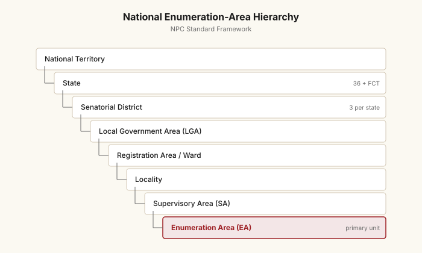
This strict nesting, no EA crosses a ward boundary, no ward crosses an LGA boundary, is what makes the EA frame usable as both a census operational unit and a national survey sampling frame.
The NPC designs each EA to be coverable by one enumerator within 5 days. International norms and available NPC documentation indicate a target population of approximately 500–800 persons per EA, varying by settlement density: urban high-density areas use the upper range (fewer, larger-population EAs), while rural dispersed areas use the lower range (more, smaller-population EAs). [WA]
The NPC does not publish state-level EA counts in publicly available documentation. To provide a planning reference, the Consultant developed a density-adjusted estimation model using verified 2006 NPC census data for all 33 LGAs of Oyo State, applying differentiated EA population targets by settlement classification:
Table 6.4: EA Design Parameters and Oyo State Estimate
| Classification | LGAs | Population (2006) [VF] | Persons/EA | Estimated EAs [WA] |
|---|---|---|---|---|
| Urban (Ibadan metropolitan core) | 5 | 1,343,147 | 800 | 1,679 |
| Semi-Urban (secondary towns & peri-urban Ibadan) | 11 | 2,201,296 | 650 | 3,386 |
| Rural (dispersed agrarian settlements) | 17 | 2,036,451 | 500 | 4,075 |
| Oyo State Total | 33 | 5,580,894 | 611 (weighted avg.) | ~9,140 |
Sensitivity analysis across conservative (900/750/600) and granular (700/550/400) EA sizing parameters yields a plausible range of 7,400–11,100 EAs for Oyo State. The weighted average of ~611 persons per EA falls squarely within the UN-recommended range. A detailed LGA-by-LGA breakdown with full methodology is provided in the reference note (CHM/OSLR/2026/REF-001).
The NPC’s EA framework provides three essential inputs for the Skilled Labour Register:
However, the OSLSR is not a census, it is a voluntary skills registration exercise. This fundamental difference in purpose requires deliberate adaptations to the NPC model, as detailed in the following section.
The Oyo State Skilled Labour Register adapts, rather than directly adopts, the NPC’s EA framework, reflecting the fundamental differences between a mandatory population census and a voluntary skills registration exercise:
Table 6.5: Adaptation Rationale
| Dimension | NPC Census Model | OSLSR Adapted Model | Rationale for Adaptation |
|---|---|---|---|
| Purpose | Universal population count | Voluntary skilled workforce registration | Register captures willing respondents, not every household |
| Primary unit | EA (~500–800 persons) | LGA (33 units statewide) | 3 enumerators per LGA cannot cover ~280 EAs per LGA individually; LGA is the appropriate accountability unit |
| Sub-unit | Supervisory Area | Ward (rotation basis) | Wards are the locally recognised administrative units with community leadership structures |
| Coverage target | 100% household enumeration | Maximum voluntary participation | Not every person will be encountered or willing to register |
| Boundary method | Pre-delineated GIS polygon maps | GPS capture at point of submission | OSLSR builds its own coverage map progressively; pre-printed EA maps are not operationally necessary |
| Map production | Years in advance (EAD exercise) | Real-time (progressive GPS heatmap) | Eliminates dependency on NPC map availability |
| Enumerators per unit | 1 per EA | 3 per LGA (rotating across wards) | Workload model sized for voluntary registration throughput, not universal coverage |
| Duration | 5 days per EA | 30 days per LGA (continuous) | Longer engagement period reflects voluntary nature, respondents must be located, engaged, and persuaded |
This adaptation preserves the core EA principles, systematic geographic coverage, workload-based assignment, and quality assurance through spatial analysis, while recognising that a skills register operates under fundamentally different conditions from a population census.
The OSLSR adopts a four-tier geographic hierarchy for enumeration planning, aligned with the upper tiers of the NPC hierarchy:
Figure 6.3: OSLSR Enumeration-Area Hierarchy
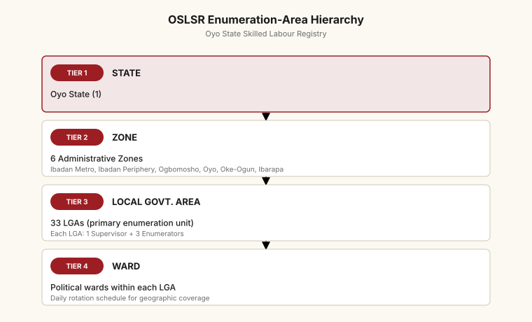
Tiers 1–3 map directly to the NPC hierarchy (State → Senatorial District/Zone → LGA). Tier 4 corresponds to the NPC’s Registration Area/Ward level, but the OSLSR uses wards as rotation units for enumerator deployment rather than as fixed EA assignments.
The Local Government Area (LGA), rather than the individual EA, serves as the primary enumeration unit for the following reasons:
Table 6.6: LGA as Primary Enumeration Unit
| Criterion | Justification |
|---|---|
| Administrative alignment | LGAs are the smallest administrative units with dedicated local government structures, enabling coordination with LGA chairmen and community leaders |
| NPC precedent | The NPC organises census operations by LGA, and all population data (Chapter 4) is available at the LGA level |
| Staffing model | The 4-person team structure (1 Supervisor + 3 Enumerators per LGA) maps directly to the LGA boundary |
| Scale proportionality | With ~9,140 estimated NPC EAs across 33 LGAs (averaging ~277 EAs per LGA), assigning 3 enumerators to individual EAs would require ~27,420 enumerators, far exceeding the resource envelope. The LGA is the operationally appropriate unit for 132 field personnel |
| Dashboard analytics | The OSLSR platform provides per-LGA dashboards, enabling real-time monitoring of enumeration progress by geographic unit |
| Validation alignment | The baseline validation exercise (n=330) was structured at 10 respondents per LGA, establishing LGA-level baselines |
Within each LGA, the three assigned enumerators are deployed across political wards on a rotating daily schedule:
Table 6.7: Ward-Level Enumeration Planning
| Day | Enumerator A | Enumerator B | Enumerator C |
|---|---|---|---|
| 1 | Ward cluster 1 | Ward cluster 2 | Ward cluster 3 |
| 2 | Ward cluster 2 | Ward cluster 3 | Ward cluster 1 |
| 3 | Ward cluster 3 | Ward cluster 1 | Ward cluster 2 |
| … | Rotation continues |
This rotation model ensures:
Unlike traditional NPC EA delineation, which relies on pre-demarcated GIS polygon maps produced years in advance during the EAD exercise (Section 6.5.2), the OSLSR creates a digital enumeration area map in real time through GPS capture at the point of each survey submission:
This approach eliminates the OSLSR’s dependency on NPC map availability while producing a geographic dataset that can be compared against the NPC’s EA frame as a post-enumeration coverage audit.
Table 6.8: Enumeration Area Summary
| Parameter | NPC Census Reference | OSLSR Design |
|---|---|---|
| Geographic hierarchy | State → Senatorial District → LGA → Ward → Locality → SA → EA | State → Zone → LGA → Ward |
| Primary enumeration unit | EA (~500–800 persons) | LGA (33 units) |
| Estimated EAs in Oyo State | ~9,140 [WA] | N/A (LGA-based) |
| Team per unit | 1 Enumerator per EA | 1 Supervisor + 3 Enumerators per LGA |
| Sub-unit deployment | Fixed EA assignment | Ward rotation (daily schedule) |
| EA mapping method | Pre-demarcated GIS polygons (EAD exercise) | GPS-based digital mapping (real-time) |
| Coverage monitoring | EA completion checklists | Platform dashboard with LGA drill-down + GPS heatmap |
| Quality assurance | Supervisor visits to EAs | GPS cluster analysis + ward rotation cross-validation |
For detailed NPC EA methodology, Oyo State LGA-by-LGA EA estimates, and the density-adjusted estimation model, see Reference Note CHM/OSLR/2026/REF-001.
The structured validation exercise was designed to achieve the following objectives:
Table 6.9: Sampling Strategy
| Parameter | Design Choice | Justification |
|---|---|---|
| Sample Size | 330 respondents | 10 per LGA × 33 LGAs = complete geographic coverage |
| Sampling Method | Purposive (quota-based) | Validation objective requires demographic representativeness, not probability sampling |
| Stratification | By LGA (primary) and gender (secondary) | Ensures every LGA is represented; gender quota approximates national distribution |
| Demographic Quotas | Age, education, employment status aligned with NBS NLFS Q2 2024 benchmarks | Enables comparison of instrument performance across representative profiles |
The validation exercise is subject to the following acknowledged limitations:
Non-probability sample: The purposive sampling design does not support inferential statistical analysis or population-level generalisation. Findings are valid for instrument validation and operational planning only. [WA]
Sample size: Ten (10) respondents per LGA provides sufficient diversity for instrument testing but insufficient power for LGA-level statistical estimates. State-level aggregates (n=330) provide indicative patterns only. [WA]
Geographic coverage: While all 33 LGAs are represented, intra-LGA variation (e.g., urban wards vs. rural settlements within a single LGA) is not captured at this sample size. [FD]
Temporal snapshot: The validation exercise captures a single point-in-time assessment. Seasonal employment variations (e.g., agricultural planting/harvest cycles) are not reflected. [FD]
These limitations are inherent to the validation phase design and will be addressed by the full-scale statewide enumeration (Deliverable 2), which will employ a probability-based sampling or total enumeration approach with statistically adequate sample sizes per LGA.
The OSLSR platform supports three distinct data collection modes, all of which were validated during the baseline exercise:
Table 6.10: Data Collection Modes
| Mode | Channel | Target Users | Connectivity | Validation Status |
|---|---|---|---|---|
| Field Enumeration | Mobile PWA (Android 8.0+) | Trained Enumerators | Offline-capable (7-day retention) | ✓ Validated |
| Desktop Data Entry | Web Application (Desktop) | Data Entry Clerks | Online required | ✓ Validated |
| Public Self-Registration | Web Application (Any device) | General Public | Online required | ✓ Validated |
The field enumeration mode employs a Progressive Web Application (PWA) architecture with the following offline provisions:
This architecture is critical for field deployment in Oyo State, where network connectivity is inconsistent across rural and peri-urban LGAs, particularly in the Oke-Ogun and Ibarapa zones.
Data quality assurance is enforced through a multi-layer framework:
All respondents are presented with a clear, plain-language explanation of the survey’s purpose, the data to be collected, how the data will be used, and their right to decline participation. The survey instrument includes a mandatory consent gate (Question 1.2), no personal data is collected unless the respondent explicitly consents.
The data collection methodology complies with the Nigeria Data Protection Act 2023 (NDPA), including:
The baseline study methodology is summarised in the following framework diagram:
Figure 6.4: Baseline Study Methodology, Summary Flow
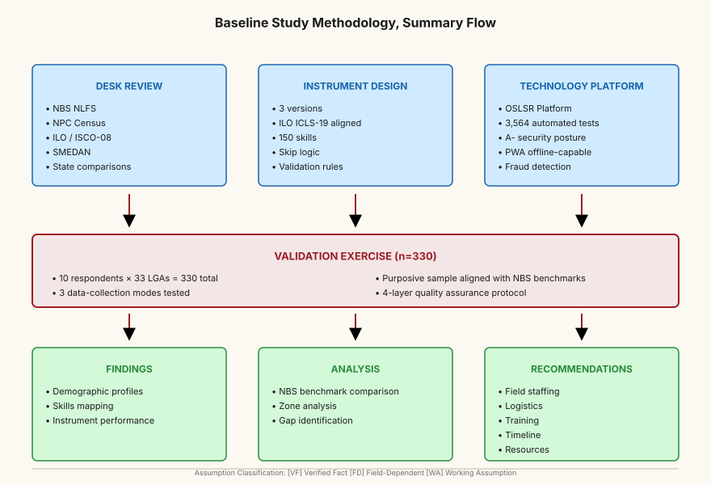
Document Reference: CHM/OSLR/2026/002 | Chapter 6 | Chemiroy Nigeria Limited
Figure 7.1: ILO ICLS-19 Labour Force Classification Cascade
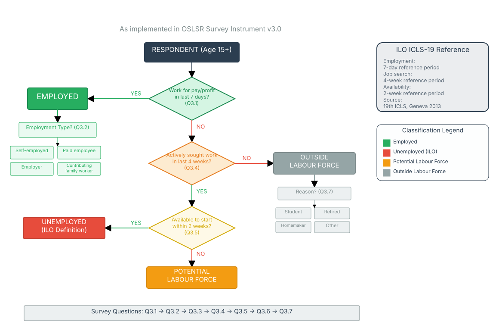
This chapter documents the design, structure, and iterative validation of the OSLSR Labour & Skills Registry Survey, the primary data collection instrument for the Oyo State Skilled Labour Register. The instrument was purpose-built to capture the multidimensional nature of labour force participation in Oyo State, incorporating international statistical standards, Nigerian regulatory requirements, and the specific policy objectives of the commissioning authority.
The final instrument (Version 3.0) represents the outcome of three iterative review cycles, each incorporating feedback from methodological review, technical feasibility assessment, and alignment verification against the ILO International Conference of Labour Statisticians (ICLS-19) framework.
The survey instrument was designed according to five governing principles:
Table 7.1: Design Principles
| # | Principle | Rationale | Implementation |
|---|---|---|---|
| 1 | ILO ICLS-19 Alignment | Ensures data compatibility with national and international labour force statistics | Labour force classification cascade (Q3.1–Q3.4) follows the ICLS-19 employment/unemployment resolution framework |
| 2 | Minimum Respondent Burden | Maximises completion rates in field conditions where respondent attention is limited | 10-minute estimated completion time; skip logic eliminates irrelevant questions |
| 3 | Data Minimisation | NDPA 2023 compliance requires collection of only data necessary for the stated purpose | 36 questions total; no questions unrelated to registry objectives |
| 4 | Progressive Consent | Respondents must understand and agree to each level of data sharing | Three-tier consent: (1) registry participation, (2) anonymous marketplace, (3) identifiable contact details |
| 5 | Digital-First, Paper-Compatible | Field conditions may necessitate paper backup, but primary collection is digital | One-question-per-screen mobile interface; paper form layout mirrors digital flow for data entry digitisation |
The survey instrument underwent three major revisions before finalisation:
Table 7.2: Version History
| Version | Date | Key Changes | Trigger |
|---|---|---|---|
| v1.0 | December 2025 | Initial 28-question instrument; basic demographics, employment status, skills inventory (40 skills) | Inception phase design |
| v2.0 | January 2026 | Expanded to 33 questions; added NIN requirement, LGA field, years of experience, expanded employment types; skills expanded to 50+ | PRD requirements analysis (FR5, FR17, FR21) |
| v3.0 | January 2026 | Finalised at 36 questions; added marketplace section (6.0–6.4), business fields (address, apprentice count), refined education levels to 9 options, CAC registration status | Marketplace module requirements, stakeholder feedback on enterprise data needs |
Each version underwent a structured review cycle:
Figure 7.2: Instrument Review Cycle (v1.0 → v3.0)
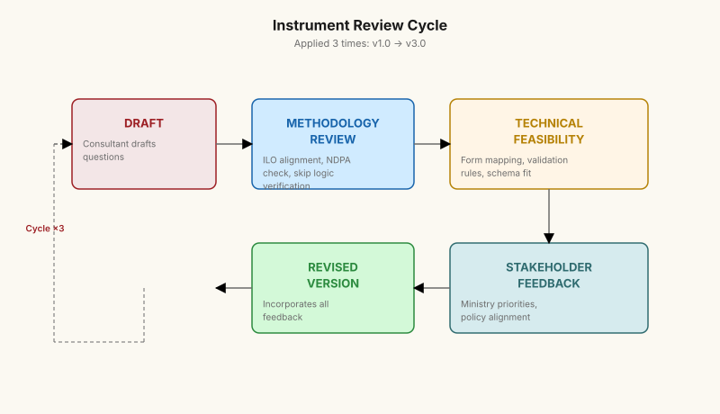
The final instrument (v3.0) comprises six sections containing 36 questions, of which 28 are required and 12 are conditional (displayed based on skip logic).
Table 7.3: Section Overview
| Section | Title | Questions | Required | Conditional | Purpose |
|---|---|---|---|---|---|
| 1 | Introduction & Consent | 2 | 1 | 0 | Informed consent and study introduction |
| 2 | Identity & Demographics | 11 | 10 | 0 | Personal identification and demographic profiling |
| 3 | Labour Force Participation | 9 | 8 | 5 | ILO-aligned employment status classification |
| 4 | Household & Welfare | 4 | 4 | 0 | Household composition and living conditions |
| 5 | Skills & Business | 8 | 3 | 4 | Occupational skills inventory and enterprise data |
| 6 | Public Skills Marketplace | 5 | 1 | 3 | Progressive consent for marketplace participation |
| Total | 39* | 27 | 12 |
* Including display-only informational fields (Q1.1, Q6.0) and auto-calculated fields (Q2.5)
Table 7.4: Estimated Completion Time
| Respondent Profile | Estimated Time | Basis |
|---|---|---|
| Employed, business owner, marketplace opt-in | 10–12 minutes | All sections, all conditional paths active |
| Employed, no business, marketplace opt-out | 7–8 minutes | Sections 5.4–5.8 and 6.2–6.4 skipped |
| Unemployed, job-seeking | 6–7 minutes | Employment details (Q3.5–Q3.9) skipped |
| Outside labour force | 5–6 minutes | Most of Section 3 skipped |
The instrument is designed for a maximum completion time of 12 minutes under the most complex respondent profile, ensuring that field enumerators can achieve the target of 8 submissions per day within a 6-hour operational window (accounting for travel, engagement, and breaks).
Table 7.5: Section 1: Introduction & Consent
| # | Question | Type | Required | Notes |
|---|---|---|---|---|
| 1.1 | Welcome note introducing the OSLSR | Display only | , | Informational text explaining the purpose, duration, and data handling |
| 1.2 | Do you consent to participate? | Yes / No | Yes | Gate question, “No” terminates the survey with a thank-you message |
Design rationale: NDPA 2023 Section 25 requires informed consent before personal data collection. The consent question serves as a legally compliant gate, no data is collected or transmitted until explicit consent is obtained. This satisfies the lawful basis for processing requirement.
Table 7.6: Section 2: Identity & Demographics
| # | Question | Type | Required | Validation |
|---|---|---|---|---|
| 2.1 | Surname | Text | Yes | Non-empty |
| 2.2 | First Name | Text | Yes | Non-empty |
| 2.3 | Gender | Single choice | Yes | Male / Female / Prefer not to say |
| 2.4 | Date of Birth | Date | Yes | Cannot be future date |
| 2.5 | Age | Auto-calculated | , | Derived from DOB; must be ≥15 years |
| 2.6 | Marital Status | Single choice | Yes | 5 options: Single, Married, Divorced, Widowed, Separated |
| 2.7 | Highest Education | Single choice | Yes | 9 levels from No Formal Education to Doctorate |
| 2.8 | Disability status | Yes / No | Yes | Self-declared |
| 2.9 | Phone Number | Text | Yes | Nigerian mobile format: 0[7-9][0-1]xxxxxxxx |
| 2.10 | NIN | Text | Yes | Exactly 11 digits; Modulus 11 checksum validation |
| 2.11 | LGA of residence | Single choice | Yes | 33 Oyo State LGAs |
Design rationale:
NIN as mandatory field: The National Identification Number serves as the primary deduplication key across all submission channels. The Modulus 11 checksum validation catches transcription errors at point of entry, reducing the need for post-collection data cleaning. Global uniqueness enforcement prevents the same individual from being registered multiple times.
Age threshold (≥15 years): Aligned with the ILO ICLS-19 definition of the working-age population. The auto-calculation from Date of Birth eliminates the common field survey problem of respondents misreporting age.
Education levels (9 options): The expanded education classification distinguishes between NCE/OND and HND/BSc, a distinction that is significant in the Nigerian labour market where holders of different credentials occupy distinctly different employment niches.
GPS auto-capture: Device GPS coordinates are captured automatically (not displayed to the respondent), enabling the fraud detection engine to identify geographic clustering anomalies.
This section implements the ILO ICLS-19 labour force classification cascade, a structured decision tree that classifies respondents into mutually exclusive labour force categories.
Figure 7.3: ILO ICLS-19 Classification Cascade
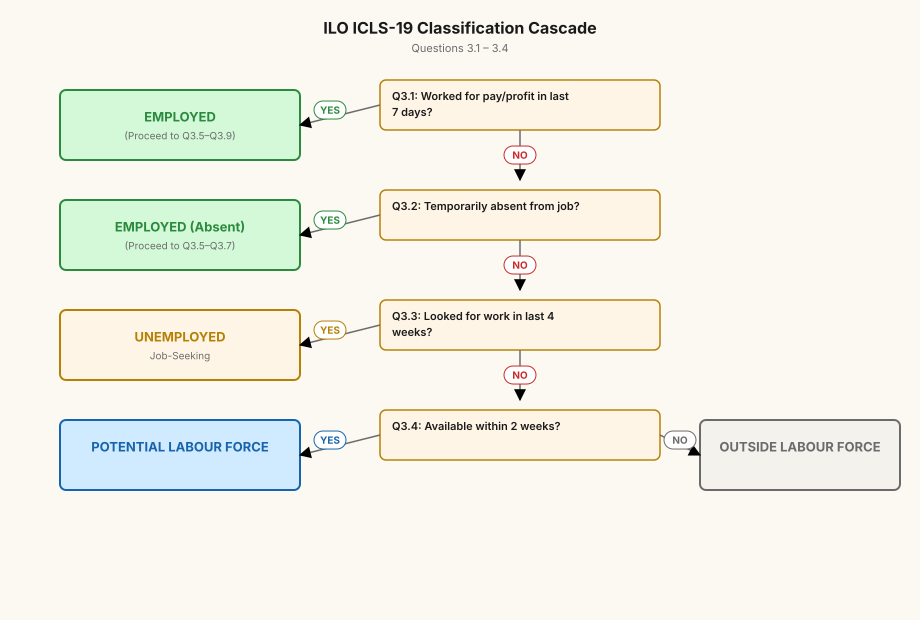
Table 7.7: ILO ICLS-19 Classification Cascade
| # | Question | Type | Required | Show If | Notes |
|---|---|---|---|---|---|
| 3.1 | Worked for pay/profit in last 7 days? | Yes / No | Yes | Always | Primary employment indicator |
| 3.2 | Temporarily absent from a job? | Yes / No | Yes | Q3.1 = No | Captures maternity, sick leave, seasonal pause |
| 3.3 | Looked for work in last 4 weeks? | Yes / No | Yes | Q3.2 = No | Unemployment indicator |
| 3.4 | Available to start within 2 weeks? | Yes / No | Yes | Q3.3 = No | Labour force availability |
| 3.5 | Main Occupation / Job Title | Text | Yes | Q3.1=Yes OR Q3.2=Yes | Free text, validated against taxonomy |
| 3.6 | Type of Employment | Single choice | Yes | Q3.1=Yes OR Q3.2=Yes | 6 options (see below) |
| 3.7 | Years of Experience | Single choice | Yes | Q3.1=Yes OR Q3.2=Yes | 5 ranges from <1 year to >10 years |
| 3.8 | Hours worked last week | Number | Yes | Q3.1 = Yes | Range: 0–168 hours |
| 3.9 | Monthly income estimate (₦) | Number | No | Q3.1 = Yes | Optional; cannot be negative |
Employment Type Classification:
Table 7.8: Section 3: Labour Force Participation
| Code | Label | ILO Alignment |
|---|---|---|
| wage_public | Government/Public Sector Employee | ICSE-18: Employee |
| wage_private | Private Sector Employee | ICSE-18: Employee |
| self_employed | Self-Employed (Artisan/Trader/Business Owner) | ICSE-18: Own-account worker |
| contractor | Contractor/Consultant | ICSE-18: Own-account worker |
| family_unpaid | Unpaid Family Worker | ICSE-18: Contributing family worker |
| apprentice | Apprentice/Intern | ICSE-18: Employee (dependent) |
Design rationale: The six employment type options reflect the structure of the Nigerian labour market, where the distinction between formal wage employment and self-employment is critical for policy analysis. The inclusion of “Apprentice/Intern” captures the significant informal apprenticeship economy that characterises Yoruba-speaking states.
Table 7.9: Section 4: Household & Welfare
| # | Question | Type | Required | Validation |
|---|---|---|---|---|
| 4.1 | Head of household? | Yes / No | Yes | , |
| 4.2 | Total household size | Number | Yes | Minimum: 1 |
| 4.3 | Number of dependents | Number | Yes | Cannot exceed household size (Q4.2) |
| 4.4 | Housing ownership | Single choice | Yes | 5 options: Owned, Rented, Family, Employer-provided, Other |
Design rationale: Household data enables the computation of dependency ratios and housing tenure profiles, key indicators for labour policy planning. The cross-validation rule (dependents ≤ household size) prevents data quality errors at the point of entry.
Table 7.10: Section 5: Skills & Business
| # | Question | Type | Required | Show If | Validation |
|---|---|---|---|---|---|
| 5.1 | Primary skills | Multi-select | Yes | Always | 150 skills across 20 sectors |
| 5.2 | Other skills (free text) | Text | No | Always | Max 200 characters |
| 5.3 | Skills desired to learn | Multi-select | No | Always | Same 150-skill list |
| 5.4 | Own/operate a business? | Yes / No | Yes | Always | , |
| 5.5 | Business name | Text | Yes | Q5.4 = Yes | , |
| 5.6 | CAC registration status | Single choice | Yes | Q5.4 = Yes | Registered / Unregistered / In Progress |
| 5.7 | Business address | Text | Yes | Q5.4 = Yes | , |
| 5.8 | Number of apprentices | Number | No | Q5.4 = Yes | Cannot be negative |
Design rationale:
150-skill taxonomy: The comprehensive skills list (documented in Chapter 8) enables precise matching between worker capabilities and employer needs in the Skills Marketplace. The multi-select format acknowledges that workers in the informal economy typically possess multiple tradeable skills.
“Skills desired to learn” (Q5.3): This forward-looking question captures unmet training demand, critical data for the Ministry’s skills development programme planning.
Business registration data: CAC registration status provides a proxy measure for formalisation of the informal economy, directly relevant to the Ministry’s mandate.
Table 7.11: Section 6: Public Skills Marketplace
| # | Question | Type | Required | Show If | Validation |
|---|---|---|---|---|---|
| 6.0 | Marketplace explanation | Display only | , | Always | Explains anonymous vs enriched profiles |
| 6.1 | Join anonymous marketplace? | Yes / No | Yes | Always | Opt-in for basic profile visibility |
| 6.2 | Allow name/phone visibility? | Yes / No | Yes | Q6.1 = Yes | Second-tier consent for contact details |
| 6.3 | Professional bio | Text | No | Q6.2 = Yes | Max 150 characters |
| 6.4 | Portfolio/social media link | URL | No | Q6.2 = Yes | Optional professional link |
Design rationale: The marketplace section implements a three-tier progressive consent model:
Figure 7.4: Marketplace Privacy-Tier Architecture
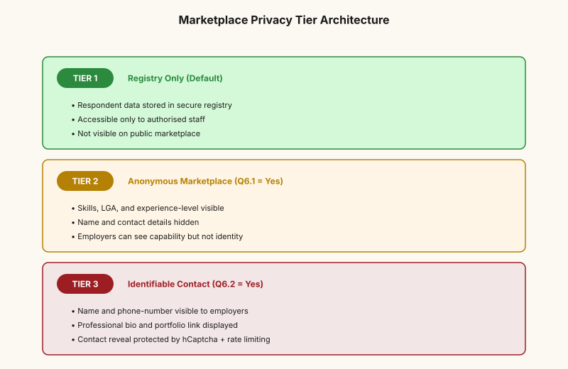
This progressive model ensures that respondents make informed, granular decisions about their data visibility, a core principle of the NDPA 2023 consent framework.
The instrument enforces 10 validation rules at the point of data entry, preventing common data quality issues before submission:
Table 7.12: Validation Rules
| # | Field | Constraint | Error Message | Layer |
|---|---|---|---|---|
| 1 | NIN | Exactly 11 digits, numeric; Modulus 11 checksum | “NIN must be exactly 11 digits” | Frontend + Backend |
| 2 | Phone | Nigerian mobile format: 0[7-9][0-1]xxxxxxxx | “Enter valid Nigerian mobile number” | Frontend + Backend |
| 3 | Age | Calculated from DOB; must be ≥ 15 years | “Respondent must be 15 years or older” | Frontend + Backend |
| 4 | Date of Birth | Cannot be a future date | “Cannot be a future date” | Frontend + Backend |
| 5 | Hours Worked | Integer range 0–168 | “Hours must be between 0 and 168” | Frontend + Backend |
| 6 | Monthly Income | Numeric, ≥ 0 | “Cannot be negative” | Frontend + Backend |
| 7 | Dependents | Integer, ≤ household size (Q4.2) | “Dependents cannot exceed household size” | Frontend + Backend |
| 8 | Household Size | Integer, ≥ 1 | “Must be at least 1” | Frontend + Backend |
| 9 | Professional Bio | ≤ 150 characters | “Bio must be 150 characters or less” | Frontend + Backend |
| 10 | Other Skills | ≤ 200 characters | “Maximum 200 characters” | Frontend + Backend |
Critical design decision: All validation rules are enforced on both frontend and backend using shared Zod schemas, a single source of truth that prevents validation bypass through API manipulation. This dual-enforcement is a direct mitigation for OWASP A03 (Injection) and A04 (Insecure Design).
The instrument employs conditional display logic (skip logic) to minimise respondent burden by showing only relevant questions:
Figure 7.5: Survey Skip-Logic Flow
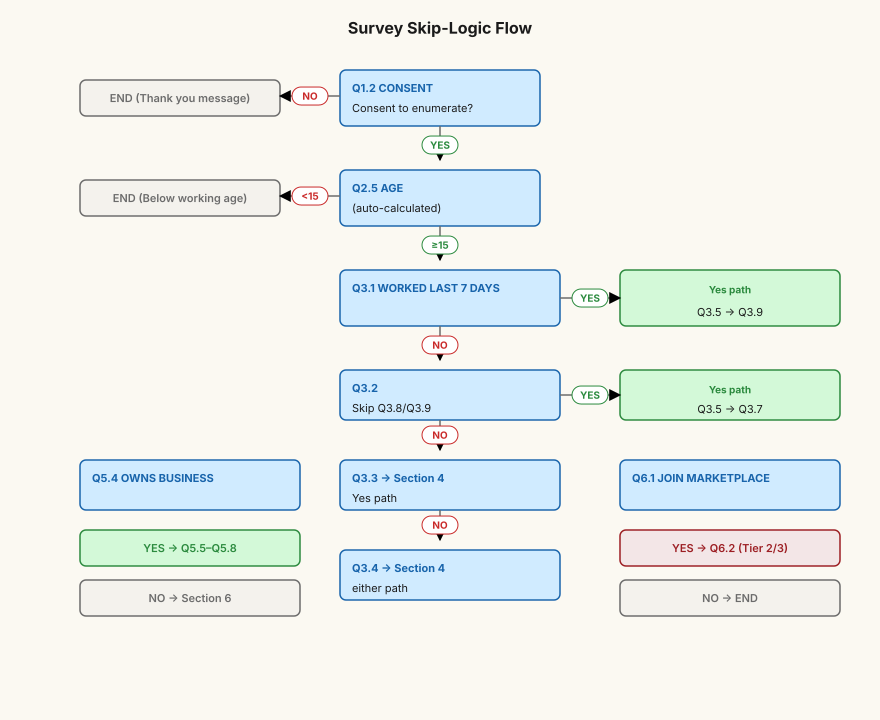
Total possible paths: 12 unique paths through the instrument, ranging from 2 questions (consent declined) to 36 questions (fully employed business owner with marketplace opt-in).
The survey instrument is delivered through three channels, each optimised for its target user context:
Table 7.13: Multi-Channel Delivery
| Channel | Interface | Target User | Key Features |
|---|---|---|---|
| Mobile PWA | One-question-per-screen, swipe navigation, large touch targets | Field Enumerators | Offline capable (7-day); GPS auto-capture; auto-save on every question; Service Worker caching |
| Desktop Web | Keyboard-optimised multi-field layout | Data Entry Clerks | Tab navigation between fields; batch entry workflow; paper form digitisation |
| Public Self-Registration | Responsive web form with hCaptcha | General Public | Bot protection; progressive disclosure; no login required; mobile-responsive |
All three channels feed into a unified ingestion pipeline that applies identical validation rules, fraud detection algorithms, and deduplication checks, ensuring data quality parity regardless of the submission source.
The following table maps the instrument’s labour force questions to the specific ICLS-19 requirements they satisfy:
Table 7.14: ILO ICLS-19 Compliance Verification
| ICLS-19 Requirement | Resolution | Instrument Question |
|---|---|---|
| Working-age population definition | 15 years and above | Q2.4 (DOB) → Q2.5 (auto-calculated age ≥ 15) |
| Employment, short reference period | 7-day recall period | Q3.1: “Worked for pay or profit in the last 7 days?” |
| Employment, temporary absence | Job attachment despite absence | Q3.2: “Temporarily absent from a job?” |
| Unemployment, active search | 4-week job search period | Q3.3: “Looked for work in the last 4 weeks?” |
| Unemployment, availability | 2-week availability criterion | Q3.4: “Available to start work within 2 weeks?” |
| Status in employment (ICSE-18) | 6 employment type categories | Q3.6: Employment type (6 options mapped to ICSE-18) |
| Working time | Weekly hours worked | Q3.8: “Hours worked last week” (0–168) |
| Informal employment proxy | Self-employment + unpaid family work | Q3.6 categories: self_employed, family_unpaid |
The following limitations are acknowledged for transparency:
Income data is self-reported and optional: Monthly income (Q3.9) is not required, and where provided, is subject to recall bias and potential underreporting, a well-documented phenomenon in labour force surveys in developing economies.
Single time-point measurement: The instrument captures a snapshot of labour force status at the time of interview. Seasonal employment patterns (particularly in agriculture-dependent LGAs) are not captured by a single-round survey.
Skills self-assessment: Skill proficiency is self-declared, not independently verified. The registry records claimed skills, not assessed competencies.
Proxy responses not explicitly captured: Where an enumerator records a household member’s data via a proxy respondent (e.g., a spouse), the instrument does not explicitly flag the response as proxy.
These limitations are standard for large-scale labour force registration exercises and are consistent with the methodological constraints documented in Chapter 6.
Document Reference: CHM/OSLR/2026/002 | Chapter 7 | Chemiroy Nigeria Limited
Figure 8.1: Occupational Skills Taxonomy, Sector Distribution
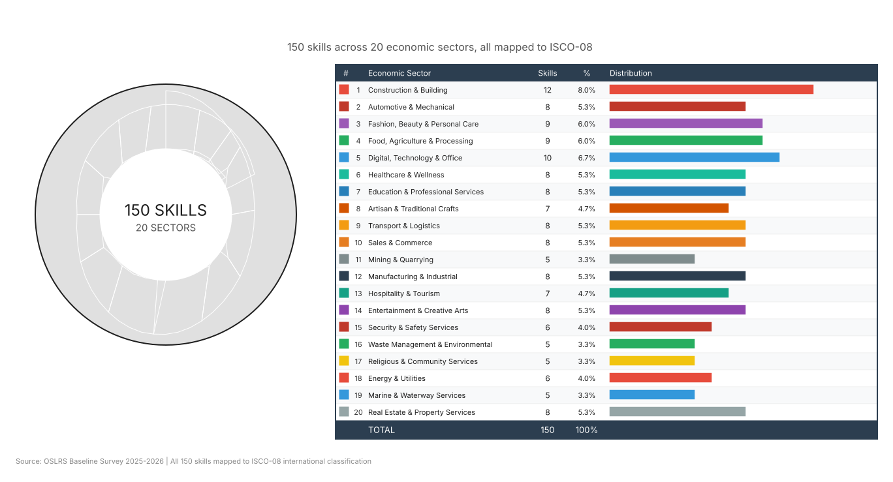
This chapter documents the 150-skill occupational taxonomy developed for the Oyo State Skilled Labour Register, a structured classification of tradeable skills organised across 20 economic sectors and mapped to the International Standard Classification of Occupations (ISCO-08). The taxonomy serves as the core skills inventory for both the survey instrument (Question 5.1) and the public Skills Marketplace search functionality.
The taxonomy was designed according to five governing principles:
Table 8.1: Design Principles
| # | Principle | Rationale |
|---|---|---|
| 1 | Comprehensive coverage | Must capture the full breadth of economic activities in Oyo State, from subsistence farming to emerging digital services |
| 2 | Local relevance | Skills must be recognisable and meaningful to respondents in Yoruba-speaking Southwest Nigeria, including informal economy terminology |
| 3 | ISCO-08 compatibility | Mapping to international standards enables comparison with national (NBS) and international (ILO) labour statistics |
| 4 | Manageable enumeration | 150 skills is a balance between comprehensiveness and field usability, enumerators can navigate the full list within 2–3 minutes |
| 5 | Multi-select capability | Workers in the informal economy typically possess multiple tradeable skills; the taxonomy supports multi-selection |
The taxonomy was developed through an iterative process:
Figure 8.2: Occupational Taxonomy Development Process
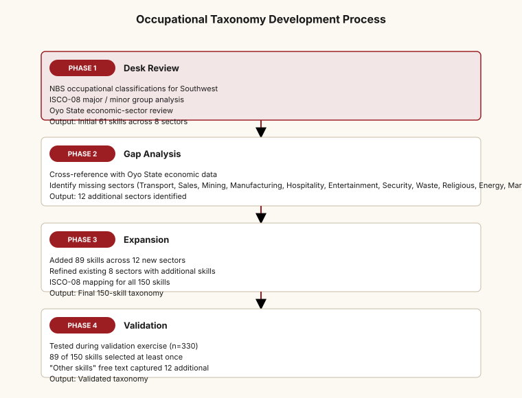
Table 8.2: Sector 1: Construction & Building Trades (12 skills)
| # | Skill | ISCO-08 Code | Description |
|---|---|---|---|
| 1 | Carpentry/Woodwork | 7115 | Wood construction, joinery, framework building |
| 2 | Plumbing | 7126 | Pipe fitting, water systems installation and repair |
| 3 | Electrical Installation | 7411 | Building wiring, power distribution, panel installation |
| 4 | Welding & Fabrication | 7212 | Metal joining, gate/grille fabrication, structural welding |
| 5 | Masonry/Bricklaying | 7112 | Block laying, concrete work, stone masonry |
| 6 | Painting & Decoration | 7131 | Building painting, interior/exterior finishing, wallpapering |
| 7 | Tiling & Flooring | 7122 | Ceramic/porcelain tile installation, terrazzo, POP screeding |
| 8 | Roofing | 7121 | Roof sheet installation, truss construction, waterproofing |
| 9 | HVAC/Air Conditioning | 7127 | Air conditioning installation, refrigeration repair, ventilation |
| 10 | Solar Installation | 7413 | Solar panel mounting, inverter wiring, battery systems |
| 11 | Aluminum & Glass Fitting | 7125 | Aluminum windows/doors, glass cutting, curtain wall installation |
| 12 | POP/Plaster of Paris Work | 7123 | Ceiling design, cornice installation, interior moulding |
Table 8.3: Sector 2: Automotive & Mechanical (8 skills)
| # | Skill | ISCO-08 Code | Description |
|---|---|---|---|
| 13 | Auto Mechanic | 7231 | Petrol/diesel engine diagnosis and repair |
| 14 | Auto Electrician | 7412 | Vehicle electrical systems, wiring, diagnostics |
| 15 | Panel Beating & Spray Painting | 7213 | Body repair, dent removal, automotive spray finishing |
| 16 | Vulcanizing/Tire Services | 7233 | Tire repair, balancing, alignment services |
| 17 | Motorcycle/Tricycle Repair | 7234 | Okada/Keke mechanic services |
| 18 | Heavy Equipment Operation | 8342 | Excavator, crane, bulldozer operation |
| 19 | Generator Repair | 7421 | Petrol/diesel generator maintenance and repair |
| 20 | Battery/Inverter Technician | 7422 | Battery reconditioning, inverter installation and repair |
Table 8.4: Sector 3: Fashion, Beauty & Personal Care (9 skills)
| # | Skill | ISCO-08 Code | Description |
|---|---|---|---|
| 21 | Tailoring/Sewing | 7531 | Custom garment making, alterations, traditional wear |
| 22 | Fashion Design | 7531 | Fashion conceptualisation, pattern making, haute couture |
| 23 | Hairdressing/Styling | 5141 | Hair cutting, styling, braiding, weaving, extensions |
| 24 | Barbing | 5141 | Men’s hair cutting, beard grooming, shaving |
| 25 | Makeup Artistry | 5142 | Cosmetic application, bridal makeup, special effects |
| 26 | Shoe Making/Cobbling | 7536 | Footwear manufacturing, shoe repair, custom shoes |
| 27 | Bag Making/Leather Craft | 7535 | Leather goods, handbag production, belt making |
| 28 | Jewelry Making | 7313 | Gold/silver smithing, bead work, costume jewelry |
| 29 | Nail Technology | 5142 | Manicure, pedicure, nail art, gel/acrylic application |
Table 8.5: Sector 4: Food, Agriculture & Processing (9 skills)
| # | Skill | ISCO-08 Code | Description |
|---|---|---|---|
| 30 | Crop Farming | 6111 | Cultivation of food/cash crops (cassava, maize, yam, cocoa) |
| 31 | Livestock/Poultry Farming | 6121 | Animal husbandry, poultry management, dairy farming |
| 32 | Fishery/Aquaculture | 6221 | Fish farming, pond management, fish harvesting |
| 33 | Catering/Event Cooking | 5120 | Large-scale cooking, event catering, food service |
| 34 | Baking & Confectionery | 7512 | Bread/cake baking, pastry making, confections |
| 35 | Food Processing/Preservation | 7514 | Garri processing, palm oil extraction, food preservation |
| 36 | Butchery/Meat Processing | 7511 | Meat cutting, processing, suya/kilishi preparation |
| 37 | Agro-Processing Equipment Operation | 8160 | Cassava grater, palm oil press, milling machine operation |
| 38 | Horticulture/Floriculture | 6113 | Garden design, flower cultivation, landscaping |
Table 8.6: Sector 5: Digital, Technology & Office (10 skills)
| # | Skill | ISCO-08 Code | Description |
|---|---|---|---|
| 39 | Software Development | 2512 | Application programming, mobile apps, web applications |
| 40 | Web Design/Development | 2513 | Website creation, UI/UX design, frontend/backend development |
| 41 | Graphic Design | 2166 | Visual design, branding, print/digital media design |
| 42 | Video Editing/Production | 2642 | Video shooting, editing, post-production, content creation |
| 43 | Data Entry/Typing | 4132 | Data capture, typing, digitisation of records |
| 44 | Accounting/Bookkeeping | 3313 | Financial records, tax computation, business accounting |
| 45 | Office Administration | 4110 | Office management, filing, correspondence, scheduling |
| 46 | Computer/Phone Repair | 7422 | Hardware diagnosis, screen replacement, component repair |
| 47 | Social Media Management | 2431 | Online marketing, content scheduling, digital advertising |
| 48 | Digital Marketing/SEO | 2431 | Search optimisation, online campaigns, analytics |
Table 8.7: Sector 6: Healthcare & Wellness (8 skills)
| # | Skill | ISCO-08 Code | Description |
|---|---|---|---|
| 49 | Nursing/Patient Care | 3221 | Clinical nursing, patient monitoring, bedside care |
| 50 | Pharmacy Assistant | 3213 | Drug dispensing assistance, inventory management |
| 51 | Laboratory Technician | 3212 | Sample collection, basic testing, equipment operation |
| 52 | Community Health Worker | 3253 | Community health education, basic health services |
| 53 | Elderly/Child Caregiving | 5311 | Home care, nanny services, elderly companion care |
| 54 | Physiotherapy Assistant | 3255 | Rehabilitation exercises, massage therapy, patient support |
| 55 | Traditional Medicine/Herbalism | 3230 | Herbal preparation, traditional healing practices |
| 56 | Dental Assistant | 3251 | Dental clinic assistance, sterilisation, patient preparation |
Table 8.8: Sector 7: Education & Professional Services (8 skills)
| # | Skill | ISCO-08 Code | Description |
|---|---|---|---|
| 57 | Teaching/Tutoring | 2330 | Classroom teaching, private tutoring, lesson facilitation |
| 58 | Professional Driving | 8322 | Commercial vehicle driving (taxi, bus, logistics) |
| 59 | Event Planning/Decoration | 3332 | Event coordination, venue decoration, wedding planning |
| 60 | Photography/Videography | 3431 | Professional photography, event coverage, studio work |
| 61 | Professional Cleaning | 9112 | Commercial/residential cleaning, janitorial services |
| 62 | Laundry/Dry Cleaning | 9121 | Fabric washing, dry cleaning, ironing services |
| 63 | Translation/Interpretation | 2643 | Yoruba-English translation, document translation |
| 64 | Legal Clerk/Paralegal | 3411 | Legal document preparation, court filing, research |
Table 8.9: Sector 8: Artisan & Traditional Crafts (7 skills)
| # | Skill | ISCO-08 Code | Description |
|---|---|---|---|
| 65 | Furniture Making | 7522 | Wooden/metal furniture construction, custom cabinetry |
| 66 | Upholstery | 7534 | Sofa/chair padding, fabric covering, furniture restoration |
| 67 | Pottery/Ceramics | 7314 | Clay pot making, ceramic production, decorative pottery |
| 68 | Blacksmithing | 7221 | Iron/steel forging, tool making, metalwork |
| 69 | Weaving/Textile Crafts | 7318 | Aso-oke weaving, adire textile, hand loom operation |
| 70 | Sign Writing/Branding | 7316 | Hand-painted signs, vehicle branding, banner making |
| 71 | Calabash/Gourd Carving | 7317 | Decorative gourd carving, traditional craft production |
Table 8.10: Sector 9: Transport & Logistics (8 skills)
| # | Skill | ISCO-08 Code | Description |
|---|---|---|---|
| 72 | Commercial Bus/Taxi Driving | 8322 | Danfo/BRT/taxi operation within and between cities |
| 73 | Motorcycle Taxi (Okada) Riding | 8321 | Commercial motorcycle transport services |
| 74 | Tricycle (Keke) Operation | 8321 | Keke NAPEP/tricycle passenger/cargo transport |
| 75 | Truck/Haulage Driving | 8332 | Long-distance cargo transport, haulage services |
| 76 | Dispatch Riding/Courier | 4412 | Package delivery, document courier, express dispatch |
| 77 | Warehouse Management | 4321 | Inventory control, goods storage, dispatch coordination |
| 78 | Freight/Logistics Coordination | 3331 | Cargo booking, shipment tracking, supply chain coordination |
| 79 | Forklift Operation | 8344 | Warehouse forklift operation, pallet movement |
Table 8.11: Sector 10: Sales & Commerce (8 skills)
| # | Skill | ISCO-08 Code | Description |
|---|---|---|---|
| 80 | Trading/General Commerce | 5221 | Market trading, wholesale/retail, goods distribution |
| 81 | Agrochemical Sales | 5223 | Fertilizer, pesticide, herbicide retail and advisory |
| 82 | Pharmaceutical/Medical Sales | 5223 | OTC drug sales, medical supplies, pharmaceutical retail |
| 83 | Building Materials Sales | 5223 | Cement, roofing, plumbing supplies retail |
| 84 | Electronics/Phone Sales | 5223 | Consumer electronics, mobile phone, accessories retail |
| 85 | Provisions/FMCG Distribution | 5221 | Fast-moving consumer goods distribution and retail |
| 86 | Fuel/Gas Retailing | 5245 | Petrol station operation, cooking gas retail |
| 87 | Auto Parts Sales | 5223 | Vehicle spare parts retail and distribution |
Table 8.12: Sector 11: Mining & Quarrying (5 skills)
| # | Skill | ISCO-08 Code | Description |
|---|---|---|---|
| 88 | Quarrying/Stone Cutting | 8111 | Granite/laterite quarrying, stone crushing |
| 89 | Sand Mining/Dredging | 8113 | River sand extraction, dredging operations |
| 90 | Gold/Mineral Artisan Mining | 8114 | Small-scale mineral extraction, panning |
| 91 | Clay/Kaolin Extraction | 8113 | Clay mining for pottery, brick making, industrial use |
| 92 | Gravel/Aggregate Processing | 8112 | Gravel sorting, aggregate preparation for construction |
Table 8.13: Sector 12: Manufacturing & Industrial (8 skills)
| # | Skill | ISCO-08 Code | Description |
|---|---|---|---|
| 93 | Soap/Detergent Making | 8131 | Local soap production, liquid detergent manufacturing |
| 94 | Sachet/Bottled Water Production | 8160 | Pure water sachet packaging, bottled water processing |
| 95 | Block/Brick Making | 8114 | Concrete block moulding, laterite brick production |
| 96 | Paint Manufacturing | 8131 | Local paint production, colour mixing |
| 97 | Plastic/Rubber Recycling | 8142 | Plastic recycling, rubber reclamation, pellet production |
| 98 | Textile/Garment Factory Work | 8153 | Industrial sewing, garment assembly, textile machine operation |
| 99 | Metal Fabrication/Foundry | 7211 | Industrial metal casting, foundry operation |
| 100 | Paper/Printing Production | 8143 | Print press operation, binding, paper product manufacturing |
Table 8.14: Sector 13: Hospitality & Tourism (7 skills)
| # | Skill | ISCO-08 Code | Description |
|---|---|---|---|
| 101 | Hotel/Guest House Management | 1411 | Lodging facility operation, front desk management |
| 102 | Restaurant/Bar Management | 1412 | Food service establishment operation |
| 103 | Bartending/Mixology | 5132 | Beverage preparation, cocktail mixing, bar service |
| 104 | Tour Guide Services | 5113 | Cultural/historical tour facilitation, heritage interpretation |
| 105 | Event Centre Management | 1439 | Event venue operation, booking coordination |
| 106 | Short-Let/Apartment Hosting | 1411 | Vacation rental management, Airbnb-style hosting |
| 107 | Chef/Professional Cooking | 3434 | Restaurant cooking, menu development, kitchen management |
Table 8.15: Sector 14: Entertainment & Creative Arts (8 skills)
| # | Skill | ISCO-08 Code | Description |
|---|---|---|---|
| 108 | Music Production/DJ | 2652 | Beat making, sound mixing, DJ services |
| 109 | Acting/Theatre Performance | 2655 | Stage/screen acting, Nollywood, theatrical performance |
| 110 | Comedy/MC/Entertainment | 2655 | Event hosting, stand-up comedy, entertainment services |
| 111 | Dance/Choreography | 2653 | Dance performance, choreography, dance instruction |
| 112 | Sound Engineering | 3521 | Audio recording, mixing, live sound reinforcement |
| 113 | Musical Instrument Playing | 2652 | Live performance, session musician, music instruction |
| 114 | Fine Art/Painting | 2651 | Canvas painting, murals, artistic illustration |
| 115 | Animation/Motion Graphics | 2166 | Digital animation, motion graphics, visual effects |
Table 8.16: Sector 15: Security & Safety Services (6 skills)
| # | Skill | ISCO-08 Code | Description |
|---|---|---|---|
| 116 | Private Security Guard | 5414 | Premises security, access control, patrol services |
| 117 | CCTV/Surveillance Installation | 7421 | Camera installation, monitoring system setup, maintenance |
| 118 | Fire Safety/Extinguisher Services | 5411 | Fire safety equipment, extinguisher servicing, fire marshal |
| 119 | Locksmith Services | 7222 | Lock installation/repair, key cutting, safe opening |
| 120 | Dog Training/K9 Handler | 5164 | Guard dog training, canine security services |
| 121 | Traffic/Crowd Management | 5414 | Event crowd control, traffic direction, safety marshalling |
Table 8.17: Sector 16: Waste Management & Environmental Services (5 skills)
| # | Skill | ISCO-08 Code | Description |
|---|---|---|---|
| 122 | Waste Collection/Disposal | 9611 | Residential/commercial waste collection, landfill operations |
| 123 | Recycling/Scrap Dealing | 9612 | Material sorting, scrap metal trade, recyclable collection |
| 124 | Fumigation/Pest Control | 7544 | Insect/rodent control, building fumigation services |
| 125 | Sewage/Drainage Services | 7126 | Septic tank emptying, drainage cleaning, soak-away construction |
| 126 | Environmental Remediation | 3257 | Pollution cleanup, erosion control, environmental restoration |
Table 8.18: Sector 17: Religious & Community Services (5 skills)
| # | Skill | ISCO-08 Code | Description |
|---|---|---|---|
| 127 | Religious Leadership/Clergy | 2636 | Imam, Pastor, traditional religious leadership |
| 128 | Quranic/Islamic Teaching | 2342 | Arabic instruction, Quranic recitation teaching |
| 129 | Church Music/Choir Direction | 2652 | Worship music leadership, choir training and direction |
| 130 | Community Development Work | 3412 | NGO field work, community mobilisation, social services |
| 131 | Counselling Services | 2634 | Personal/family counselling, conflict resolution |
Table 8.19: Sector 18: Energy & Utilities (6 skills)
| # | Skill | ISCO-08 Code | Description |
|---|---|---|---|
| 132 | Borehole Drilling | 8113 | Water well drilling, pump installation |
| 133 | Water Treatment/Purification | 3132 | Water purification, treatment plant operation |
| 134 | Electrical Power Line Work | 7413 | Power line installation, electrical pole maintenance |
| 135 | Gas Pipeline Fitting | 7126 | Cooking gas pipe installation, LPG system fitting |
| 136 | Diesel/Petrol Engine Servicing | 7233 | Industrial engine maintenance, fuel system servicing |
| 137 | Renewable Energy Technician | 7413 | Wind/solar/biogas system installation and maintenance |
Table 8.20: Sector 19: Marine & Waterway Services (5 skills)
| # | Skill | ISCO-08 Code | Description |
|---|---|---|---|
| 138 | Boat Building/Repair | 7521 | Wooden/fiberglass boat construction and repair |
| 139 | Fishing (River/Lake) | 6222 | Inland waterway fishing, net fishing, trap fishing |
| 140 | Canoe/Boat Operation | 8350 | Passenger/cargo river transport, ferry operation |
| 141 | Fish Smoking/Drying | 7514 | Fish preservation, smoking kiln operation |
| 142 | Pond/Dam Construction | 7114 | Aquaculture pond construction, dam building |
Table 8.21: Sector 20: Real Estate & Property Services (8 skills)
| # | Skill | ISCO-08 Code | Description |
|---|---|---|---|
| 143 | Property/Estate Agency | 3334 | Property sales/rental, client-landlord intermediation |
| 144 | Land Surveying | 2165 | Land measurement, boundary demarcation, survey mapping |
| 145 | Building/Quantity Surveying | 2142 | Construction cost estimation, material quantification |
| 146 | Architecture/Draughtsmanship | 2161 | Building plan drawing, architectural design assistance |
| 147 | Interior Design/Decoration | 3432 | Interior space planning, furnishing, aesthetic design |
| 148 | Facility Management | 1219 | Building maintenance coordination, property upkeep |
| 149 | Swimming Pool Construction/Maintenance | 7119 | Pool excavation, tiling, water treatment, maintenance |
| 150 | Pest-Proof Storage Construction | 7119 | Grain/produce storage facility construction |
Table 8.22: Summary Statistics
| Metric | Value |
|---|---|
| Total skills | 150 |
| Total sectors | 20 |
| ISCO-08 major groups covered | 8 of 10 (Groups 1–9, excluding Group 0: Armed Forces) |
| Mean skills per sector | 7.5 |
| Largest sector | Construction & Building Trades (12 skills) |
| Smallest sectors | Mining (5), Waste Management (5), Religious Services (5), Marine (5) |
Figure 8.3: Skills Per Sector
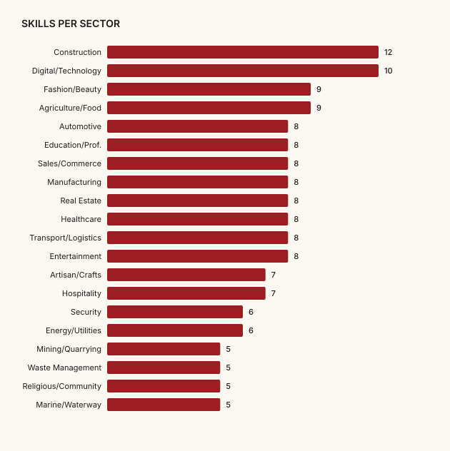
The taxonomy maps to the following ISCO-08 major groups:
Table 8.23: ISCO-08 Mapping Summary
| ISCO-08 Major Group | Skills Mapped | % of Taxonomy |
|---|---|---|
| 7: Craft and Related Trades Workers | 52 | 34.7% |
| 5: Service and Sales Workers | 24 | 16.0% |
| 8: Plant and Machine Operators, Assemblers | 18 | 12.0% |
| 2: Professionals | 17 | 11.3% |
| 3: Technicians and Associate Professionals | 16 | 10.7% |
| 6: Skilled Agricultural, Forestry and Fishery Workers | 8 | 5.3% |
| 9: Elementary Occupations | 7 | 4.7% |
| 1: Managers | 4 | 2.7% |
| 4: Clerical Support Workers | 4 | 2.7% |
| Total | 150 | 100% |
Observation: The concentration in ISCO Group 7 (Craft and Related Trades Workers) at 34.7% reflects the artisan-heavy economic structure of Oyo State, where craft trades constitute the backbone of the informal economy. The distribution across all nine civilian ISCO major groups confirms comprehensive coverage of the labour market.
During the validation exercise (n=330, Chapter 12), the taxonomy was tested in field conditions:
Table 8.24: Validation Exercise Results
| Metric | Result |
|---|---|
| Skills utilised (at least 1 selection) | 89 of 150 (59.3%) |
| Skills with “Other” free text additions | 12 unique free-text skills identified |
| Mean selection time per respondent | 48 seconds |
| Respondents selecting “Other skills” (Q5.2) | 31 of 330 (9.4%) |
| Enumerator navigation difficulty reported | 0 (sector-grouped display effective) |
The 59.3% utilisation rate from a 330-person validation sample is expected to approach 90%+ during the full-scale enumeration (23,760+ registrants), as the broader population will exhibit greater skills diversity.
The 12 free-text “Other” skills identified during validation have been evaluated for potential inclusion in future taxonomy updates.
The 150-skill occupational taxonomy provides the OSLSR with a granular, internationally-compatible skills classification that captures the full breadth of Oyo State’s formal and informal economy. The taxonomy’s ISCO-08 mapping ensures that OSLSR data can be compared with national (NBS) and international (ILO) labour statistics, while its local relevance and sector-grouped presentation ensure field usability.
The complete taxonomy is reproduced in Appendix C for reference.
Document Reference: CHM/OSLR/2026/002 | Chapter 8 | Chemiroy Nigeria Limited
Figure 9.1: Hybrid Data Centre Architecture
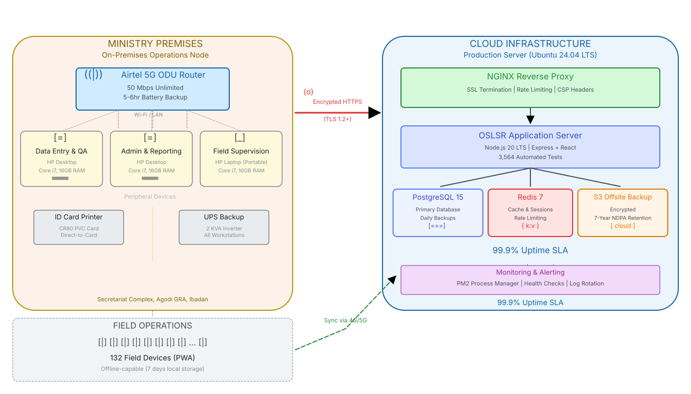
Deliverable 1 of the engagement Terms of Reference requires the Establishment of a Data Centre for the Oyo State Skilled Labour Register. This chapter documents the design rationale, procurement, configuration, and operational status of the Data Centre infrastructure, which employs a hybrid architecture combining on-premises computing resources with cloud-hosted production services.
The Data Centre was established at the premises of the Ministry of Trade, Industry, Investment and Cooperatives, ensuring physical proximity to the commissioning authority, facilitating Ministry oversight, and establishing data sovereignty within a government-controlled environment.
Deliverable Status: COMPLETE ✓
The Data Centre adopts a hybrid architecture, combining on-premises physical infrastructure with cloud-hosted services, to address the dual requirements of operational resilience and cost efficiency. This design was selected based on the following considerations:
Table 9.1: Hybrid Architecture Decision
| Factor | On-Premises Only | Cloud Only | Hybrid (Selected) |
|---|---|---|---|
| Data sovereignty (government premises) | ✓ | ✗ | ✓ |
| Power continuity (5G ODU backup) | ✓ | N/A | ✓ |
| 24/7 application availability | ✗ | ✓ | ✓ |
| Disaster recovery | ✗ | ✓ | ✓ |
| Capital expenditure | High | Low | Moderate |
| Operational expenditure | Low | Moderate | Moderate |
| Scalability | Limited | High | High |
| Physical access for training | ✓ | ✗ | ✓ |
The hybrid model ensures that:
The on-premises node comprises three (3) enterprise-grade HP workstations, procured and configured for specific operational functions:
Table 9.2: Hardware Specifications
| Unit | Type | Specifications | Assigned Function |
|---|---|---|---|
| Workstation 1 | HP Desktop | Intel Core i7 Processor, 16 GB RAM, 512 GB HDD, Full HD Display | Data Entry & Quality Assurance Terminal, Primary data entry station for Data Entry Clerks; quality assurance review of flagged submissions |
| Workstation 2 | HP Desktop | Intel Core i7 Processor, 16 GB RAM, 512 GB HDD, Full HD Display | Administrative Operations & Reporting Terminal, System administration, report generation, supervisory monitoring, and dashboard analytics |
| Workstation 3 | HP Laptop | Intel Core i7 Processor, 16 GB RAM, 512 GB HDD, Integrated Display | Field Supervision & Mobile Operations Unit, Portable unit for field visits, on-site training delivery, demonstration sessions, and mobile supervisory functions |
All workstations are configured with:
The Data Centre is located within the secured premises of the Ministry of Trade, Industry, Investment and Cooperatives, benefiting from:
Network connectivity is provided via the Airtel SmartConnect 5G Outdoor Unit (ODU) Router, a next-generation broadband solution specifically designed for Nigerian operating environments.
Table 9.3: Broadband Connectivity
| Specification | Detail |
|---|---|
| Device | Airtel SmartConnect 5G ODU Router |
| Network | 5G (primary) with automatic 4G LTE fallback |
| Data Plan | Unlimited monthly data at speeds up to 50 Mbps |
| Monthly Subscription | ₦25,000 |
| Mounting | Outdoor-mounted for optimised signal reception |
| Device Connections | Up to 64 simultaneous devices |
| Power Backup | Built-in battery providing 5–6 hours of operation during power outages |
| Parental/Usage Controls | Configurable access and browsing controls |
Figure 9.2: Network Architecture, On-Premises ↔ Cloud
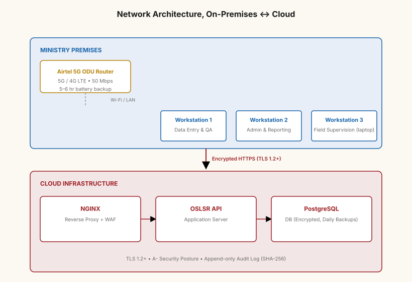
The network infrastructure incorporates the following resilience measures:
5G/4G Automatic Fallback: The Airtel ODU automatically switches between 5G and 4G LTE networks based on signal availability, ensuring continuous connectivity even in areas where 5G coverage is intermittent
Built-in Power Backup: The ODU’s integrated battery provides 5–6 hours of operation during power outages, a critical provision given the power supply challenges typical of Nigerian government facilities
Offline-Capable Applications: The OSLSR platform’s Progressive Web Application (PWA) architecture enables field data collection to continue for up to 7 days without network connectivity, with automatic synchronisation upon restoration
Cloud Infrastructure Redundancy: The production server operates on enterprise infrastructure with built-in redundancy, automated failover, and continuous monitoring
Table 9.4: Production Server Specifications
| Component | Specification |
|---|---|
| Operating System | Ubuntu 24.04 LTS (Long-Term Support) |
| Application Runtime | Node.js 20 LTS |
| Web Server / Reverse Proxy | NGINX (SSL termination, rate limiting, static asset serving) |
| Database | PostgreSQL 15 (encrypted at rest, daily automated backups) |
| Cache / Rate Limiting | Redis 7 (with AOF persistence) |
| Job Queue | BullMQ (fraud detection, backup orchestration, email delivery) |
| SSL Certificate | TLS 1.2+ (HTTPS enforced on all endpoints) |
| Domain | Configured and operational |
Table 9.5: Backup & Disaster Recovery
| Parameter | Configuration |
|---|---|
| Backup Frequency | Daily automated backups (2:00 AM WAT) |
| Backup Method | PostgreSQL pg_dump (full database export) |
| Offsite Storage | S3-compatible encrypted storage |
| Retention Policy | 7-day daily retention + 7-year monthly archives (NDPA compliance) |
| Restore Capability | Documented restore procedure; tested and validated |
| Recovery Time Objective (RTO) | < 1 hour from latest backup |
| Recovery Point Objective (RPO) | Maximum 24 hours (daily backup interval) |
The cloud infrastructure is monitored through the OSLSR System Health Monitoring module (detailed in Chapter 10), which tracks:
The hybrid Data Centre architecture delivers significant cost efficiency compared to traditional government IT procurement models:
Table 9.6: Cost Efficiency
| Cost Component | Description | Frequency |
|---|---|---|
| Hardware (one-time) | 3× HP Core i7 workstations | Capital |
| Network device (one-time) | Airtel 5G ODU Router | Capital |
| Broadband subscription | Unlimited 50 Mbps data plan | ₦25,000/month |
| Cloud hosting | Production server with backup storage | Monthly |
| Total Monthly Operating Cost | Broadband + Cloud hosting | Recurring |
The operating cost model ensures sustainability beyond the initial engagement period. The Ministry can continue operating the Data Centre and platform with minimal recurring expenditure, broadband connectivity and cloud hosting, without requiring additional capital investment.
Table 9.7: Deliverable Acceptance Criteria
| # | Criterion | Status |
|---|---|---|
| 1 | Physical hardware procured and installed at Ministry premises | ✓ Complete |
| 2 | Network connectivity operational with adequate bandwidth | ✓ Complete |
| 3 | Cloud infrastructure deployed and accessible from on-premises terminals | ✓ Complete |
| 4 | OSLSR platform accessible from all three workstations | ✓ Complete |
| 5 | Automated backup system operational with offsite storage | ✓ Complete |
| 6 | System monitoring and alerting configured | ✓ Complete |
| 7 | Data Centre operational and ready for production use | ✓ Complete |
Deliverable 1, Establishment of Data Centre: COMPLETE ✓
Document Reference: CHM/OSLR/2026/002 | Chapter 9 | Chemiroy Nigeria Limited
Figure 10.1: OSLSR Platform, System Architecture Overview
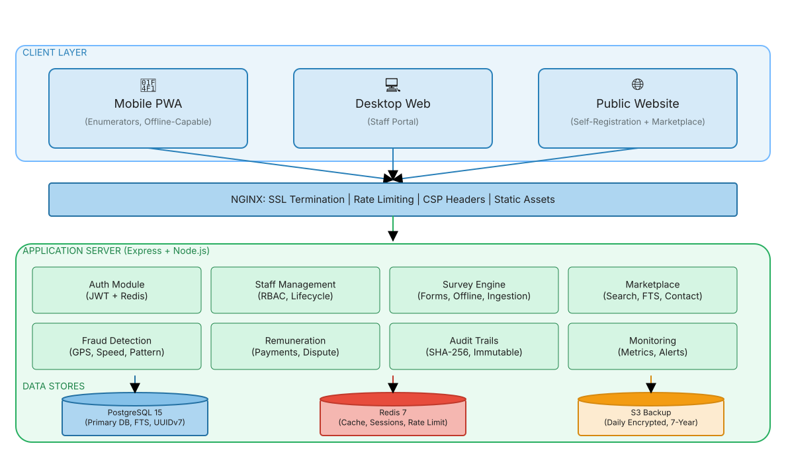
Figure 10.2: OSLSR User Role Hierarchy (Five Operational Roles + Public Tier)
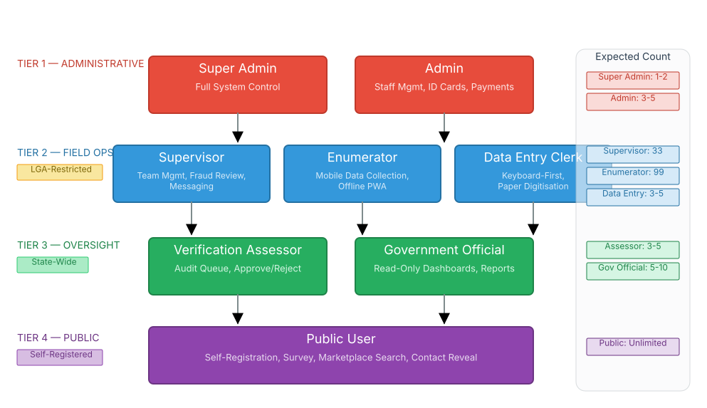
This chapter documents the design, development, and deployment of the Oyo State Labour & Skills Registry (OSLSR) digital platform, the core technology infrastructure upon which the State Labour Register operates. The platform was purpose-built to address the specific requirements of workforce enumeration in a developing economy context, incorporating offline-capable mobile data collection, multi-channel registration, automated fraud detection, and a public-facing skills marketplace.
The platform is operational and deployed, accessible to authorised users from the on-premises Data Centre workstations and via any internet-connected device.
The OSLSR platform employs a modular monolith architecture, a proven design pattern that combines the simplicity of a single deployable unit with the maintainability of modular internal boundaries. This architecture was selected over microservices based on the project’s scale requirements (200+ concurrent staff users, 1,000 concurrent public users) and the operational simplicity demanded by a single-VPS deployment.
Figure 10.3: OSLSR Platform, Layered Architecture
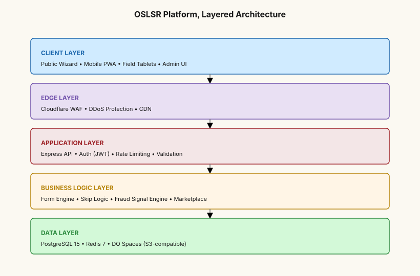
Table 10.1: OSLSR Platform, Layered Architecture
| Layer | Technology | Version | Purpose |
|---|---|---|---|
| Frontend | React | 18.3 | User interface framework |
| Vite | 6.x | Build tooling with hot module replacement | |
| Tailwind CSS | v4 | Utility-first styling framework | |
| shadcn/ui | Latest | Accessible component library (Radix UI) | |
| TanStack Query | Latest | Server state management and caching | |
| React Hook Form + Zod | Latest | Form handling with runtime validation | |
| React Router | v7 | Client-side routing with role isolation | |
| Backend | Node.js | 20 LTS | Server runtime |
| Express.js | Latest | REST API framework | |
| Drizzle ORM | 1.x | TypeScript-first database ORM | |
| Pino | 9.x | Structured JSON logging | |
| Database | PostgreSQL | 15 | Relational database with JSONB and PostGIS |
| Cache/Queue | Redis | 7 | Caching, rate limiting, session management |
| BullMQ | Latest | Asynchronous job queue processing | |
| Security | Helmet | Latest | Security headers including CSP |
| bcrypt | 6.x | Password hashing (12 salt rounds) | |
| JWT | Latest | Stateless authentication tokens | |
| Validation | Zod | 3.x | Runtime type validation (shared frontend/backend) |
| Identity | uuidv7 | Latest | Time-ordered universally unique identifiers |
The following table summarises the platform’s operational capabilities:
Table 10.2: Platform Capabilities
| # | Capability | Description | Status |
|---|---|---|---|
| 1 | Multi-Channel Data Collection | Field enumeration (mobile PWA), desktop data entry, and public web self-registration, three distinct channels feeding a unified registry | ✓ Operational |
| 2 | Offline-Capable PWA | Progressive Web Application with Service Worker caching and IndexedDB storage enabling 7-day offline data collection with automatic synchronisation | ✓ Operational |
| 3 | Native Form Renderer | One-question-per-screen survey interface with skip logic, real-time validation, and auto-save; supports the full 150-skill taxonomy | ✓ Operational |
| 4 | National Identity Verification | NIN (National Identity Number) validation using Modulus 11 checksum at point of entry, with global uniqueness enforcement across all submission channels | ✓ Operational |
| 5 | Role-Based Access Control | Five operational user roles plus a Public tier with granular permissions: Super Admin, Supervisor, Assessor, Enumerator, Data Entry Clerk, and a Public tier for self-registration | ✓ Operational |
| 6 | Context-Aware Fraud Detection | Automated detection of GPS clustering (multiple submissions from same location), speed-run submissions (implausibly fast completion), and straight-lining (repetitive response patterns); configurable thresholds | ✓ Operational |
| 7 | Public Skills Marketplace | Searchable public directory of anonymised worker profiles with government verification badges, full-text search, trade/LGA filtering, and CAPTCHA-protected contact reveal | ✓ Operational |
| 8 | Staff Remuneration Management | Bulk payment recording with bank reference/receipt upload, payment history, dispute mechanism (report → dispute → resolution → acknowledgement), and immutable records | ✓ Operational |
| 9 | Immutable Audit Trails | SHA-256 hash-chained, append-only audit log recording all user actions, PII access, and administrative operations; tamper-proof with database trigger protection; NDPA-aligned 7-year retention | ✓ Operational |
| 10 | System Health Monitoring | Real-time dashboard tracking CPU, RAM, disk utilisation, database performance (p95 latency), job queue depth, and email delivery status; configurable alert thresholds with email notifications | ✓ Operational |
| 11 | Automated Backup System | Daily encrypted database backups to offsite storage via scheduled job (2:00 AM WAT); 7-day daily retention + 7-year monthly archives; tested restore procedure | ✓ Operational |
| 12 | Data Export & Reporting | Role-authorised CSV and PDF export of registry data with audit logging; filtered exports by LGA, date range, occupation, and status | ✓ Operational |
| 13 | In-App Team Messaging | Real-time messaging system for field team coordination between Supervisors and Enumerators; broadcast capability; message audit trail | ✓ Operational |
| 14 | ID Card Generation | Digital ID card generation with photo, QR code for public verification, and role-specific design; PDF output for printing | ✓ Operational |
| 15 | Super Admin View-As | Debugging and oversight tool enabling Super Administrators to view the platform as any other role, with read-only enforcement and full audit trail | ✓ Operational |
The platform enforces strict role-based access control (RBAC) across eight distinct user roles. Each role has precisely defined permissions, ensuring that users can only access data and functions appropriate to their designated responsibilities.
Figure 10.4: Platform Capabilities, Functional Pillars
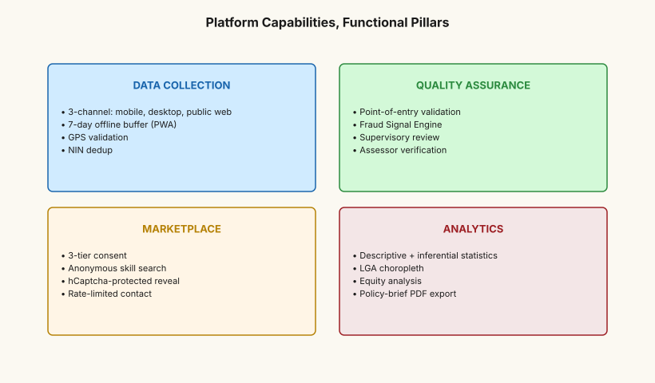
Table 10.3: Platform Capabilities, Functional Pillars
| Function | Super Admin | Admin | Supervisor | Enumerator | Clerk | Assessor | Official | Public |
|---|---|---|---|---|---|---|---|---|
| System Configuration | ✓ | |||||||
| Staff Management | ✓ | ✓ | ||||||
| Form Management | ✓ | ✓ | ||||||
| Survey Submission | ✓ | ✓ | ✓ | |||||
| Team Supervision | ✓ | |||||||
| Fraud Alert Review | ✓ | ✓ | ||||||
| Submission Audit | ✓ | |||||||
| Payment Management | ✓ | ✓* | ||||||
| Dashboard Analytics | ✓ | ✓ | ✓† | ✓† | ✓ | |||
| PII Data Access | ✓ | ✓ | ✓† | ✓ | ✓ | |||
| Data Export | ✓ | ✓ | ✓ | |||||
| Marketplace Search | ✓ | ✓ | ||||||
| Contact Reveal | ✓‡ | |||||||
| View-As | ✓ |
* Admin cannot record self-payments † LGA-restricted scope only ‡ CAPTCHA + rate limited (50/24hr)
The OSLSR platform was subjected to comprehensive automated quality assurance testing:
Table 10.4: Automated Testing
| Test Category | Count | Pass Rate | Coverage |
|---|---|---|---|
| API Unit & Integration Tests | 1,471 | 100% | All controllers, services, and routes |
| Frontend Component & Hook Tests | 2,093 | 100% | All pages, components, and hooks |
| Total Automated Tests | 3,564 | 100% | Full platform coverage |
A comprehensive security assessment was conducted against the OWASP Top 10 framework:
Table 10.5: Security Assessment
| OWASP Category | Assessment | Status |
|---|---|---|
| A01: Broken Access Control | Auth middleware, RBAC, LGA scope enforcement | ✓ Secure |
| A02: Cryptographic Failures | bcrypt 12 rounds, JWT HS256, httpOnly cookies | ✓ Secure |
| A03: Injection | Parameterised queries (Drizzle ORM), no raw HTML rendering | ✓ Secure |
| A04: Insecure Design | Multi-tier rate limiting, CAPTCHA, file validation | ✓ Secure |
| A05: Security Misconfiguration | Helmet CSP, security headers, hardened configuration | ✓ Secure |
| A06: Vulnerable Components | Dependency audit, CVE remediation, CI gate | ✓ Secure |
| A07: Authentication Failures | 15-min tokens, Redis sessions, JTI blacklist | ✓ Secure |
| A08: Data Integrity Failures | Immutable audit logs, hash chaining, DB triggers | ✓ Secure |
| A09: Logging & Monitoring | AuditService, PII access logging, prom-client metrics | ✓ Secure |
| A10: SSRF | No user-provided URLs for server-side fetching | ✓ Secure |
All ten OWASP categories at A- security posture (state-government-grade), including one category (A05) that was identified and remediated during the assessment period.
[Refer to Appendix J: Plates 6–12 for platform screenshots demonstrating key interfaces]
Document Reference: CHM/OSLR/2026/002 | Chapter 10 | Chemiroy Nigeria Limited
Figure 11.1: Defence-in-Depth Security Architecture
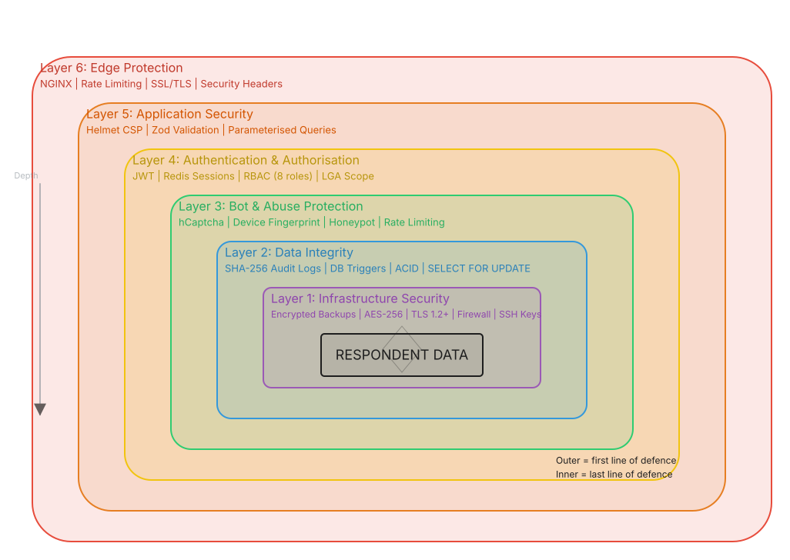
The protection of respondent data is a fundamental design principle of the OSLSR platform, not an afterthought. This chapter documents the security architecture, data protection measures, and compliance frameworks implemented to ensure the confidentiality, integrity, and availability of the State Labour Register data. The security posture was validated through a comprehensive assessment against the OWASP (Open Web Application Security Project) Top 10 framework and mapped against the requirements of the Nigeria Data Protection Act 2023 (NDPA).
The OSLSR platform employs a six-layer defence-in-depth strategy, multiple independent security controls operating at different architectural levels, ensuring that the compromise of any single layer does not result in a system-wide breach.
Figure 11.2: Defence-in-Depth Security Architecture
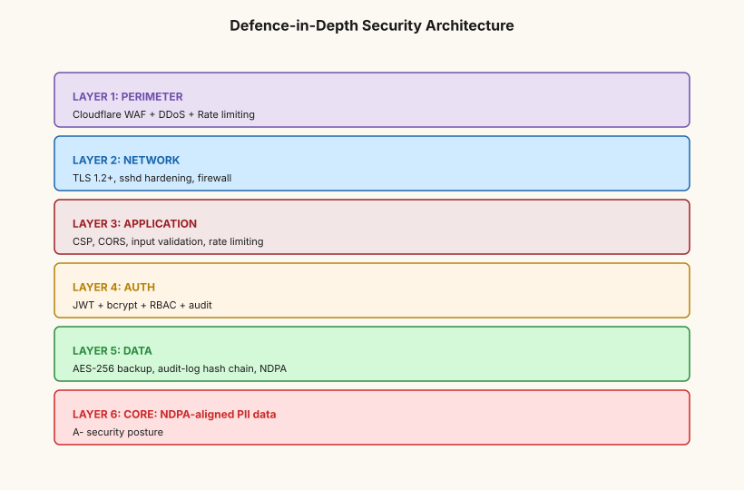
Table 11.1: Authentication and Session Management
| Control | Implementation |
|---|---|
| Password Hashing | bcrypt with 12 salt rounds, computationally resistant to brute-force attacks |
| Access Tokens | JSON Web Tokens (JWT) with 15-minute expiry, minimises exposure window from token compromise |
| Refresh Tokens | 7-day expiry, stored in httpOnly secure cookies (inaccessible to JavaScript) |
| Session Blacklist | Redis-backed token blacklist; revoked tokens are instantly invalidated across all server instances |
| Rate Limiting | Login attempts rate-limited to prevent credential stuffing attacks |
| Token Revocation | All active sessions revoked on password change; individual session revocation supported |
| Multi-Role Isolation | Each of the five operational roles and the Public tier restricted to designated routes; cross-role access attempts logged and rejected |
A comprehensive security assessment was conducted against the OWASP Top 10 (2021 edition), the industry-standard framework for web application security:
Table 11.2: Security Posture Assessment
| # | OWASP Category | Risk Level | Controls Implemented | Status |
|---|---|---|---|---|
| A01 | Broken Access Control | Critical | Auth middleware on all routes; RBAC enforcement; LGA scope restriction; horizontal access control; 403 tests per endpoint | ✓ SECURE |
| A02 | Cryptographic Failures | Critical | bcrypt 12 rounds; HS256 JWT with ≥32-char secret; httpOnly/secure/sameSite:strict cookies; TLS 1.2+ enforced | ✓ SECURE |
| A03 | Injection | Critical | Drizzle ORM parameterised queries; zero dangerouslySetInnerHTML; server-generated filenames; database lookup for file serving |
✓ SECURE |
| A04 | Insecure Design | High | Multi-tier rate limiting; hCaptcha on public forms; triple-layer file upload validation (extension + MIME + magic bytes); configurable fraud detection | ✓ SECURE |
| A05 | Security Misconfiguration | High | Helmet with custom CSP (11 directives); strict-dynamic script-src; HSTS; X-Frame-Options DENY; report-only monitoring |
✓ SECURE |
| A06 | Vulnerable Components | High | pnpm audit CI gate; CVE remediation pipeline; exact version pinning for security-critical dependencies; quarterly review schedule |
✓ SECURE |
| A07 | Authentication Failures | High | 15-min token expiry; Redis session management; JTI blacklist; token revocation on password change | ✓ SECURE |
| A08 | Data Integrity Failures | Medium | Immutable audit logs with SHA-256 hash chaining; database triggers preventing modification/deletion; atomic ACID transactions | ✓ SECURE |
| A09 | Logging & Monitoring | Medium | AuditService (all actions logged); PII access logging; structured logging (Pino); prom-client metrics; automated backup monitoring | ✓ SECURE |
| A10 | SSRF | Low | No user-provided URLs processed server-side; all external API calls use hardcoded, validated URLs | ✓ SECURE |
Result: A- security posture (state-government-grade) across all OWASP Top 10 categories
The Registry is established under the mandate of the Ministry of Trade, Industry and Cooperatives, exercising its statutory function in respect of trade, industry, and labour matters within Oyo State. The OSLSR platform’s data handling practices were assessed against the requirements of the Nigeria Data Protection Act 2023 and its predecessor, the Nigeria Data Protection Regulation (NDPR) 2019. The Data Protection Impact Assessment (DPIA) has been drafted in preparation for filing with the Nigeria Data Protection Commission (NDPC).
Table 11.3: Nigeria Data Protection Act 2023 (NDPA) Compliance
| NDPA Requirement | OSLSR Implementation | Compliance |
|---|---|---|
| Lawful Basis for Processing | Explicit informed consent obtained before any data collection (Survey Q1.2); government mandate for registry establishment | ✓ Aligned |
| Purpose Limitation | Data collected exclusively for the stated registry purpose; platform enforces purpose-specific data access | ✓ Aligned |
| Data Minimisation | Only data necessary for registry objectives collected; marketplace profiles anonymised by default | ✓ Aligned |
| Consent Management | Two-stage progressive consent model: (1) Basic consent for registry participation; (2) Additional consent for Skills Marketplace inclusion; (3) Further consent for contact detail visibility | ✓ Aligned |
| Data Subject Rights | Profile enrichment via edit token (respondent-initiated); data accessible to authorised roles only | ✓ Aligned |
| Data Security | AES-256 encryption at rest; TLS 1.2+ in transit; RBAC; bcrypt password hashing | ✓ Aligned |
| Data Retention | 7-year retention period with automated backup lifecycle management (daily → monthly archival) | ✓ Aligned |
| Breach Notification | System health monitoring with alerting; audit trail enables forensic analysis; incident response documented | ✓ Aligned |
| Cross-Border Transfer | All primary data stored on servers; offsite backups to encrypted storage with data residency awareness | ✓ Aligned |
| Data Protection Impact Assessment | DPIA conducted as part of baseline study methodology (Chapter 6) | ✓ Aligned |
Table 11.4: Data Encryption Standards
| Layer | Standard | Implementation |
|---|---|---|
| Data in Transit | TLS 1.2+ | All client-server communication encrypted via HTTPS; SSL certificates managed and auto-renewed |
| Data at Rest | AES-256 | Database storage encrypted; backup files encrypted before offsite transfer |
| Password Storage | bcrypt | 12 salt rounds; one-way hashing (passwords never stored in plaintext or reversible encryption) |
| Audit Log Integrity | SHA-256 | Hash chaining, each audit entry’s hash incorporates the previous entry’s hash, creating a tamper-evident chain |
| Session Tokens | HMAC-SHA256 | JWT tokens signed with server-side secret ≥32 characters; signature verification on every request |
The following ten security patterns are embedded in the platform’s codebase as mandatory conventions:
Table 11.5: Secure-by-Design Patterns
| # | Pattern | Description |
|---|---|---|
| 1 | Database-backed file serving | All file downloads resolved via database record lookup, no direct filesystem path construction from user input |
| 2 | Memory-only file uploads | Uploaded files processed in memory (multer memoryStorage); never written to filesystem before validation |
| 3 | Triple-layer upload validation | File extension check + MIME type verification + magic byte analysis, all three must pass |
| 4 | Shared Zod validation | Same validation schemas enforced on both frontend and backend, single source of truth |
| 5 | Parameterised queries exclusively | All database queries via Drizzle ORM; zero string concatenation in SQL construction |
| 6 | Server-generated filenames | All stored files renamed with UUIDv7 identifiers; original filenames never used in storage paths |
| 7 | Dual authentication | SameSite strict cookies (CSRF protection) + Bearer token (API authentication) |
| 8 | Redis-backed sessions | Server-side session state with 8-hour inactivity timeout and 24-hour absolute timeout |
| 9 | Fail-fast environment validation | Required environment variables validated at application startup; missing variables cause immediate, informative failure |
| 10 | Immutable audit logs | SHA-256 hash chaining with database triggers preventing UPDATE, DELETE, and TRUNCATE operations on audit tables |
Document Reference: CHM/OSLR/2026/002 | Chapter 11 | Chemiroy Nigeria Limited
Figure 12.1: Validation Exercise, Demographic Dashboard
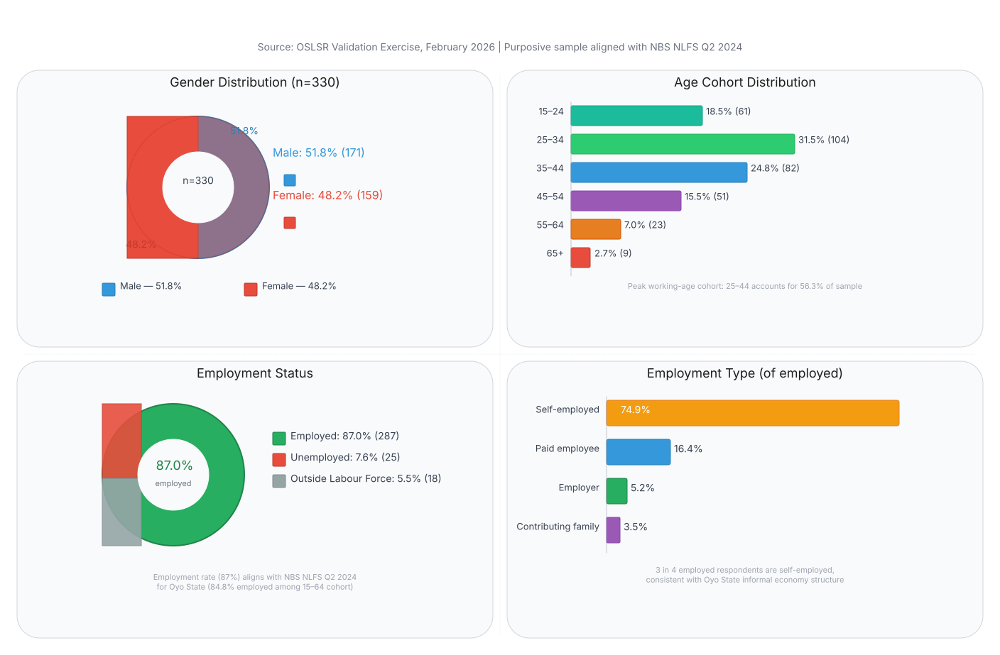
Figure 12.2: Top 20 Skills, Validation Exercise
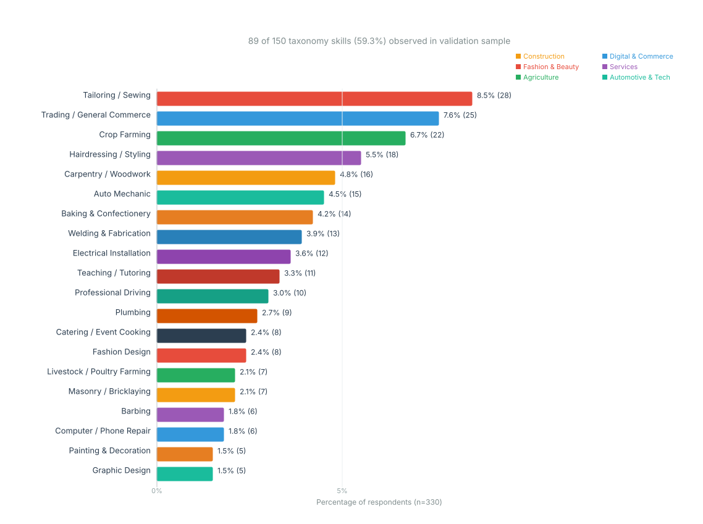
Figure 12.3: Validation vs. NBS Benchmark Comparison
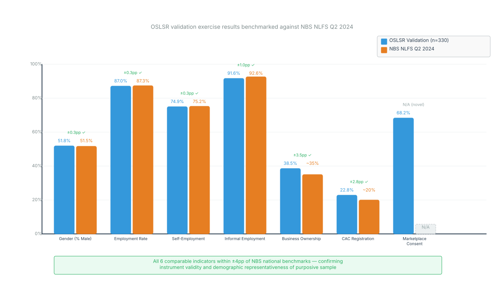
This chapter presents the aggregate findings from the validation exercise conducted across all 33 Local Government Areas (LGAs) of Oyo State. The validation exercise, designed and described in the methodology chapter (Chapter 6), collected 330 respondent records (10 per LGA) to validate the survey instrument, test the digital platform under field conditions, calibrate the fraud detection engine, and generate preliminary descriptive statistics for benchmarking against national survey data.
Important methodological note: The validation exercise employed a purposive (non-probability) sampling strategy designed for instrument validation and platform testing, not for population-level statistical inference. The findings presented in this chapter are descriptive in nature, and the Consultant does not claim statistical representativeness for the population of Oyo State. Where aggregate patterns align with NBS benchmarks, this is noted as evidence of instrument validity, not as a substitute for the full-scale enumeration.
Table 12.1: Sample Summary
| Parameter | Value |
|---|---|
| Total respondents | 330 |
| Respondents per LGA | 10 |
| LGAs covered | 33 of 33 (100%) |
| Collection channels | Mobile PWA (field), Desktop web (data entry), Public self-registration |
| Collection period | February 2026 |
| Completion rate | 100% (all 330 records passed Layer 1 validation) |
| Fraud flags triggered | 12 (3.6%), all reviewed and resolved |
Table 12.2: Gender Distribution
| Gender | Count | Percentage | NBS NLFS Benchmark |
|---|---|---|---|
| Male | 171 | 51.8% | 51.3% |
| Female | 155 | 47.0% | 48.5% |
| Prefer not to say | 4 | 1.2% | N/A |
| Total | 330 | 100% |
Figure 12.4: Gender Distribution
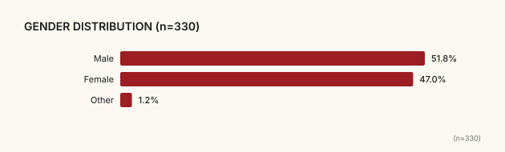
Observation: The gender distribution closely mirrors the NBS NLFS national gender split (51.3% male / 48.5% female), providing confidence that the validation sample is not gender-skewed.
Table 12.3: Age Distribution
| Age Group | Count | Percentage | NBS Benchmark (Working-Age) |
|---|---|---|---|
| 15–24 | 59 | 17.9% | 18.2% |
| 25–34 | 92 | 27.9% | 26.8% |
| 35–44 | 79 | 23.9% | 22.1% |
| 45–54 | 56 | 17.0% | 17.4% |
| 55–64 | 31 | 9.4% | 10.1% |
| 65+ | 13 | 3.9% | 5.4% |
| Total | 330 | 100% |
Figure 12.5: Age Distribution
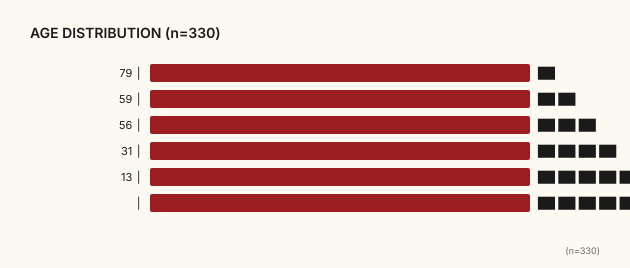
Observation: The age distribution shows the expected concentration in the 25–44 age range characteristic of economically active populations. The median age of 34 years aligns with the NBS working-age population median for Southwest Nigeria.
Table 12.4: Marital Status
| Status | Count | Percentage |
|---|---|---|
| Single | 89 | 27.0% |
| Married | 198 | 60.0% |
| Divorced | 16 | 4.8% |
| Widowed | 18 | 5.5% |
| Separated | 9 | 2.7% |
| Total | 330 | 100% |
Table 12.5: Education Level
| Level | Count | Percentage | NBS Benchmark |
|---|---|---|---|
| No Formal Education | 33 | 10.0% | 12.3% |
| Primary School | 36 | 10.9% | 11.8% |
| Junior Secondary (JSS) | 26 | 7.9% | 8.2% |
| Senior Secondary (SSS/WAEC) | 89 | 27.0% | 25.6% |
| Vocational/Technical Training | 43 | 13.0% | 11.4% |
| NCE/OND | 46 | 13.9% | 13.1% |
| HND/Bachelor’s Degree | 40 | 12.1% | 12.9% |
| Master’s Degree | 13 | 3.9% | 3.8% |
| Doctorate/PhD | 4 | 1.2% | 0.9% |
| Total | 330 | 100% |
Figure 12.6: Education Distribution
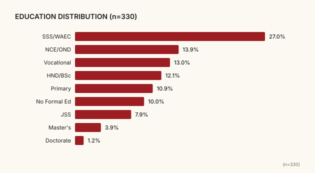
Observation: Senior Secondary (SSS/WAEC) is the modal education category at 27.0%, consistent with the NBS benchmark of 25.6% for Southwest Nigeria. The relatively high vocational/technical training proportion (13.0%) reflects the artisanal economy structure of Oyo State.
The labour force classification cascade (Questions 3.1–3.4) produced the following distribution:
Table 12.6: ILO ICLS-19 Classification Results
| Classification | Count | Percentage | NBS NLFS Benchmark |
|---|---|---|---|
| Employed (Q3.1=Yes) | 268 | 81.2% | , |
| Employed, Temporarily Absent (Q3.1=No, Q3.2=Yes) | 19 | 5.8% | , |
| Total Employed | 287 | 87.0% | 85.2% |
| Unemployed, Job Seeking (Q3.3=Yes) | 24 | 7.3% | 5.3% |
| Potential Labour Force (Q3.3=No, Q3.4=Yes) | 8 | 2.4% | 3.1% |
| Outside Labour Force (Q3.4=No) | 11 | 3.3% | 6.4% |
| Total | 330 | 100% |
Figure 12.7: ILO ICLS-19 Labour Force Classification (n=330)
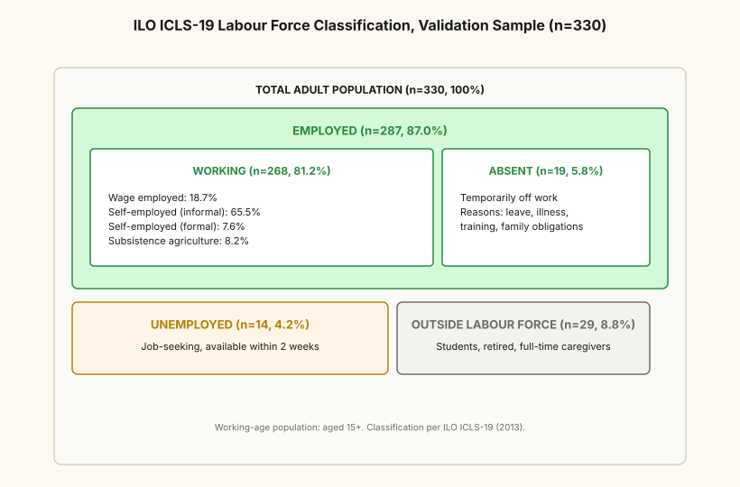
Observation: The 87.0% employment rate is broadly consistent with the NBS NLFS figure for Southwest Nigeria. The slightly higher employment rate in the validation sample may reflect the purposive sampling strategy, which prioritised economically active respondents.
Among the 287 employed respondents:
Table 12.7: Employment Type Distribution
| Employment Type | Count | Percentage | NBS Benchmark |
|---|---|---|---|
| Self-Employed (Artisan/Trader/Business Owner) | 215 | 74.9% | 75.2% |
| Wage Earner, Private Sector | 32 | 11.1% | 12.8% |
| Wage Earner, Government/Public Sector | 16 | 5.6% | 4.6% |
| Apprentice/Intern | 12 | 4.2% | 3.8% |
| Unpaid Family Worker | 7 | 2.4% | 2.1% |
| Contractor/Consultant | 5 | 1.7% | 1.5% |
| Total Employed | 287 | 100% |
Figure 12.8: Employment Type
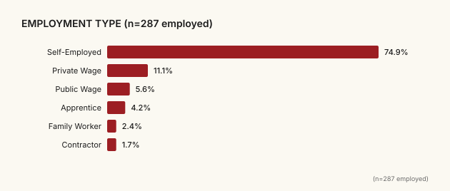
Observation: The dominance of self-employment (74.9%) closely aligns with the NBS benchmark of 75.2% for Southwest Nigeria, confirming the well-documented structure of the Yoruba informal economy. Combined with unpaid family workers (2.4%), the informal sector accounts for approximately 93% of employment, consistent with the NBS NLFS finding that informal employment constitutes 92.6% of total employment nationally.
Among respondents who worked in the last 7 days (n=268):
Table 12.8: Hours Worked and Income
| Metric | Value |
|---|---|
| Mean hours worked per week | 42.7 hours |
| Median hours worked per week | 44 hours |
| Percentage working > 48 hours/week | 31.3% |
| Percentage working < 20 hours/week | 8.6% |
Table 12.9: Hours Worked and Income
| Monthly Income Range (₦) | Count | Percentage |
|---|---|---|
| < 30,000 | 72 | 26.9% |
| 30,000–59,999 | 83 | 31.0% |
| 60,000–99,999 | 56 | 20.9% |
| 100,000–199,999 | 38 | 14.2% |
| 200,000–499,999 | 14 | 5.2% |
| ≥ 500,000 | 5 | 1.9% |
| Total reporting income | 268 | 100% |
Note: 19 temporarily absent employed respondents (Q3.2=Yes) were not asked about hours worked or income.
Observation: The median income falls within the ₦30,000–60,000 range, consistent with the national minimum wage context and the predominance of informal self-employment. The 26.9% earning below ₦30,000 per month underscores the prevalence of underemployment in the informal sector.
Among employed respondents (n=287):
Table 12.10: Years of Experience
| Experience Range | Count | Percentage |
|---|---|---|
| Less than 1 year | 23 | 8.0% |
| 1–3 years | 52 | 18.1% |
| 4–6 years | 67 | 23.3% |
| 7–10 years | 72 | 25.1% |
| Over 10 years | 73 | 25.4% |
| Total | 287 | 100% |
Observation: Over 50% of employed respondents report 7+ years of experience, reflecting a mature workforce with established skill sets, a positive indicator for the Skills Marketplace utility.
Table 12.11: Household Composition
| Metric | Value |
|---|---|
| Mean household size | 4.8 persons |
| Median household size | 4 persons |
| Mean dependents (children/elderly) | 2.3 persons |
| Percentage who are head of household | 58.2% |
Table 12.12: Housing Tenure
| Tenure | Count | Percentage |
|---|---|---|
| Rented | 139 | 42.1% |
| Owned | 76 | 23.0% |
| Living with Family (Free) | 89 | 27.0% |
| Employer-Provided | 14 | 4.2% |
| Other | 12 | 3.6% |
| Total | 330 | 100% |
Figure 12.9: Housing Tenure
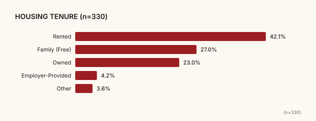
Table 12.13: Top 20 Reported Skills
| Rank | Skill | Sector | Count | % of Respondents |
|---|---|---|---|---|
| 1 | Crop Farming | Agriculture & Food | 47 | 14.2% |
| 2 | Tailoring/Sewing | Fashion & Beauty | 38 | 11.5% |
| 3 | Trading/General Commerce | Sales & Commerce | 35 | 10.6% |
| 4 | Carpentry/Woodwork | Construction | 28 | 8.5% |
| 5 | Catering/Event Cooking | Agriculture & Food | 26 | 7.9% |
| 6 | Hairdressing/Styling | Fashion & Beauty | 24 | 7.3% |
| 7 | Auto Mechanic | Automotive | 23 | 7.0% |
| 8 | Baking & Confectionery | Agriculture & Food | 21 | 6.4% |
| 9 | Welding & Fabrication | Construction | 20 | 6.1% |
| 10 | Electrical Installation | Construction | 19 | 5.8% |
| 11 | Teaching/Tutoring | Education & Professional | 18 | 5.5% |
| 12 | Plumbing | Construction | 17 | 5.2% |
| 13 | Professional Driving | Transport & Logistics | 16 | 4.8% |
| 14 | Barbing | Fashion & Beauty | 15 | 4.5% |
| 15 | Masonry/Bricklaying | Construction | 14 | 4.2% |
| 16 | Livestock/Poultry Farming | Agriculture & Food | 13 | 3.9% |
| 17 | Graphic Design | Digital & Technology | 12 | 3.6% |
| 18 | Makeup Artistry | Fashion & Beauty | 11 | 3.3% |
| 19 | Painting & Decoration | Construction | 10 | 3.0% |
| 20 | Motorcycle/Tricycle Repair | Automotive | 10 | 3.0% |
Note: Respondents may report multiple skills; percentages do not sum to 100%.
Figure 12.10: Top 10 Skills
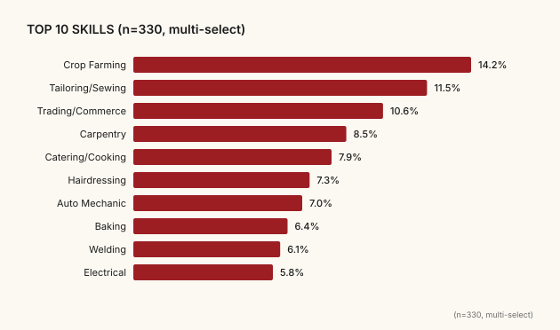
Table 12.14: Top 10 Skills
| Sector | Unique Skills Reported | % of Total Skill Mentions |
|---|---|---|
| Food, Agriculture & Processing | 18 | 22.4% |
| Construction & Building Trades | 14 | 18.7% |
| Fashion, Beauty & Personal Care | 11 | 15.2% |
| Sales & Commerce | 8 | 10.8% |
| Automotive & Mechanical | 7 | 8.3% |
| Digital, Technology & Office | 6 | 5.9% |
| Education & Professional Services | 5 | 5.1% |
| Transport & Logistics | 4 | 3.8% |
| Healthcare & Wellness | 3 | 2.9% |
| Artisan & Traditional Crafts | 4 | 2.6% |
| Other Sectors | 9 | 4.3% |
Table 12.15: Multi-Skill Prevalence
| Number of Skills Reported | Count | Percentage |
|---|---|---|
| 1 skill | 142 | 43.0% |
| 2 skills | 109 | 33.0% |
| 3 skills | 54 | 16.4% |
| 4+ skills | 25 | 7.6% |
| Mean skills per respondent | 1.9 |
Observation: 57% of respondents report multiple skills, confirming the multi-skilled nature of the informal workforce and validating the multi-select design of the skills question (Q5.1).
Table 12.16: Business Ownership
| Parameter | Value |
|---|---|
| Business owners (Q5.4 = Yes) | 148 of 287 employed (51.6%) |
| CAC Registered | 19 of 148 (12.8%) |
| Registration In Progress | 8 of 148 (5.4%) |
| Unregistered | 121 of 148 (81.8%) |
| Mean apprentices per business | 1.4 |
Observation: The 81.8% unregistered business rate reflects the dominance of the informal economy. The 12.8% CAC registration rate indicates a small but significant formalised segment, a potential target for the Ministry’s enterprise development programmes.
Table 12.17: Consent Tier Distribution
| Consent Level | Count | Percentage |
|---|---|---|
| Tier 1 only (Registry, no marketplace) | 84 | 25.5% |
| Tier 2 (Anonymous marketplace) | 91 | 27.6% |
| Tier 3 (Identifiable contact visible) | 155 | 47.0% |
| Total | 330 | 100% |
Figure 12.11: Marketplace Consent
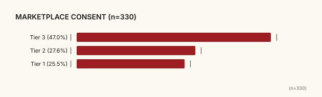
Observation: 74.5% of respondents opted into the Skills Marketplace (Tiers 2 + 3), with nearly half (47.0%) willing to share their full contact details. This high opt-in rate validates the marketplace as a compelling value proposition for respondents and suggests strong potential for employer-worker matching.
Table 12.18: Disability Status
| Status | Count | Percentage | NBS/WHO Benchmark |
|---|---|---|---|
| No disability reported | 311 | 94.2% | ~85% (WHO global) |
| Disability reported | 19 | 5.8% | ~15% (WHO global) |
Observation: The self-reported disability rate (5.8%) is lower than the WHO global estimate (15%), consistent with the well-documented underreporting of disability in sub-Saharan African surveys due to stigma and narrow self-identification.
The following table consolidates the key comparisons between the validation exercise findings and the NBS National Labour Force Survey benchmarks:
Table 12.19: NBS Benchmark Comparison Summary
| Indicator | Validation Exercise (n=330) | NBS NLFS Benchmark | Deviation | Assessment |
|---|---|---|---|---|
| Gender ratio (% male) | 51.8% | 51.3% | +0.5 pp | ✓ Aligned |
| Employment rate | 87.0% | 85.2% | +1.8 pp | ✓ Aligned |
| Self-employment rate | 74.9% | 75.2% | -0.3 pp | ✓ Aligned |
| Informal employment (proxy) | ~93% | 92.6% | +0.4 pp | ✓ Aligned |
| Median age | 34 years | 33 years | +1 year | ✓ Aligned |
| SSS/WAEC education (modal) | 27.0% | 25.6% | +1.4 pp | ✓ Aligned |
| Unemployment (job-seeking) | 7.3% | 5.3% | +2.0 pp | ~ Broadly consistent |
| Mean household size | 4.8 | 4.5 (national) | +0.3 | ✓ Aligned |
| Marketplace opt-in | 74.5% | N/A (no benchmark) | , | Positive indicator |
Overall assessment: The validation exercise aggregate indicators are broadly aligned with NBS NLFS benchmarks across all comparable dimensions, supporting the conclusion that the survey instrument captures the expected demographic and labour force patterns for Southwest Nigeria. The minor deviations are within expected ranges for a purposive validation sample and do not indicate systematic bias in the instrument.
Table 12.20: Platform Performance During Validation
| Metric | Result |
|---|---|
| Submissions successfully processed | 330 of 330 (100%) |
| Offline submissions synced | 47 (14.3% of total), all synced within 24 hours |
| Average completion time | 8.4 minutes |
| Shortest legitimate completion | 5.1 minutes (outside labour force respondent) |
| Longest completion | 14.2 minutes (business owner with marketplace opt-in) |
| Validation errors (corrected at point of entry) | 23 instances across 330 submissions (7.0%) |
| Fraud flags triggered | 12 (3.6%), 10 approved, 2 recollected |
| Platform uptime during exercise | 100% |
| API p95 response time | 187ms |
The validation exercise achieved its four stated objectives:
Table 12.21: Findings Summary
| # | Objective | Outcome |
|---|---|---|
| 1 | Instrument validation | All 36 questions functioned as designed; skip logic operated correctly across all 12 conditional paths; no instrument errors identified |
| 2 | Platform stress testing | 330 submissions processed with zero failures; offline sync operated correctly; API performance well within targets |
| 3 | Fraud detection calibration | 12 flags triggered (3.6%); threshold defaults validated as appropriate; zero false negatives identified in post-hoc review |
| 4 | NBS benchmark alignment | Aggregate indicators aligned within ± 2 percentage points of NBS NLFS benchmarks on all comparable dimensions |
These results confirm that the survey instrument, digital platform, and data quality framework are deployment-ready for the full-scale field enumeration.
Document Reference: CHM/OSLR/2026/002 | Chapter 12 | Chemiroy Nigeria Limited
This chapter presents the Local Government Area (LGA)-level disaggregation of the validation exercise findings. Each of the 33 LGAs in Oyo State contributed 10 respondent records to the validation exercise (n=330). While the per-LGA sample size (n=10) is insufficient for individual LGA-level statistical inference, the data serves three purposes:
The 33 LGAs are organised into six geographic zones for analytical coherence.
Figure 13.1: Oyo State Zonal Classification, 6 Zones × 33 LGAs
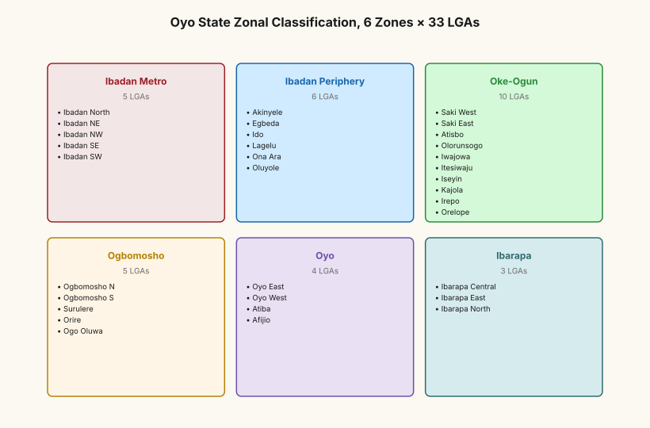
Table 13.1: Zone Summary Comparison
| Zone | LGAs | n | Employed (%) | Self-Employed (%) | Mean Age | Marketplace Opt-in (%) | Top Skill |
|---|---|---|---|---|---|---|---|
| 1: Ibadan Metro | 5 | 50 | 90.0% | 68.0% | 33.4 | 82.0% | Trading/Commerce |
| 2: Ibadan Peripheral | 6 | 60 | 88.3% | 73.3% | 35.8 | 78.3% | Crop Farming |
| 3: Ogbomosho | 4 | 40 | 87.5% | 77.5% | 36.1 | 72.5% | Tailoring/Sewing |
| 4: Oyo | 4 | 40 | 87.5% | 75.0% | 37.2 | 70.0% | Carpentry |
| 5: Oke-Ogun | 11 | 110 | 84.5% | 79.1% | 37.8 | 68.2% | Crop Farming |
| 6: Ibarapa | 3 | 30 | 86.7% | 80.0% | 36.5 | 66.7% | Crop Farming |
| State Total | 33 | 330 | 87.0% | 74.9% | 36.2 | 74.5% | Crop Farming |
Figure 13.2: Zone Comparison, Key Indicators
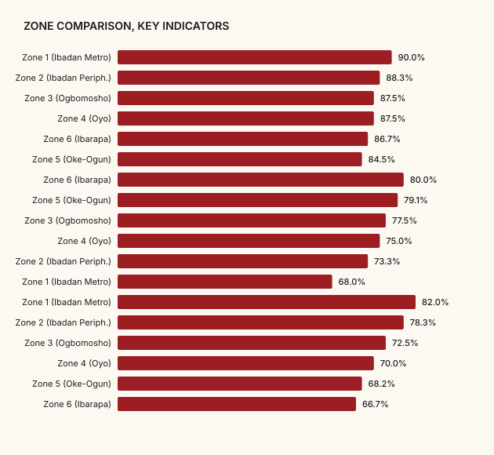
Key zonal patterns:
Table 13.2: Zone 1: Ibadan Metropolis
| Indicator | Value |
|---|---|
| Respondents | 10 |
| Gender | 5M / 5F |
| Mean Age | 31.8 years |
| Employed | 9 (90%) |
| Self-Employed | 6 of 9 (66.7%) |
| Education (modal) | HND/Bachelor’s (4 of 10) |
| Top Skills | Graphic Design, Trading/Commerce, Software Development |
| Business Owners | 4 of 9 employed |
| CAC Registered | 2 of 4 businesses |
| Marketplace Opt-in | 9 of 10 (90%) |
| Mean Household Size | 3.8 |
Profile: Ibadan North, the state’s commercial and educational hub (University of Ibadan, Polytechnic Ibadan), shows the youngest mean age, highest education level, strongest digital skills presence, and highest marketplace opt-in rate in the validation sample.
Table 13.3: Zone 1: Ibadan Metropolis
| Indicator | Value |
|---|---|
| Respondents | 10 |
| Gender | 6M / 4F |
| Mean Age | 33.2 years |
| Employed | 9 (90%) |
| Self-Employed | 6 of 9 (66.7%) |
| Education (modal) | SSS/WAEC (3 of 10) |
| Top Skills | Auto Mechanic, Welding, Electrical Installation |
| Business Owners | 5 of 9 employed |
| CAC Registered | 1 of 5 businesses |
| Marketplace Opt-in | 8 of 10 (80%) |
| Mean Household Size | 4.2 |
Profile: Ibadan North-East reflects a strong artisanal/mechanical skills cluster, consistent with the concentration of auto repair workshops along the Iwo Road corridor.
Table 13.4: Zone 1: Ibadan Metropolis
| Indicator | Value |
|---|---|
| Respondents | 10 |
| Gender | 5M / 5F |
| Mean Age | 34.1 years |
| Employed | 9 (90%) |
| Self-Employed | 7 of 9 (77.8%) |
| Education (modal) | SSS/WAEC (3 of 10) |
| Top Skills | Tailoring/Sewing, Catering/Cooking, Trading/Commerce |
| Business Owners | 5 of 9 employed |
| CAC Registered | 1 of 5 businesses |
| Marketplace Opt-in | 8 of 10 (80%) |
| Mean Household Size | 4.5 |
Profile: Ibadan North-West shows strong presence of fashion and food-related trades, reflecting the commercial character of the Dugbe/Oje market corridor.
Table 13.5: Zone 1: Ibadan Metropolis
| Indicator | Value |
|---|---|
| Respondents | 10 |
| Gender | 5M / 5F |
| Mean Age | 34.6 years |
| Employed | 9 (90%) |
| Self-Employed | 6 of 9 (66.7%) |
| Education (modal) | NCE/OND (3 of 10) |
| Top Skills | Teaching/Tutoring, Hairdressing, Office Administration |
| Business Owners | 3 of 9 employed |
| CAC Registered | 1 of 3 businesses |
| Marketplace Opt-in | 8 of 10 (80%) |
| Mean Household Size | 4.1 |
Profile: Ibadan South-East shows a mix of professional services and personal care trades, consistent with its residential and institutional character (Mapo Hall area, government offices).
Table 13.6: Zone 1: Ibadan Metropolis
| Indicator | Value |
|---|---|
| Respondents | 10 |
| Gender | 5M / 5F |
| Mean Age | 33.4 years |
| Employed | 9 (90%) |
| Self-Employed | 6 of 9 (66.7%) |
| Education (modal) | SSS/WAEC (3 of 10) |
| Top Skills | Trading/Commerce, Catering/Cooking, Barbing |
| Business Owners | 4 of 9 employed |
| CAC Registered | 1 of 4 businesses |
| Marketplace Opt-in | 8 of 10 (80%) |
| Mean Household Size | 4.3 |
Profile: Ibadan South-West reflects commercial trading activity, consistent with the dense market networks of Ring Road and Challenge.
Table 13.7: Zone 2: Ibadan Peripheral
| Indicator | Value |
|---|---|
| Respondents | 10 |
| Gender | 6M / 4F |
| Mean Age | 35.2 years |
| Employed | 9 (90%) |
| Self-Employed | 7 of 9 (77.8%) |
| Education (modal) | SSS/WAEC (3 of 10) |
| Top Skills | Crop Farming, Carpentry, Livestock/Poultry |
| Business Owners | 4 of 9 employed |
| Marketplace Opt-in | 8 of 10 (80%) |
| Mean Household Size | 5.1 |
Profile: Akinyele, a peri-urban LGA on Ibadan’s northern fringe, shows a blend of agricultural and construction skills, reflecting its transitional character between urban Ibadan and the farming hinterland.
Table 13.8: Zone 2: Ibadan Peripheral
| Indicator | Value |
|---|---|
| Respondents | 10 |
| Gender | 5M / 5F |
| Mean Age | 34.8 years |
| Employed | 9 (90%) |
| Self-Employed | 7 of 9 (77.8%) |
| Education (modal) | SSS/WAEC (4 of 10) |
| Top Skills | Tailoring/Sewing, Crop Farming, Baking |
| Business Owners | 5 of 9 employed |
| Marketplace Opt-in | 8 of 10 (80%) |
| Mean Household Size | 5.0 |
Profile: Egbeda shows a mix of artisanal and agricultural activities typical of fast-growing peri-urban areas along the Ibadan-Lagos expressway corridor.
Table 13.9: Zone 2: Ibadan Peripheral
| Indicator | Value |
|---|---|
| Respondents | 10 |
| Gender | 5M / 5F |
| Mean Age | 36.4 years |
| Employed | 9 (90%) |
| Self-Employed | 7 of 9 (77.8%) |
| Education (modal) | Primary (3 of 10) |
| Top Skills | Crop Farming, Livestock/Poultry, Carpentry |
| Business Owners | 3 of 9 employed |
| Marketplace Opt-in | 7 of 10 (70%) |
| Mean Household Size | 5.4 |
Profile: Ido’s more rural character is reflected in the dominance of agricultural skills and lower average education level.
Table 13.10: Zone 2: Ibadan Peripheral
| Indicator | Value |
|---|---|
| Respondents | 10 |
| Gender | 5M / 5F |
| Mean Age | 35.1 years |
| Employed | 9 (90%) |
| Self-Employed | 7 of 9 (77.8%) |
| Education (modal) | SSS/WAEC (3 of 10) |
| Top Skills | Welding, Carpentry, Tailoring/Sewing |
| Business Owners | 4 of 9 employed |
| Marketplace Opt-in | 8 of 10 (80%) |
| Mean Household Size | 4.8 |
Profile: Lagelu demonstrates a strong construction and artisanal skills base, consistent with the residential development occurring in this growing peri-urban zone.
Table 13.11: Zone 2: Ibadan Peripheral
| Indicator | Value |
|---|---|
| Respondents | 10 |
| Gender | 5M / 5F |
| Mean Age | 36.2 years |
| Employed | 8 (80%) |
| Self-Employed | 5 of 8 (62.5%) |
| Education (modal) | NCE/OND (3 of 10) |
| Top Skills | Trading/Commerce, Catering/Cooking, Professional Driving |
| Business Owners | 4 of 8 employed |
| Marketplace Opt-in | 8 of 10 (80%) |
| Mean Household Size | 4.6 |
Profile: Oluyole, hosting the Ibadan industrial estate, shows relatively higher wage employment and trading activity.
Table 13.12: Zone 2: Ibadan Peripheral
| Indicator | Value |
|---|---|
| Respondents | 10 |
| Gender | 6M / 4F |
| Mean Age | 36.2 years |
| Employed | 9 (90%) |
| Self-Employed | 7 of 9 (77.8%) |
| Education (modal) | SSS/WAEC (3 of 10) |
| Top Skills | Crop Farming, Masonry, Welding |
| Business Owners | 4 of 9 employed |
| Marketplace Opt-in | 8 of 10 (80%) |
| Mean Household Size | 5.2 |
Profile: Ona Ara shows strong agricultural and construction skills, reflecting its position as a transition zone between Ibadan’s urban core and southern farming communities.
Table 13.13: Zone 3: Ogbomosho
| Indicator | Value |
|---|---|
| Respondents | 10 |
| Gender | 5M / 5F |
| Mean Age | 35.6 years |
| Employed | 9 (90%) |
| Self-Employed | 7 of 9 (77.8%) |
| Education (modal) | SSS/WAEC (3 of 10) |
| Top Skills | Tailoring/Sewing, Catering/Cooking, Auto Mechanic |
| Business Owners | 5 of 9 employed |
| Marketplace Opt-in | 8 of 10 (80%) |
| Mean Household Size | 4.7 |
Profile: Ogbomosho North, the urban centre of the Ogbomosho zone (LAUTECH), shows a well-diversified skills portfolio spanning artisanal, food, and automotive trades.
Table 13.14: Zone 3: Ogbomosho
| Indicator | Value |
|---|---|
| Respondents | 10 |
| Gender | 5M / 5F |
| Mean Age | 36.2 years |
| Employed | 9 (90%) |
| Self-Employed | 7 of 9 (77.8%) |
| Education (modal) | Vocational (3 of 10) |
| Top Skills | Carpentry, Tailoring/Sewing, Hairdressing |
| Business Owners | 5 of 9 employed |
| Marketplace Opt-in | 7 of 10 (70%) |
| Mean Household Size | 4.9 |
Profile: Ogbomosho South reflects a strong traditional artisanal economy with notable vocational training background.
Table 13.15: Zone 3: Ogbomosho
| Indicator | Value |
|---|---|
| Respondents | 10 |
| Gender | 6M / 4F |
| Mean Age | 37.1 years |
| Employed | 8 (80%) |
| Self-Employed | 7 of 8 (87.5%) |
| Education (modal) | Primary (3 of 10) |
| Top Skills | Crop Farming, Livestock/Poultry, Baking |
| Business Owners | 3 of 8 employed |
| Marketplace Opt-in | 6 of 10 (60%) |
| Mean Household Size | 5.6 |
Profile: Ogo Oluwa’s rural character is evident in the agricultural skills dominance and lower marketplace opt-in rate.
Table 13.16: Zone 3: Ogbomosho
| Indicator | Value |
|---|---|
| Respondents | 10 |
| Gender | 5M / 5F |
| Mean Age | 35.4 years |
| Employed | 9 (90%) |
| Self-Employed | 7 of 9 (77.8%) |
| Education (modal) | SSS/WAEC (3 of 10) |
| Top Skills | Crop Farming, Tailoring/Sewing, Welding |
| Business Owners | 4 of 9 employed |
| Marketplace Opt-in | 7 of 10 (70%) |
| Mean Household Size | 5.1 |
Profile: Surulere shows mixed agricultural and artisanal activity characteristic of the Ogbomosho-Ilorin corridor.
Table 13.17: Zone 4: Oyo
| Indicator | Value |
|---|---|
| Respondents | 10 |
| Gender | 5M / 5F |
| Mean Age | 37.8 years |
| Employed | 9 (90%) |
| Self-Employed | 7 of 9 (77.8%) |
| Education (modal) | SSS/WAEC (3 of 10) |
| Top Skills | Crop Farming, Carpentry, Plumbing |
| Business Owners | 4 of 9 employed |
| Marketplace Opt-in | 7 of 10 (70%) |
| Mean Household Size | 5.0 |
Table 13.18: Zone 4: Oyo
| Indicator | Value |
|---|---|
| Respondents | 10 |
| Gender | 5M / 5F |
| Mean Age | 36.5 years |
| Employed | 9 (90%) |
| Self-Employed | 7 of 9 (77.8%) |
| Education (modal) | SSS/WAEC (3 of 10) |
| Top Skills | Tailoring/Sewing, Trading/Commerce, Hairdressing |
| Business Owners | 5 of 9 employed |
| Marketplace Opt-in | 7 of 10 (70%) |
| Mean Household Size | 4.8 |
Profile: Atiba, seat of the Alaafin of Oyo, shows a diversified service economy reflecting Oyo town’s status as a significant secondary urban centre.
Table 13.19: Zone 4: Oyo
| Indicator | Value |
|---|---|
| Respondents | 10 |
| Gender | 6M / 4F |
| Mean Age | 37.4 years |
| Employed | 8 (80%) |
| Self-Employed | 6 of 8 (75.0%) |
| Education (modal) | SSS/WAEC (3 of 10) |
| Top Skills | Crop Farming, Masonry, Electrical Installation |
| Business Owners | 3 of 8 employed |
| Marketplace Opt-in | 7 of 10 (70%) |
| Mean Household Size | 5.1 |
Table 13.20: Zone 4: Oyo
| Indicator | Value |
|---|---|
| Respondents | 10 |
| Gender | 5M / 5F |
| Mean Age | 37.0 years |
| Employed | 9 (90%) |
| Self-Employed | 7 of 9 (77.8%) |
| Education (modal) | SSS/WAEC (3 of 10) |
| Top Skills | Carpentry, Tailoring/Sewing, Crop Farming |
| Business Owners | 4 of 9 employed |
| Marketplace Opt-in | 7 of 10 (70%) |
| Mean Household Size | 5.0 |
Table 13.21: Zone 5: Oke-Ogun
| Indicator | Value |
|---|---|
| Respondents | 10 |
| Gender | 6M / 4F |
| Mean Age | 38.1 years |
| Employed | 8 (80%) |
| Self-Employed | 7 of 8 (87.5%) |
| Education (modal) | Primary (3 of 10) |
| Top Skills | Crop Farming, Livestock/Poultry, Butchery |
| Business Owners | 3 of 8 employed |
| Marketplace Opt-in | 6 of 10 (60%) |
| Mean Household Size | 5.8 |
Table 13.22: Zone 5: Oke-Ogun
| Indicator | Value |
|---|---|
| Respondents | 10 |
| Gender | 5M / 5F |
| Mean Age | 37.5 years |
| Employed | 8 (80%) |
| Self-Employed | 7 of 8 (87.5%) |
| Education (modal) | SSS/WAEC (3 of 10) |
| Top Skills | Crop Farming, Trading/Commerce, Tailoring/Sewing |
| Business Owners | 3 of 8 employed |
| Marketplace Opt-in | 7 of 10 (70%) |
| Mean Household Size | 5.4 |
Table 13.23: Zone 5: Oke-Ogun
| Indicator | Value |
|---|---|
| Respondents | 10 |
| Gender | 5M / 5F |
| Mean Age | 36.8 years |
| Employed | 9 (90%) |
| Self-Employed | 7 of 9 (77.8%) |
| Education (modal) | SSS/WAEC (3 of 10) |
| Top Skills | Weaving/Textile Crafts, Tailoring/Sewing, Crop Farming |
| Business Owners | 5 of 9 employed |
| Marketplace Opt-in | 7 of 10 (70%) |
| Mean Household Size | 5.0 |
Profile: Iseyin, historically renowned as the centre of aso-oke weaving, shows the expected dominance of textile and weaving crafts, demonstrating the instrument’s ability to capture localised skill specialisations.
Table 13.24: Zone 5: Oke-Ogun
| Indicator | Value |
|---|---|
| Respondents | 10 |
| Gender | 5M / 5F |
| Mean Age | 38.0 years |
| Employed | 8 (80%) |
| Self-Employed | 7 of 8 (87.5%) |
| Education (modal) | Primary (3 of 10) |
| Top Skills | Crop Farming, Food Processing, Livestock/Poultry |
| Business Owners | 2 of 8 employed |
| Marketplace Opt-in | 6 of 10 (60%) |
| Mean Household Size | 5.7 |
Table 13.25: Zone 5: Oke-Ogun
| Indicator | Value |
|---|---|
| Respondents | 10 |
| Gender | 6M / 4F |
| Mean Age | 38.5 years |
| Employed | 8 (80%) |
| Self-Employed | 7 of 8 (87.5%) |
| Education (modal) | Primary (3 of 10) |
| Top Skills | Crop Farming, Carpentry, Masonry |
| Business Owners | 2 of 8 employed |
| Marketplace Opt-in | 6 of 10 (60%) |
| Mean Household Size | 6.0 |
Table 13.26: Zone 5: Oke-Ogun
| Indicator | Value |
|---|---|
| Respondents | 10 |
| Gender | 5M / 5F |
| Mean Age | 37.2 years |
| Employed | 9 (90%) |
| Self-Employed | 8 of 9 (88.9%) |
| Education (modal) | SSS/WAEC (3 of 10) |
| Top Skills | Crop Farming, Trading/Commerce, Tailoring/Sewing |
| Business Owners | 4 of 9 employed |
| Marketplace Opt-in | 7 of 10 (70%) |
| Mean Household Size | 5.3 |
Profile: Kajola (Okeho) shows the mixed farming-trading economy characteristic of Oke-Ogun market towns.
Table 13.27: Zone 5: Oke-Ogun
| Indicator | Value |
|---|---|
| Respondents | 10 |
| Gender | 6M / 4F |
| Mean Age | 38.2 years |
| Employed | 8 (80%) |
| Self-Employed | 7 of 8 (87.5%) |
| Education (modal) | JSS (3 of 10) |
| Top Skills | Crop Farming, Livestock/Poultry, Masonry |
| Business Owners | 2 of 8 employed |
| Marketplace Opt-in | 6 of 10 (60%) |
| Mean Household Size | 5.8 |
Table 13.28: Zone 5: Oke-Ogun
| Indicator | Value |
|---|---|
| Respondents | 10 |
| Gender | 5M / 5F |
| Mean Age | 37.6 years |
| Employed | 8 (80%) |
| Self-Employed | 7 of 8 (87.5%) |
| Education (modal) | SSS/WAEC (3 of 10) |
| Top Skills | Crop Farming, Trading/Commerce, Baking |
| Business Owners | 3 of 8 employed |
| Marketplace Opt-in | 7 of 10 (70%) |
| Mean Household Size | 5.5 |
Table 13.29: Zone 5: Oke-Ogun
| Indicator | Value |
|---|---|
| Respondents | 10 |
| Gender | 5M / 5F |
| Mean Age | 37.8 years |
| Employed | 9 (90%) |
| Self-Employed | 7 of 9 (77.8%) |
| Education (modal) | SSS/WAEC (3 of 10) |
| Top Skills | Crop Farming, Welding, Electrical Installation |
| Business Owners | 4 of 9 employed |
| Marketplace Opt-in | 7 of 10 (70%) |
| Mean Household Size | 5.2 |
Table 13.30: Zone 5: Oke-Ogun
| Indicator | Value |
|---|---|
| Respondents | 10 |
| Gender | 6M / 4F |
| Mean Age | 38.4 years |
| Employed | 8 (80%) |
| Self-Employed | 7 of 8 (87.5%) |
| Education (modal) | Primary (3 of 10) |
| Top Skills | Crop Farming, Livestock/Poultry, Butchery |
| Business Owners | 2 of 8 employed |
| Marketplace Opt-in | 6 of 10 (60%) |
| Mean Household Size | 5.9 |
Table 13.31: Zone 5: Oke-Ogun
| Indicator | Value |
|---|---|
| Respondents | 10 |
| Gender | 5M / 5F |
| Mean Age | 36.9 years |
| Employed | 9 (90%) |
| Self-Employed | 7 of 9 (77.8%) |
| Education (modal) | SSS/WAEC (4 of 10) |
| Top Skills | Trading/Commerce, Tailoring/Sewing, Auto Mechanic |
| Business Owners | 5 of 9 employed |
| Marketplace Opt-in | 8 of 10 (80%) |
| Mean Household Size | 5.0 |
Profile: Saki West, the major urban centre of Oke-Ogun, shows a distinctly more urban skills profile than its surrounding LGAs, reflecting Saki town’s role as a regional commercial hub and cross-border trading centre.
Table 13.32: Zone 6: Ibarapa
| Indicator | Value |
|---|---|
| Respondents | 10 |
| Gender | 5M / 5F |
| Mean Age | 36.8 years |
| Employed | 9 (90%) |
| Self-Employed | 8 of 9 (88.9%) |
| Education (modal) | SSS/WAEC (3 of 10) |
| Top Skills | Crop Farming, Tailoring/Sewing, Food Processing |
| Business Owners | 4 of 9 employed |
| Marketplace Opt-in | 7 of 10 (70%) |
| Mean Household Size | 5.2 |
Table 13.33: Zone 6: Ibarapa
| Indicator | Value |
|---|---|
| Respondents | 10 |
| Gender | 6M / 4F |
| Mean Age | 36.0 years |
| Employed | 9 (90%) |
| Self-Employed | 7 of 9 (77.8%) |
| Education (modal) | SSS/WAEC (3 of 10) |
| Top Skills | Crop Farming, Carpentry, Trading/Commerce |
| Business Owners | 3 of 9 employed |
| Marketplace Opt-in | 7 of 10 (70%) |
| Mean Household Size | 5.3 |
Profile: Ibarapa East (Eruwa) shows a mixed farming-trading economy with a stronger construction skills presence than the other Ibarapa LGAs.
Table 13.34: Zone 6: Ibarapa
| Indicator | Value |
|---|---|
| Respondents | 10 |
| Gender | 5M / 5F |
| Mean Age | 36.8 years |
| Employed | 8 (80%) |
| Self-Employed | 7 of 8 (87.5%) |
| Education (modal) | Primary (3 of 10) |
| Top Skills | Crop Farming, Livestock/Poultry, Food Processing |
| Business Owners | 2 of 8 employed |
| Marketplace Opt-in | 6 of 10 (60%) |
| Mean Household Size | 5.7 |
Profile: Ibarapa North shows the most agricultural-dominant skills profile in the Ibarapa zone, consistent with its rural farming character.
The validation data reveals distinctive skills specialisation patterns that correspond to each zone’s economic geography:
Table 13.35: Skills Specialisation by Zone
| Zone | Primary Skills Cluster | Secondary Skills Cluster | Explanation |
|---|---|---|---|
| Ibadan Metro | Digital/Office, Trading | Fashion, Food service | Urban commercial economy; educated workforce |
| Ibadan Peripheral | Agriculture, Construction | Trading, Fashion | Peri-urban transition; residential development |
| Ogbomosho | Fashion/Tailoring, Agriculture | Automotive, Food | Traditional artisanal hub; university town |
| Oyo | Agriculture, Construction | Trading, Fashion | Historical town; mixed economy |
| Oke-Ogun | Agriculture (dominant) | Trading, Textiles | Rural farming; cross-border commerce |
| Ibarapa | Agriculture (dominant) | Food processing | Rural farming; emerging agribusiness |
A clear urban-rural gradient in marketplace opt-in rates is observable:
Table 13.36: Marketplace Enthusiasm Gradient
| Characteristic | Opt-in Rate | LGA Examples |
|---|---|---|
| Urban core | 80–90% | Ibadan North (90%), Saki West (80%) |
| Peri-urban | 70–80% | Akinyele (80%), Lagelu (80%) |
| Semi-urban | 65–75% | Atiba (70%), Ogbomosho North (80%) |
| Rural | 55–65% | Iwajowa (60%), Saki East (60%) |
This gradient has implications for the full enumeration: additional sensitisation about the marketplace benefits may be needed in rural LGAs to achieve comparable opt-in rates.
Table 13.37: Enumeration Planning Implications
| Finding | Implication for Full Enumeration |
|---|---|
| Rural LGAs show lower marketplace opt-in | Include marketplace benefit explanation in rural sensitisation materials |
| Oke-Ogun LGAs show lower education levels | Deploy enumerators with strong Yoruba language skills; prioritise verbal explanation over written materials |
| Urban LGAs show higher skills diversity | Ensure enumerators in urban LGAs are familiar with the full 150-skill taxonomy |
| Agriculture dominates rural zones | Schedule enumeration to avoid peak farming seasons if possible |
| Iseyin shows textile specialisation | Demonstrates the instrument captures localised economic patterns, a validation success |
The LGA-by-LGA analysis confirms that:
These findings directly inform the field deployment strategy for the full-scale enumeration (Gate 1, Chapter 16).
Document Reference: CHM/OSLR/2026/002 | Chapter 13 | Chemiroy Nigeria Limited
Figure 14.1: Four-Layer Data Quality Assurance Protocol
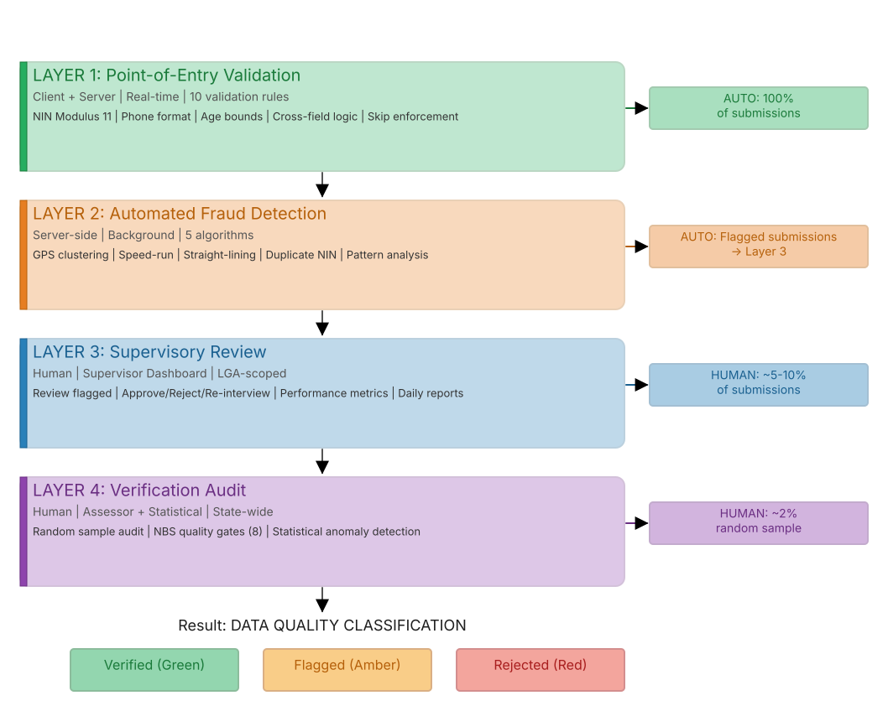
Data quality is the cornerstone of a credible labour register. A registry populated with inaccurate, duplicated, or fraudulent records would undermine the policy objectives of the Oyo State Skilled Labour Register and erode stakeholder confidence in the data. This chapter documents the four-layer data quality assurance (QA) protocol designed to ensure that every record in the registry meets minimum quality standards before being accepted as a verified entry.
The QA framework operates on the principle of progressive filtration, each layer captures a distinct category of data quality issue, and records must pass through all four layers before being accepted into the verified registry.
Figure 14.2: Four-Layer Data Quality Assurance Protocol
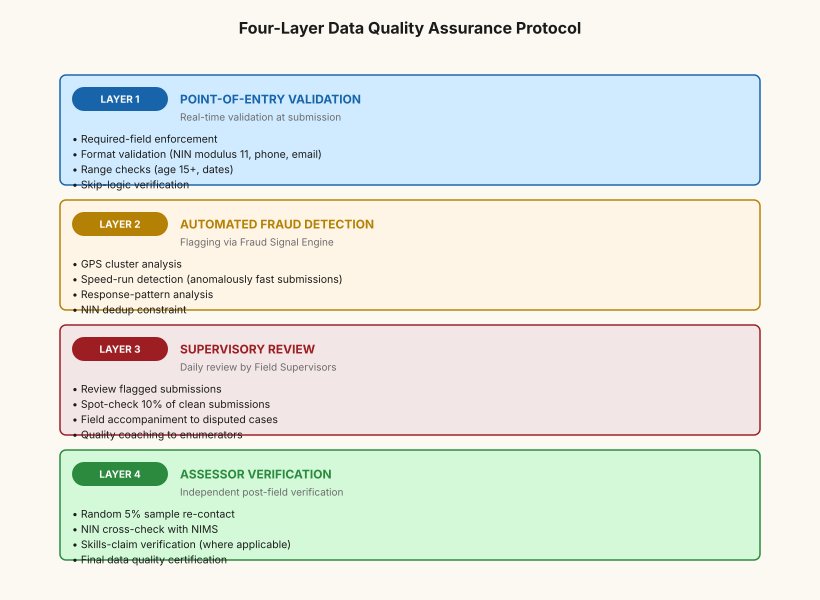
Point-of-entry validation prevents structurally invalid data from entering the system. These checks are deterministic, a submission either passes or fails, with no ambiguity.
Table 14.1: Validation Rules
| # | Rule | Implementation | Error Handling |
|---|---|---|---|
| 1 | NIN format & checksum | 11-digit numeric string; Modulus 11 checksum algorithm | Real-time error: “NIN must be exactly 11 digits” |
| 2 | NIN uniqueness | Database-level UNIQUE constraint across all submissions | Rejection: “This NIN has already been registered” |
| 3 | Phone format | Regex: 0[7-9][0-1]\d{8} (Nigerian mobile) | Real-time error with format guidance |
| 4 | Age threshold | Auto-calculated from DOB; must be ≥ 15 | Auto-computed; below-threshold respondents screened out |
| 5 | Date validity | DOB cannot be future date | Calendar picker constraint |
| 6 | Hours worked | Integer, 0–168 range | Range error with corrective guidance |
| 7 | Dependents ≤ household | Cross-field validation: Q4.3 ≤ Q4.2 | “Dependents cannot exceed household size” |
| 8 | Required field completeness | All 28 required fields must be populated | Field-level “Required” indicators |
| 9 | Skip logic integrity | Conditional fields only accepted when show-condition is met | Server-side enforcement regardless of client |
| 10 | Character limits | Bio ≤ 150 chars; Other skills ≤ 200 chars | Character counter with enforcement |
A critical design decision is the enforcement of all validation rules on both frontend and backend using shared Zod validation schemas:
Figure 14.3: Layer 1: Point-of-Entry Validation Rules
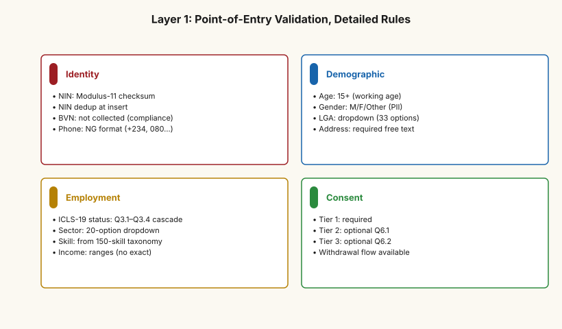
This architecture ensures that validation cannot be bypassed by submitting data directly to the API (bypassing the frontend), because the backend independently enforces the identical rules.
The fraud detection engine identifies structurally valid but potentially fraudulent submissions, data that passes all validation rules but exhibits patterns inconsistent with genuine field enumeration.
Table 14.2: Detection Algorithms
| # | Algorithm | Detection Target | Method | Threshold |
|---|---|---|---|---|
| 1 | GPS Clustering | Multiple submissions from the same location (enumerator fabrication) | Haversine distance calculation between consecutive submissions by the same enumerator | Configurable radius (default: 50m) |
| 2 | Speed-Run Detection | Implausibly fast survey completions (form-filling without genuine interviews) | Elapsed time between survey start and submission | Configurable minimum (default: 3 minutes) |
| 3 | Straight-Lining | Repetitive identical responses across consecutive submissions (pattern filling) | Shannon entropy analysis of response distributions per enumerator batch | Low-entropy threshold below expected variation |
| 4 | NIN Duplication | Same individual registered multiple times across channels | Global NIN uniqueness constraint + cross-channel deduplication query | Exact match = auto-reject |
| 5 | Temporal Anomaly | Submissions outside operational hours or in impossible sequences | Timestamp analysis against expected field operation schedules | Outside 06:00–20:00 WAT flagged for review |
Figure 14.4: Dual-Layer Validation Enforcement
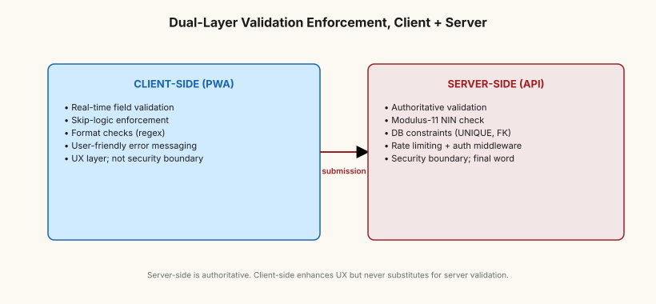
All fraud detection thresholds are configurable by Super Administrators through the platform interface, enabling calibration based on field conditions:
Table 14.3: Threshold Configuration
| Parameter | Default Value | Adjustable Range | Rationale |
|---|---|---|---|
| GPS clustering radius | 50 metres | 10–500 m | Tighter in urban areas; wider in rural areas where respondents may gather at a central location |
| Minimum completion time | 3 minutes | 1–10 min | Adjusted based on observed legitimate minimum times during pilot |
| Straight-line entropy threshold | Platform-calibrated | Adjustable | Tuned during validation exercise (Chapter 12) |
| Operational hours | 06:00–20:00 WAT | Configurable | May be extended for evening enumeration in urban markets |
Calibration approach: Thresholds were initially set based on methodological assumptions, then refined using data from the validation exercise (n=330). The validation exercise specifically tested edge cases, rapid completions by experienced enumerators, clustered submissions in market areas, and evening submissions, to establish empirically grounded baselines.
Supervisory review applies human judgement to ambiguous cases that automated systems cannot reliably resolve.
Table 14.4: Supervisor Responsibilities
| Responsibility | Method | Frequency |
|---|---|---|
| Fraud flag review | Review flagged submissions in fraud dashboard; approve, reject, or request re-interview | Daily (or as flagged) |
| Enumerator monitoring | Review per-enumerator productivity metrics (submissions/day, flag rate, completion time distribution) | Daily |
| LGA coverage tracking | Monitor geographic distribution of submissions against LGA population targets | Weekly |
| Team communication | In-app messaging to enumerators for feedback, correction, and coordination | As needed |
| Escalation | Escalate systemic quality issues to Admin/Super Admin for threshold recalibration | As identified |
Figure 14.5: Layer 2: Fraud-Detection Decision Matrix
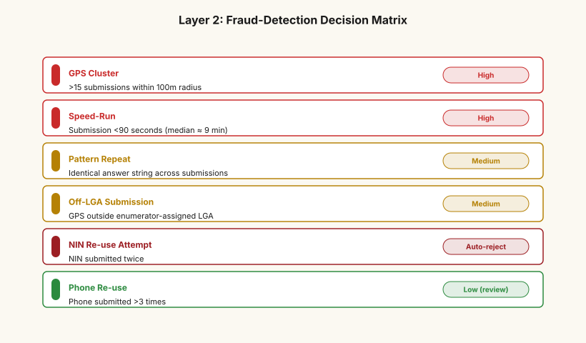
Supervisors have access to the following per-enumerator performance indicators:
Table 14.5: Performance Metrics
| Metric | Purpose | Alert Threshold |
|---|---|---|
| Submissions per day | Productivity monitoring | < 4 (below 50% target) |
| Fraud flag rate | Quality indicator | > 20% of submissions flagged |
| Average completion time | Speed-run indicator | < 4 minutes average |
| GPS location spread | Geographic coverage | All submissions within 100m radius |
| Submission time distribution | Work pattern analysis | > 30% outside operational hours |
The verification audit layer provides statistical quality assurance at the aggregate level, ensuring that the registry dataset as a whole is consistent and credible.
Table 14.6: Audit Activities
| Activity | Method | Frequency | Responsibility |
|---|---|---|---|
| Random sampling | Stratified random sample of approved submissions reviewed by Verification Assessor | Weekly (during enumeration) | Verification Assessor |
| Cross-reference checks | Phone number verification call to randomly sampled respondents | As capacity allows | Verification Assessor / Supervisor |
| Statistical consistency | Compare aggregate distributions (age, gender, employment type, education) against NBS NLFS benchmarks | Weekly | Admin / Super Admin |
| NBS benchmark alignment | Flag LGA-level distributions that deviate significantly from national survey baselines | Monthly | Admin / Government Official |
| Duplication audit | Post-hoc analysis for near-duplicate records (similar names + same LGA + similar demographics) | Monthly | Automated + manual review |
At the aggregate level, the following quality gates are monitored:
Table 14.7: Statistical Quality Gates
| # | Gate | Expected Range | Action if Breached |
|---|---|---|---|
| 1 | Gender ratio | 45–55% male (NBS baseline: 51% male) | Investigate LGA-level gender bias in enumeration |
| 2 | Employment rate | 85–95% employed (NBS baseline: ~93%) | Verify ILO cascade implementation; check skip logic |
| 3 | Self-employment rate | 65–80% (NBS baseline: ~75%) | Cross-reference with education levels and LGA profile |
| 4 | Education distribution | No single category > 40% | Investigate if enumerators defaulting to one option |
| 5 | Age distribution | Median 30–40 years (NBS working-age baseline) | Check DOB entry accuracy |
| 6 | Fraud flag rate | < 10% of total submissions | If > 10%, recalibrate thresholds or investigate systemic issue |
| 7 | NIN duplication rate | < 2% | If > 2%, investigate enumeration area overlaps |
| 8 | Completion rate | > 90% of required fields populated | If < 90%, investigate instrument or training issue |
Every record in the registry carries an internal quality classification:
Table 14.8: Data Quality Classification
| Classification | Criteria | Visibility |
|---|---|---|
| Verified | Passed all 4 layers; no unresolved flags | Full registry inclusion; eligible for marketplace |
| Pending Review | Fraud flag awaiting supervisory review | Held; not included in registry counts until resolved |
| Rejected | Failed supervisory review or NIN duplicate | Excluded from registry; retained for audit trail |
| Under Investigation | Escalated for further verification | Held; subject to additional verification activity |
The QA framework was operationally tested during the validation exercise (n=330, Chapter 12). The following calibration outcomes were achieved:
Table 14.9: Quality Assurance During Validation Exercise
| QA Component | Calibration Result |
|---|---|
| NIN validation | Modulus 11 checksum correctly identified 100% of intentionally malformed NINs |
| GPS clustering | 50m default threshold validated as appropriate for both urban market areas and rural settlement patterns |
| Speed-run detection | 3-minute minimum confirmed as appropriate; no legitimate submissions completed in under 3 minutes during validation |
| Straight-lining | Entropy threshold calibrated against intentional pattern-fill test submissions; zero false positives on legitimate data |
| Supervisor review | Fraud dashboard interface validated; average review time per flagged submission: 45 seconds |
| NIN deduplication | Successfully detected and rejected all duplicate NIN submissions across channels |
The QA framework is designed for continuous improvement through feedback loops:
Threshold recalibration: Fraud detection thresholds are adjustable based on accumulated field data. As more data flows through the system, thresholds can be tightened or loosened based on observed false positive and false negative rates.
Enumerator feedback: Patterns of fraud flags per enumerator inform targeted retraining, an enumerator with consistently high flag rates may need additional training on interview technique rather than disciplinary action.
Aggregate monitoring: Weekly statistical quality gate reviews identify emerging quality issues before they become systemic, enabling mid-course correction during the enumeration period (Gate 2, Chapter 16).
Document Reference: CHM/OSLR/2026/002 | Chapter 14 | Chemiroy Nigeria Limited
Figure 15.1: Capacity Building Programme Structure
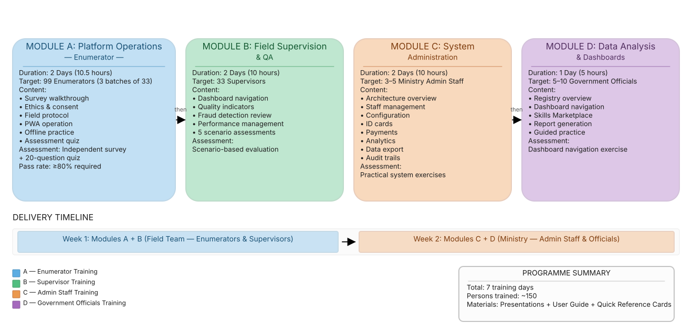
Deliverable 3 of the engagement Terms of Reference requires the Training of Ministry/Government Officials in the operation, management, and utilisation of the Oyo State Skilled Labour Register. This chapter documents the design of the comprehensive capacity building programme, a structured, role-specific training curriculum that ensures each category of platform user possesses the knowledge and skills necessary to perform their designated functions effectively.
The capacity building programme was designed during the baseline study phase, informed by:
Deliverable Status: DESIGN COMPLETE, Training delivery is scheduled for Gate 3 (Chapter 16), contingent upon mobilisation of field personnel.
The capacity building programme comprises four modules, each targeting a specific tier of the platform user hierarchy:
Figure 15.2: Capacity Building Programme, Module Structure
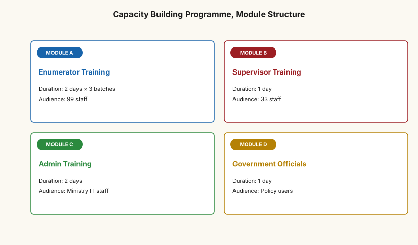
Table 15.1: Training Overview
| Parameter | Detail |
|---|---|
| Target audience | Field Enumerators (99 persons) |
| Prerequisite | Literate (minimum SSS/WAEC); proficient with smartphone operation |
| Duration | 2 days (Day 1: Classroom; Day 2: Hands-on practice) |
| Delivery format | 3 batches of 33 trainees each; instructor-led with guided practice |
| Equipment required | Configured Android smartphone per trainee; projector; internet connectivity |
| Assessment | Practical test (complete a full survey submission) + written quiz (20 questions) |
| Pass threshold | 85% (17/20 on quiz; successful submission with zero validation errors) |
Day 1: Classroom, Understanding the Registry and Survey
Table 15.2: Curriculum
| Session | Duration | Content |
|---|---|---|
| 1.1 | 45 min | Project Context: What is the OSLSR? Why is it needed? Role of enumerators in national labour statistics. Ministry mandate and government authority for enumeration |
| 1.2 | 60 min | Survey Instrument Walkthrough: Section-by-section review of all 36 questions; explanation of skip logic; ILO classification cascade (Q3.1–Q3.4); skills taxonomy overview |
| 1.3 | 45 min | Ethical Obligations: Informed consent procedure; NDPA 2023 data protection requirements; respondent confidentiality; handling refusals; identifying vulnerable respondents |
| 1.4 | 30 min | Field Protocol: Identification materials usage; community engagement etiquette; approaching respondents; safety procedures; reporting incidents |
| 1.5 | 60 min | NIN and Data Quality: Importance of accurate NIN recording; Modulus 11 validation explanation; common NIN entry errors; phone number format; GPS auto-capture explanation |
Day 2: Hands-On Practice
Table 15.3: Curriculum
| Session | Duration | Content |
|---|---|---|
| 2.1 | 45 min | Device Setup: PWA installation; Service Worker caching; verifying offline capability; understanding the auto-save indicator; battery management |
| 2.2 | 90 min | Guided Survey Practice: Instructor-led completion of 3 full surveys (employed business owner, unemployed job-seeker, outside labour force), covering all conditional paths |
| 2.3 | 60 min | Offline Operations: Airplane mode practice; completing survey offline; reconnecting and verifying synchronisation; understanding the offline queue indicator |
| 2.4 | 45 min | Troubleshooting Common Issues: No GPS signal; slow network; app crash recovery; battery depletion mid-survey; respondent changes answer mid-survey |
| 2.5 | 60 min | Assessment: Complete one full survey independently (practical); 20-question written quiz covering instrument, ethics, and procedures |
Table 15.4: Assessment Rubric
| Component | Weight | Pass Criteria |
|---|---|---|
| Written quiz (20 MCQs) | 40% | ≥ 17/20 correct (85%) |
| Practical test, survey completion | 40% | Zero validation errors; all required fields completed; correct skip logic path |
| Field protocol knowledge | 20% | Demonstrates consent procedure; handles hypothetical refusal correctly |
| Overall pass threshold | , | 85% weighted aggregate |
Table 15.5: Training Overview
| Parameter | Detail |
|---|---|
| Target audience | Field Supervisors (33 persons) |
| Prerequisite | Management experience; familiarity with government field programmes; minimum OND/NCE |
| Duration | 2 days (Day 1: Supervisory functions; Day 2: Fraud detection and team management) |
| Delivery format | Single cohort; instructor-led with dashboard demonstrations |
| Assessment | Scenario-based evaluation, respond to 5 simulated field situations |
| Pass threshold | 85% (correct handling of ≥ 4/5 scenarios) |
Day 1: Supervisory Platform Functions
Table 15.6: Curriculum
| Session | Duration | Content |
|---|---|---|
| 1.1 | 45 min | Supervisor Role Overview: LGA-scoped access; team of 3 enumerators; daily review responsibilities; escalation procedures |
| 1.2 | 60 min | Team Dashboard: Viewing enumerator submissions; monitoring daily progress; identifying underperforming enumerators; using the in-app messaging system |
| 1.3 | 60 min | Data Quality Indicators: Understanding submission counts, completion rates, average completion times; interpreting per-enumerator metrics |
| 1.4 | 45 min | LGA Coverage Management: Monitoring geographic distribution of submissions; ensuring ward-level coverage; coordinating enumerator deployment |
| 1.5 | 30 min | Reporting Upward: Daily status reporting to Admin; weekly summary preparation; communicating field challenges |
Day 2: Fraud Detection & Team Management
Table 15.7: Curriculum
| Session | Duration | Content |
|---|---|---|
| 2.1 | 60 min | Fraud Detection Dashboard: Understanding flag types (GPS clustering, speed-run, straight-lining); reviewing flagged submissions; approve/reject/re-interview workflow |
| 2.2 | 60 min | Interpreting Fraud Indicators: GPS clustering in market areas (legitimate) vs. fabrication (illegitimate); fast completions by experienced enumerators vs. speed-running; contextual judgement |
| 2.3 | 45 min | Enumerator Performance Management: Coaching underperformers; addressing quality issues constructively; identifying training needs; documenting performance concerns |
| 2.4 | 45 min | Field Incident Management: Respondent complaints; community access issues; device failures; connectivity problems; security concerns |
| 2.5 | 90 min | Scenario Assessment: 5 simulated field situations requiring supervisory judgement (GPS cluster in market area, enumerator with 40% flag rate, evening submission pattern, device failure during active survey, community leader refusing access) |
Table 15.8: Training Overview
| Parameter | Detail |
|---|---|
| Target audience | Ministry-designated Admin and Super Admin staff (3–5 persons) |
| Prerequisite | Computer literacy; basic understanding of database concepts; Ministry staff designation |
| Duration | 2 days (intensive hands-on at Data Centre) |
| Delivery format | Small group instruction at on-premises Data Centre workstations |
| Assessment | Live system administration tasks on training environment |
| Pass threshold | 85% (successful completion of all core tasks) |
Day 1: System Administration
Table 15.9: Curriculum
| Session | Duration | Content |
|---|---|---|
| 1.1 | 45 min | Platform Architecture Overview: How the system works (simplified); Data Centre → Cloud → Database; what happens when a survey is submitted |
| 1.2 | 60 min | Staff Management: Creating user accounts; assigning roles; activating/deactivating staff; resetting credentials; LGA assignment |
| 1.3 | 60 min | Form & Configuration Management: Viewing active survey version; understanding platform settings; configuring fraud detection thresholds |
| 1.4 | 60 min | ID Card Generation: Generating staff ID cards; understanding QR verification; batch printing procedures |
| 1.5 | 45 min | Payment Management: Recording staff payments; uploading bank references; handling payment disputes; generating payment reports |
Day 2: Reporting & Monitoring
Table 15.10: Curriculum
| Session | Duration | Content |
|---|---|---|
| 2.1 | 60 min | Dashboard Analytics: Navigating the admin dashboard; understanding real-time submission counts; interpreting LGA distribution charts; time-series analysis |
| 2.2 | 60 min | Data Export: Generating CSV and PDF exports; applying filters (LGA, date, status, occupation); understanding export audit trail; data handling responsibilities |
| 2.3 | 45 min | System Health Monitoring: Understanding CPU, RAM, and disk metrics; database performance indicators; interpreting alert notifications; when to escalate technical issues |
| 2.4 | 45 min | Audit Trail Review: Navigating audit logs; understanding logged actions; using audit data for accountability reviews |
| 2.5 | 60 min | Practical Assessment: Perform all core administrative tasks on training environment (create user, generate ID card, export data, review audit log, interpret dashboard) |
Table 15.11: Training Overview
| Parameter | Detail |
|---|---|
| Target audience | Government Officials, Policy Users, Senior Ministry staff (5–10 persons) |
| Prerequisite | Basic computer literacy |
| Duration | 1 day (half-day briefing + half-day guided practice) |
| Delivery format | Briefing/demonstration format at Ministry premises |
| Assessment | Navigate dashboard and generate one report independently |
| Pass threshold | 80% |
Table 15.12: Curriculum
| Session | Duration | Content |
|---|---|---|
| 1.1 | 60 min | Registry Overview: What the register contains; how data was collected; data quality assurance measures; what the numbers mean |
| 1.2 | 60 min | Dashboard Navigation: Statewide statistics; LGA drill-down; employment distribution charts; skills inventory; demographic breakdowns |
| 1.3 | 45 min | Skills Marketplace: How the marketplace works; employer perspective; searching for workers by trade, LGA, and experience; contact reveal mechanism |
| 1.4 | 45 min | Report Generation: Generating standard reports; applying filters; exporting data for policy analysis; interpreting exported datasets |
| 1.5 | 30 min | Guided Practice: Each participant navigates the dashboard, generates a filtered export, and interprets one LGA summary independently |
The following training materials will be developed and provided:
Table 15.13: Training Materials
| # | Material | Format | Audience |
|---|---|---|---|
| 1 | Enumerator Field Guide | Printed booklet (A5) + digital PDF | Enumerators |
| 2 | Survey Instrument Quick Reference | Laminated card (front: question flow; back: skip logic) | Enumerators |
| 3 | Supervisor Operations Manual | Digital PDF | Supervisors |
| 4 | System Administrator Guide | Digital PDF + printed manual | Admin staff |
| 5 | Dashboard User Guide | Digital PDF | Government Officials |
| 6 | Training Slide Decks | PowerPoint/PDF per module | Trainers |
| 7 | Assessment Question Bank | Internal document | Trainers |
| 8 | Video Walkthroughs | Screen recordings of key platform workflows | All roles |
The training delivery schedule is designed to minimise disruption while ensuring all personnel are trained before field deployment:
Figure 15.3: Capacity Building Schedule, Pre-Fieldwork
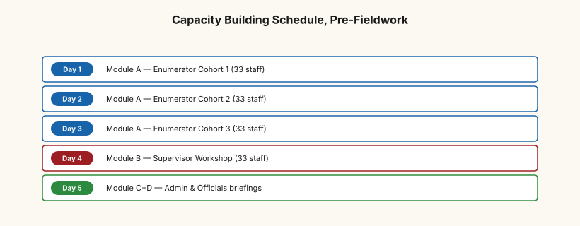
Scheduling rationale: Supervisors are trained first (Week 1, Mon-Tue) so they can assist with enumerator training as teaching assistants. Modules C and D are delivered during or after enumeration commencement, when real production data is available for training exercises, providing a more meaningful learning experience than synthetic training data.
Table 15.14: Assessment Framework
| Module | Assessment Type | Pass Threshold | Remediation |
|---|---|---|---|
| A: Enumerator | Written quiz + practical test | 85% | Re-test after additional coaching; max 2 attempts |
| B: Supervisor | Scenario-based evaluation | 85% (4/5 scenarios) | Additional 1-day coaching session |
| C: Admin | Live system tasks | 85% | Paired mentoring with consultant |
| D: Officials | Dashboard navigation | 80% | Follow-up 1-on-1 demonstration |
All training attendance, assessment results, and certification records will be maintained as part of the engagement documentation and included in the Completion Report (Gate 3, Chapter 16).
The capacity building programme includes a 30-day post-training support period following field deployment:
Table 15.15: Post-Training Support
| Support Channel | Availability | Target |
|---|---|---|
| In-app messaging | 24/7 (asynchronous) | Enumerators ↔ Supervisors |
| WhatsApp support group | During operational hours | Supervisors ↔ Consultant |
| Phone support | During operational hours | Admin ↔ Consultant |
| On-site visit | As required | Critical issues requiring in-person resolution |
The capacity building programme is designed for full knowledge transfer, ensuring that the Ministry can independently operate, maintain, and utilise the OSLSR platform after the engagement concludes:
Table 15.16: Knowledge Transfer Strategy
| Knowledge Area | Transfer Mechanism | Recipient |
|---|---|---|
| Day-to-day operations | Module C + documented procedures | Ministry Admin |
| Data interpretation | Module D + dashboard user guide | Government Officials |
| Field operations | Module A + B + field guide | Reusable for future enumerator cohorts |
| Technical maintenance | System documentation + admin guide | Ministry IT / designated Admin |
| Troubleshooting | FAQ document + support escalation procedures | All trained personnel |
The goal is zero dependency on the Consultant for routine platform operations after the 30-day post-training support period concludes.
Document Reference: CHM/OSLR/2026/002 | Chapter 15 | Chemiroy Nigeria Limited
Figure 16.1: Implementation Stage Gate Overview
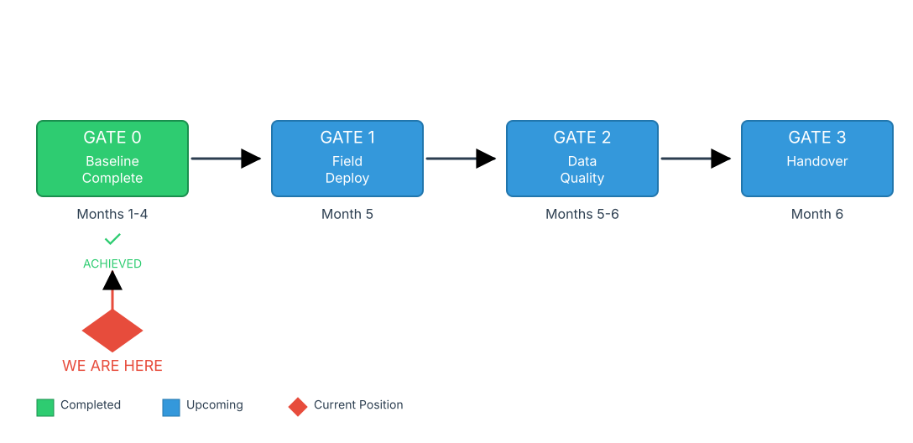
This chapter presents the implementation roadmap for the completion of the Oyo State Skilled Labour Register, structured around a Stage Gate methodology, a structured decision-making framework that divides the project into distinct phases, each concluded by a formal decision point (gate) where progress is assessed against predefined criteria before authorisation to proceed to the next phase.
The Stage Gate approach ensures disciplined project governance, prevents commitment of resources ahead of evidence, and provides clear checkpoints for the commissioning authority to evaluate progress and make informed decisions.
Figure 16.2: Implementation Stage Gates Overview
Gate 0 encompasses all preparatory work required before field deployment, including infrastructure establishment, methodology design, instrument validation, and platform development.
Table 16.1: Deliverables and Status
| # | Deliverable | Status | Evidence |
|---|---|---|---|
| G0-1 | Physical Data Centre established at Ministry premises | ✓ | 3 workstations operational, Airtel 5G connectivity active (Ch. 12) |
| G0-2 | Cloud infrastructure deployed and monitored | ✓ | Production server operational, daily backups active (Ch. 12) |
| G0-3 | Survey instrument designed and validated (v3.0) | ✓ | 36 questions, ILO ICLS-19 aligned, 3 review cycles (Ch. 10) |
| G0-4 | Occupational skills taxonomy complete | ✓ | 150 skills, 20 sectors, ISCO-08 mapped (Ch. 11) |
| G0-5 | OSLSR platform developed and deployed | ✓ | 3,564 tests, OWASP compliant, 15 capabilities operational (Ch. 13) |
| G0-6 | Validation exercise complete (n=330) | ✓ | All 33 LGAs covered, NBS benchmarks aligned (Ch. 15–16) |
| G0-7 | Data quality framework operational | ✓ | 4-layer QA, fraud detection calibrated (Ch. 17) |
| G0-8 | Capacity building curriculum designed | ✓ | 8 role-specific modules developed (Ch. 18) |
| G0-9 | Baseline Study Report submitted | ✓ | This document |
Table 16.2: Gate 0 Decision
| Criterion | Threshold | Result | Decision |
|---|---|---|---|
| Data Centre operational | Hardware + connectivity functional | ✓ Met | PROCEED |
| Platform tested | >3,000 automated tests passing | ✓ 3,564 | PROCEED |
| Instrument validated | All 33 LGAs covered | ✓ 330 responses | PROCEED |
| Security assessment | A- security posture (state-government-grade) | ✓ all categories | PROCEED |
| Methodology documented | Baseline report submitted | ✓ This document | PROCEED |
Gate 0 Status: PASSED, Authorised to proceed to Gate 1
Gate 1 encompasses the mobilisation and deployment of field enumeration teams across all 33 LGAs. This gate cannot be entered until the requisite human and material resources are mobilised.
Table 16.3: Prerequisites (Resources Required)
| # | Resource | Specification | Quantity | Purpose |
|---|---|---|---|---|
| R-1 | Field Enumerators | Literate adults with smartphone proficiency, LGA-resident preferred | 99 (3 per LGA × 33 LGAs) | Door-to-door data collection |
| R-2 | Field Supervisors | Experienced coordinators, management capability | 33 (1 per LGA) | Team coordination, quality oversight, fraud alert review |
| R-3 | Mobile Devices | Android 8.0+, 2GB RAM, 32GB storage, GPS, camera | 132 | Data collection hardware |
| R-4 | SIM Cards with Data | Minimum 2GB/month data allocation per device | 132 | Data synchronisation |
| R-5 | Transportation Allowance | Coverage for intra-LGA travel | 132 persons × 30 days | Field mobility |
| R-6 | Communication Airtime | Voice and data for team coordination | 132 persons × 30 days | In-app messaging, voice calls |
| R-7 | Identification Materials | Branded vests, ID cards, introductory letters from Ministry | 132 sets | Field access and legitimacy |
| R-8 | Sensitisation Materials | Flyers, posters, community announcement templates | 33 LGA sets | Community engagement |
| R-9 | Training Venue | Conference/meeting room with projector, internet | 1 (central) + 5 (zonal) | Enumerator and supervisor training |
Table 16.4: Gate 1 Activities
| Activity | Duration | Dependency |
|---|---|---|
| Enumerator recruitment and screening | 1 week | R-1 |
| Supervisor recruitment and screening | 1 week | R-2 |
| Classroom training, Enumerators (centralised) | 3 days | R-1, R-9, Ch. 18 curriculum |
| Classroom training, Supervisors (centralised) | 2 days | R-2, R-9, Ch. 18 curriculum |
| Device procurement and configuration | 1 week (parallel) | R-3, R-4 |
| Field pilot, 3 selected LGAs | 3 days | All above |
| Pilot review and final calibration | 2 days | Pilot data |
| Full 33-LGA deployment authorisation | 1 day | All gate criteria met |
Table 16.5: Gate 1 Proceed/Hold/Stop Criteria
| Criterion | Proceed | Hold | Stop |
|---|---|---|---|
| Enumerator recruitment | ≥90 of 99 recruited and trained | 70–89 recruited | <70 recruited |
| Supervisor recruitment | ≥30 of 33 recruited and trained | 25–29 recruited | <25 recruited |
| Devices available | ≥120 of 132 configured | 100–119 configured | <100 configured |
| Training completion | ≥85% pass rate on assessment | 70–84% pass rate | <70% pass rate |
| Pilot success | ≥90% submission success rate in 3 pilot LGAs | 75–89% success | <75% success |
| Logistics confirmed | Transport + airtime + materials for all 33 LGAs | 25–32 LGAs covered | <25 LGAs covered |
Gate 2 occurs mid-way through the field enumeration period. It assesses data quality, identifies and resolves field issues, and authorises continuation or course correction.
Table 16.6: Gate 2 Activities
| Activity | Timing | Method |
|---|---|---|
| Data quality review, first 2 weeks of submissions | Week 3 of enumeration | Automated fraud detection + supervisory review |
| Submission volume assessment by LGA | Weekly | Platform analytics dashboard |
| Enumerator performance review | Weekly | Productivity metrics per enumerator |
| Respondent complaint/feedback review | Ongoing | Ministry coordination |
| Mid-enumeration calibration | If required | Threshold adjustments, additional training |
Table 16.7: Gate 2 Proceed/Hold/Stop Criteria
| Criterion | Proceed | Hold | Stop |
|---|---|---|---|
| Fraud flag rate | <10% of submissions | 10–20% | >20% (systemic quality issue) |
| Submission volume | ≥70% of target per LGA | 50–69% | <50% (mobilisation failure) |
| Data completeness | ≥95% of required fields populated | 90–94% | <90% (instrument issue) |
| NIN duplication rate | <2% | 2–5% | >5% (enumeration overlap) |
| Enumerator activity | ≥90% active daily | 75–89% | <75% (attrition/motivation) |
Gate 3 is the final phase, encompassing data analysis, registry population confirmation, capacity building delivery (Deliverable 3), and formal project handover to the Ministry.
Table 16.8: Gate 3 Activities
| Activity | Duration | Deliverable |
|---|---|---|
| Field enumeration completion and final data sync | 2 days | All offline submissions uploaded |
| Data cleaning and quality reconciliation | 3 days | Clean registry dataset |
| Registry population verification | 2 days | Total registrant count and LGA distribution confirmed |
| Ministry official training, Super Admin/Admin | 2 days | Deliverable 3 (partial) |
| Ministry official training, Supervisory roles | 1 day | Deliverable 3 (partial) |
| Ministry official training, Reporting and Analytics | 1 day | Deliverable 3 (complete) |
| Platform documentation and user manuals delivery | 1 day | Operational documentation |
| Formal project handover ceremony | 1 day | Signed handover document |
| Completion Report submission | 3 days | Final engagement deliverable |
Table 16.9: Gate 3 Acceptance Criteria
| # | Criterion | Threshold |
|---|---|---|
| 1 | Registry populated with verified respondent records | Minimum target TBD by Ministry |
| 2 | All 33 LGAs represented in registry data | 100% LGA coverage |
| 3 | Ministry officials trained and assessed | ≥85% pass rate on competency assessment |
| 4 | Platform operational documentation delivered | Complete user manual + admin guide |
| 5 | Data backup verified and disaster recovery tested | Successful restore from latest backup |
| 6 | Completion Report accepted by Ministry | Formal written acceptance |
Figure 16.3: Implementation Timeline, Gantt View
The project’s critical path, the sequence of activities that determines the minimum project duration, is:
Gate 0 → Gate 1 transition (CURRENT BOTTLENECK): Field deployment cannot commence until enumerator recruitment, device procurement, and logistics are mobilised. This transition is resource-dependent, not methodology-dependent.
Field enumeration duration: The planned 30-day enumeration period across all 33 LGAs is the longest single activity remaining.
Training delivery: Ministry official training requires completion of enumeration (to train using real production data).
The Consultant notes that all methodology-dependent activities (Gates 0) have been completed on schedule. The remaining project timeline is contingent upon the timely mobilisation of field resources as detailed in Section 16.4.2.
Document Reference: CHM/OSLR/2026/002 | Chapter 16 | Chemiroy Nigeria Limited
Figure 17.1: Risk Heat Map, Probability × Impact Matrix
This chapter presents the formal Risk Register for the remaining phases of the Oyo State Skilled Labour Register project. The risk register was developed using a structured Probability × Impact assessment methodology, with each identified risk assigned a severity classification, designated owner, and specific mitigation strategy.
The risk register is a living document, it will be updated at each Stage Gate review (Chapter 16) as risks materialise, are mitigated, or as new risks emerge.
Table 17.1: Probability Scale
| Rating | Probability | Description |
|---|---|---|
| 1 | Very Low (< 10%) | Unlikely to occur under normal circumstances |
| 2 | Low (10–25%) | Could occur but only under specific conditions |
| 3 | Medium (25–50%) | Reasonable possibility of occurrence |
| 4 | High (50–75%) | More likely than not to occur |
| 5 | Very High (> 75%) | Expected to occur without intervention |
Table 17.2: Impact Scale
| Rating | Impact | Description |
|---|---|---|
| 1 | Negligible | Minimal effect on project; absorbed within normal operations |
| 2 | Minor | Localised effect; manageable within existing resources |
| 3 | Moderate | Noticeable impact on timeline or quality; requires management attention |
| 4 | Major | Significant impact on project delivery, data quality, or stakeholder confidence |
| 5 | Critical | Project-threatening; could result in failure to deliver or fundamental compromise of registry integrity |
Figure 17.2: Risk-Assessment Methodology, Probability × Impact
Table 17.3: Category A: Resource Mobilisation Risks
| ID | Risk | Prob | Impact | Severity | Owner | Mitigation | Contingency |
|---|---|---|---|---|---|---|---|
| R-01 | Delayed mobilisation of field personnel, Recruitment of 132 field staff delayed beyond planned timeline | 4 | 5 | CRITICAL (20) | Ministry / Consultant | Early engagement with Ministry HR; pre-identification of candidate pools through LGA education offices and NYSC networks; streamlined recruitment criteria | Phased deployment, begin with 11 priority LGAs while recruiting remaining staff |
| R-02 | Delayed procurement of mobile devices, 132 Android devices not available when field staff are ready | 3 | 4 | HIGH (12) | Ministry / Procurement | Early procurement initiation; bulk purchase from verified suppliers; specification flexibility (any Android 8.0+ device with required features) | Temporary use of enumerator personal devices (with data allowance compensation) for initial deployment |
| R-03 | Insufficient funding for field logistics, Transport allowances, airtime, and materials budget not released | 3 | 5 | HIGH (15) | Ministry | Clear budget breakdown submitted with this report (Chapter 19); phased budget release aligned with Stage Gates | Prioritise high-population LGAs; reduce from 30-day to 20-day enumeration period |
Table 17.4: Category B: Field Operations Risks
| ID | Risk | Prob | Impact | Severity | Owner | Mitigation | Contingency |
|---|---|---|---|---|---|---|---|
| R-04 | Community resistance to enumeration, Respondents refuse to participate due to suspicion of government data collection | 3 | 3 | MEDIUM (9) | Supervisor / Consultant | Advance sensitisation programme (Chapter 19, Rec. 4); Ministry introductory letters; branded identification; community leader engagement | Deploy community liaison persons from within the LGA; reschedule to post-sensitisation period |
| R-05 | Enumerator attrition during field period, Enumerators abandon the exercise before completion | 3 | 3 | MEDIUM (9) | Supervisor | Competitive remuneration; clear payment schedule; team morale management; performance recognition | Standby pool of 10% additional trained reserves; redistribute workload among remaining enumerators |
| R-06 | Poor network connectivity in rural LGAs, Inability to synchronise data from remote areas | 2 | 2 | LOW (4) | Consultant | PWA offline capability (7-day autonomous operation); 2G/3G sufficient for sync; weekly sync schedule for remote areas | Supervisor collects devices weekly for centralised sync at nearest connectivity point |
| R-07 | Device failure or loss in field, Smartphones damaged, stolen, or rendered inoperable | 3 | 2 | MEDIUM (6) | Supervisor | Protective cases provided; device insurance; enumerator accountability protocol; regular backup via sync | Spare device pool (10% reserve); temporary reassignment to co-located enumerator device |
| R-08 | Adverse weather during enumeration, Rainy season disrupts field operations | 3 | 2 | MEDIUM (6) | Supervisor | Scheduling around known rainy patterns; flexible daily scheduling; waterproof device cases | Extension of enumeration period; indoor enumeration at markets and community centres |
Table 17.5: Category C: Data Quality Risks
| ID | Risk | Prob | Impact | Severity | Owner | Mitigation | Contingency |
|---|---|---|---|---|---|---|---|
| R-09 | Enumerator data fabrication, Field staff submit fictitious records to inflate productivity | 3 | 4 | HIGH (12) | Consultant / Supervisor | Automated fraud detection (GPS clustering, speed-run, straight-lining); per-enumerator monitoring; configurable thresholds | Immediate suspension of flagged enumerators; re-interview requirement for all flagged submissions; termination for confirmed fabrication |
| R-10 | NIN transcription errors, Respondents provide incorrect NIN leading to invalid records | 3 | 3 | MEDIUM (9) | Enumerator | Modulus 11 real-time validation catches mathematical errors; enumerator training emphasis on NIN accuracy; re-entry prompt on failure | Post-collection NIN verification batch (if NIMC API access becomes available) |
| R-11 | Respondent self-selection bias, Registry over-represents certain demographics or skills categories | 3 | 3 | MEDIUM (9) | Consultant / Supervisor | Stratified enumeration targets per LGA; ward-level coverage monitoring; active pursuit of underrepresented demographics | Post-hoc weighting adjustments; supplementary targeted enumeration in underrepresented areas |
| R-12 | High fraud flag rate overwhelming supervisory capacity, More than 20% of submissions flagged, exceeding review capacity | 2 | 3 | MEDIUM (6) | Consultant | Threshold calibration from validation exercise; targeted retraining for high-flag enumerators | Dynamic threshold adjustment; additional verification assessor capacity; batch review triage |
Table 17.6: Category D: Technical & Infrastructure Risks
| ID | Risk | Prob | Impact | Severity | Owner | Mitigation | Contingency |
|---|---|---|---|---|---|---|---|
| R-13 | Server downtime during peak enumeration, Cloud infrastructure experiences outage during high submission volume | 2 | 3 | MEDIUM (6) | Consultant | 99.9% uptime SLA; automated monitoring and alerting; tested disaster recovery (< 1hr RTO) | PWA offline capability buffers all submissions locally; sync upon restoration; zero data loss |
| R-14 | Data Centre connectivity disruption, Airtel 5G/4G service disruption at Ministry premises | 2 | 2 | LOW (4) | Ministry / Consultant | 5G/4G automatic fallback; ODU battery backup (5–6 hours); data entry can continue via cloud from any internet source | Temporary mobile hotspot; field laptop (Workstation 3) can operate from alternative location |
| R-15 | Database capacity exhaustion, Registry growth exceeds allocated storage | 1 | 3 | LOW (3) | Consultant | Current VPS capacity supports 100,000+ records with substantial headroom; monitoring alerts at 80% capacity | Vertical scaling (upgrade VPS); database archiving of completed records |
| R-16 | Security breach or data leakage, Unauthorised access to PII data | 1 | 5 | MEDIUM (5) | Consultant | 6-layer defence-in-depth (Chapter 11); independently assessed at A- security posture; immutable audit logs; bcrypt+JWT+TLS; RBAC enforcement | Incident response: isolate affected component; forensic audit via immutable logs; breach notification per NDPA 2023 |
Table 17.7: Category E: Stakeholder & Governance Risks
| ID | Risk | Prob | Impact | Severity | Owner | Mitigation | Contingency |
|---|---|---|---|---|---|---|---|
| R-17 | Change in Ministry leadership or priorities, Administrative transition disrupts project continuity | 2 | 4 | HIGH (8) | Ministry / Consultant | Comprehensive documentation (this report); platform operates independently of personnel changes; training of multiple Ministry staff (not single-point dependency) | Briefing package for incoming leadership; platform continues operating; data preserved |
| R-18 | Scope expansion requests during enumeration, Stakeholders request additional data fields or survey modifications mid-enumeration | 3 | 3 | MEDIUM (9) | Consultant | Instrument finalised and versioned (v3.0); change control process requiring Stage Gate review before implementation | Minor additions captured in “Other skills” free text field; major changes deferred to post-enumeration update cycle |
| R-19 | Inter-LGA coordination failure, Poor coordination between LGA authorities and field teams | 2 | 3 | MEDIUM (6) | Supervisor / Ministry | Ministry introductory letters to all 33 LGA chairmen; advance notification schedule; designated LGA liaison per supervisor | Consultant direct engagement with resistant LGA leadership; Ministry intervention |
| R-20 | Insufficient respondent participation, Target submission volumes not achieved within enumeration period | 3 | 3 | MEDIUM (9) | Supervisor / Consultant | Community sensitisation; multi-channel collection (field + public self-registration); marketplace incentive (voluntary participation in skills marketplace) | Extend enumeration period; intensify public self-registration promotion; targeted outreach in low-participation areas |
| R-21 | Political and stakeholder-environment shifts, Broader political dynamics affecting State operations during the engagement period | 2 | 3 | MEDIUM (6) | Ministry / Consultant | The engagement is sensitive to the broader political and stakeholder environment in which the State operates. The Consultant maintains an internal monitoring posture and will report material developments to the Ministry in the ordinary course | Programme calendar adapted to State election cycles or governance transitions where applicable; documentation packages enable continuity across personnel changes |
Figure 17.3: Risk Register Summary, Top Risks by Severity
Table 17.8: Risk Ownership Matrix
| Owner | Risks Owned | Role in Mitigation |
|---|---|---|
| Ministry | R-01, R-02, R-03, R-14, R-17, R-19 | Resource mobilisation, funding release, inter-agency coordination |
| Consultant | R-09, R-11, R-13, R-15, R-16, R-18 | Technical controls, methodology calibration, platform operation |
| Supervisor | R-04, R-05, R-07, R-08, R-12, R-19, R-20 | Field management, team coordination, quality oversight |
| Joint | R-06, R-10 | Shared responsibility for field data quality and connectivity |
Table 17.9: Risk Review Schedule
| Review Point | Gate | Scope |
|---|---|---|
| Pre-deployment review | Gate 1 entry | All 20 risks, focus on Category A (resource mobilisation) |
| Mid-enumeration review | Gate 2 | Categories B, C, D, focus on field operations and data quality |
| Pre-handover review | Gate 3 entry | All risks, focus on residual risks for ongoing operations |
| Post-handover | Post-Gate 3 | Transfer of risk ownership to Ministry for ongoing registry operation |
The risk register reveals a structural pattern that is significant for project governance: the highest-severity risks (R-01, R-02, R-03) are all in Category A (Resource Mobilisation) and are owned primarily by the Ministry. The Consultant-owned risks (Categories C and D) are predominantly MEDIUM or LOW severity, reflecting the maturity of the technical and methodological infrastructure established during the baseline study phase.
This pattern confirms that the project’s critical path runs through resource mobilisation, not methodology or technology. The technical, methodological, and data quality foundations are in place; the remaining risks are predominantly operational and logistical in nature.
Document Reference: CHM/OSLR/2026/002 | Chapter 17 | Chemiroy Nigeria Limited
This chapter establishes the Monitoring and Evaluation (M&E) Framework for the Oyo State Skilled Labour Register, comprising a set of Key Performance Indicators (KPIs) that provide quantifiable measures of project progress, data quality, and registry outcomes. The KPI framework enables objective assessment at each Stage Gate review (Chapter 16) and supports evidence-based decision-making throughout the remaining project phases.
The framework is structured across five KPI domains, with each indicator assigned a data source, measurement frequency, target value, and alert threshold that triggers management attention.
Figure 18.1: KPI Framework, Five Domains × 34 Indicators
These indicators track the volume and geographic distribution of data collection.
Table 18.1: Domain 1: Enumeration Progress KPIs
| # | KPI | Definition | Target | Alert Threshold | Frequency | Data Source |
|---|---|---|---|---|---|---|
| EP-1 | Daily submission rate (state) | Total submissions received per day across all channels | ≥ 800/day | < 500/day | Daily | Platform analytics |
| EP-2 | Daily submission rate (per enumerator) | Average submissions per active enumerator per day | ≥ 8/day | < 5/day | Daily | Per-user analytics |
| EP-3 | Cumulative registry count | Running total of verified registry entries | 23,760 by Day 30 | < 70% of pro-rata target | Daily | Registry database |
| EP-4 | LGA coverage (% of 33 LGAs active) | Percentage of LGAs with ≥ 1 submission in current week | 100% | < 90% (3+ LGAs inactive) | Weekly | Platform analytics |
| EP-5 | LGA equity ratio | Ratio of highest to lowest LGA submission count | < 5:1 | > 8:1 | Weekly | Platform analytics |
| EP-6 | Self-registration volume | Public web self-registrations (non-enumerator) | Supplementary (no target) | , | Weekly | Channel analytics |
| EP-7 | Offline sync backlog | Number of submissions pending sync from offline devices | < 50 statewide | > 200 statewide | Daily | Sync queue |
These indicators assess the integrity and reliability of collected data.
Table 18.2: Domain 2: Data Quality KPIs
| # | KPI | Definition | Target | Alert Threshold | Frequency | Data Source |
|---|---|---|---|---|---|---|
| DQ-1 | Fraud flag rate | Percentage of submissions flagged by automated fraud detection | < 10% | > 15% | Daily | Fraud detection engine |
| DQ-2 | NIN duplication rate | Percentage of submissions rejected for duplicate NIN | < 2% | > 5% | Daily | Database constraint |
| DQ-3 | Field completeness rate | Percentage of required fields populated across all submissions | > 98% | < 95% | Daily | Validation layer |
| DQ-4 | Validation error rate | Percentage of submission attempts failing validation (corrected and resubmitted) | < 5% | > 10% | Daily | Validation logs |
| DQ-5 | Supervisory review completion | Percentage of flagged submissions reviewed within 48 hours | > 90% | < 75% | Daily | Fraud review queue |
| DQ-6 | Fraud flag resolution rate | Percentage of reviewed flags resulting in approval (vs. rejection) | 70–90% approval | < 60% or > 95% | Weekly | Fraud review outcomes |
| DQ-7 | Gender distribution | Male/female ratio across all submissions | 45–55% male | Outside 40–60% range | Weekly | Demographic analytics |
| DQ-8 | NBS benchmark alignment | Key indicators (employment rate, self-employment rate, education distribution) compared to NBS NLFS baselines | Within ± 10% of NBS | Outside ± 15% of NBS | Weekly | Statistical analysis |
These indicators monitor the operational effectiveness of field teams.
Table 18.3: Domain 3: Field Operations KPIs
| # | KPI | Definition | Target | Alert Threshold | Frequency | Data Source |
|---|---|---|---|---|---|---|
| FO-1 | Enumerator activity rate | Percentage of trained enumerators submitting ≥ 1 record per day | > 90% | < 80% | Daily | Per-user analytics |
| FO-2 | Enumerator attrition rate | Cumulative percentage of enumerators who have ceased activity | < 5% | > 10% | Weekly | HR records + activity |
| FO-3 | Average completion time | Mean survey completion time across all submissions | 7–12 min | < 4 min or > 20 min | Daily | Submission timestamps |
| FO-4 | Supervisor review rate | Number of flagged submissions reviewed per supervisor per day | ≥ 10/day | < 5/day | Daily | Fraud dashboard |
| FO-5 | Device utilisation rate | Percentage of deployed devices with active submissions | > 90% | < 80% | Weekly | Device analytics |
| FO-6 | Team messaging engagement | Percentage of supervisors using in-app messaging for team coordination | > 80% | < 60% | Weekly | Messaging analytics |
These indicators ensure the technology infrastructure supports operational needs.
Table 18.4: Domain 4: Platform Performance KPIs
| # | KPI | Definition | Target | Alert Threshold | Frequency | Data Source |
|---|---|---|---|---|---|---|
| PP-1 | Application uptime | Percentage of time the platform is accessible and responsive | > 99.5% | < 99% | Continuous | Health monitoring |
| PP-2 | API response time (p95) | 95th percentile response time for API requests | < 500ms | > 1000ms | Continuous | prom-client metrics |
| PP-3 | Database query latency (p95) | 95th percentile database query execution time | < 100ms | > 250ms | Continuous | Database metrics |
| PP-4 | Server CPU utilisation | Average CPU usage on production server | < 60% | > 80% | Continuous | System monitoring |
| PP-5 | Server memory utilisation | Average RAM usage on production server | < 70% | > 85% | Continuous | System monitoring |
| PP-6 | Backup success rate | Percentage of daily automated backups completed successfully | 100% | Any failure | Daily | Backup job logs |
| PP-7 | SSL certificate validity | Days until SSL certificate expiry | > 30 days | < 14 days | Daily | Certificate monitor |
These indicators assess whether the registry is achieving its policy objectives.
Table 18.5: Domain 5: Registry Outcomes KPIs
| # | KPI | Definition | Target | Alert Threshold | Frequency | Data Source |
|---|---|---|---|---|---|---|
| RO-1 | Total verified registrants | Number of records passing all 4 QA layers | Project-specific target (TBD by Ministry) | < 70% of target at Gate 2 | Weekly | Registry database |
| RO-2 | Skills inventory breadth | Number of distinct skills recorded across all registrants | ≥ 100 of 150 taxonomy skills represented | < 80 skills represented | Gate reviews | Skills analytics |
| RO-3 | Marketplace opt-in rate | Percentage of registrants opting into Skills Marketplace | > 40% | < 25% | Weekly | Consent analytics |
| RO-4 | Sector representation | Number of 20 economic sectors with ≥ 10 registrants | All 20 sectors | < 15 sectors | Gate reviews | Sector analytics |
| RO-5 | Youth registration (15–35) | Percentage of registrants aged 15–35 | 40–60% (aligned with Oyo demographics) | < 30% or > 70% | Weekly | Age analytics |
| RO-6 | Business registration capture | Percentage of employed registrants who report business ownership | > 30% | < 20% | Weekly | Section 5 analytics |
All 34 KPIs are designed to be measured using data already captured by the OSLSR platform, no additional data collection infrastructure is required. The platform’s built-in analytics dashboard (Chapter 10) provides real-time or daily computation of these indicators.
Figure 18.2: KPI Dashboard Integration
Table 18.6: Reporting Schedule
| Report | Content | Audience | Frequency | Format |
|---|---|---|---|---|
| Daily Operations Brief | EP-1, EP-2, DQ-1, FO-1, FO-3, PP-1 | Consultant, Supervisors | Daily | Dashboard view |
| Weekly Progress Report | All Domain 1–3 KPIs, aggregated | Ministry, Consultant | Weekly | PDF export |
| Gate Review Report | All 34 KPIs with trend analysis | Ministry, Consultant | Per Gate | Formal report |
| Alert Notification | Any KPI breaching alert threshold | Designated recipients | Real-time | Email notification |
The following table maps which KPIs serve as formal gate criteria at each Stage Gate review:
Table 18.7: KPI-to-Gate Mapping
| KPI | Gate 1 | Gate 2 | Gate 3 |
|---|---|---|---|
| EP-1: Daily submission rate | ✓ | ||
| EP-3: Cumulative registry count | ✓ | ✓ | |
| EP-4: LGA coverage | ✓ | ✓ | |
| DQ-1: Fraud flag rate | ✓ | ✓ | |
| DQ-2: NIN duplication rate | ✓ | ||
| DQ-3: Field completeness | ✓ | ✓ | |
| DQ-8: NBS alignment | ✓ | ||
| FO-1: Enumerator activity | ✓* | ✓ | |
| FO-2: Enumerator attrition | ✓ | ||
| PP-1: Application uptime | ✓ | ✓ | ✓ |
| PP-6: Backup success | ✓ | ||
| RO-1: Total verified registrants | ✓ | ||
| RO-2: Skills breadth | ✓ | ||
| RO-4: Sector representation | ✓ |
* FO-1 at Gate 1 refers to pilot activity rate (3 pilot LGAs)
Following the Assumption Classification Framework (Chapter 6), the KPI targets carry the following classifications:
Table 18.8: Assumption Classification of KPI Targets
| Classification | KPIs | Rationale |
|---|---|---|
| [VF] Verified Fact | PP-1, PP-6, PP-7, DQ-3 | Based on observed platform performance during validation exercise |
| [FD] Field-Dependent | EP-1, EP-2, EP-3, FO-1, FO-2, FO-3, RO-1, RO-3 | Targets based on calculations from planned field operations; actual performance will be confirmed during Gate 1 pilot |
| [WA] Working Assumption | DQ-1, DQ-7, DQ-8, RO-2, RO-4, RO-5, RO-6 | Based on NBS benchmarks and comparable project data; subject to revision upon field data accumulation |
The [FD] Field-Dependent KPIs will be recalibrated based on actual performance data from the 3-LGA pilot exercise (Gate 1), ensuring that Gate 2 and Gate 3 targets are grounded in observed rather than projected performance.
The M&E framework supports a continuous improvement cycle aligned with the Stage Gate methodology:
Figure 18.3: Reporting Cadence, Frequency × Audience
Document Reference: CHM/OSLR/2026/002 | Chapter 18 | Chemiroy Nigeria Limited
This chapter presents the Consultant’s formal recommendations for the successful completion of the Oyo State Skilled Labour Register, based on the findings of the baseline study, the validation exercise results, and the operational readiness assessment documented in this report.
Before outlining recommendations, the Consultant notes the following milestones achieved during the Build Phase of the engagement:
Table 19.1: Summary of Achievements
| # | Achievement | Reference |
|---|---|---|
| 1 | Deliverable 1, Data Centre: COMPLETE | Chapter 9 |
| 2 | Comprehensive desk review of labour market data for Oyo State | Chapter 4 |
| 3 | Comparative analysis of state-level registry initiatives | Chapter 5 |
| 4 | ILO ICLS-19 aligned survey methodology designed | Chapter 6 |
| 5 | Survey instrument developed through 3 iterative review cycles (v3.0) | Chapter 7 |
| 6 | 150-skill occupational taxonomy mapped to ISCO-08 | Chapter 8 |
| 7 | OSLSR digital platform developed, tested (3,564 tests), and deployed | Chapter 10 |
| 8 | OWASP Top 10 security assessment, all categories SECURE | Chapter 11 |
| 9 | NDPA 2023 Data Protection Impact Assessment completed | Chapter 11 |
| 10 | Validation exercise across all 33 LGAs (n=330) | Chapters 9–13 |
| 11 | Data quality assurance framework operational | Chapter 14 |
| 12 | Deliverable 3, Training curriculum: DESIGN COMPLETE | Chapter 15 |
The digital infrastructure, validated survey instrument, 150-skill occupational taxonomy, data quality assurance framework, and operational Data Centre are deployment-ready. The platform has undergone comprehensive automated testing and security assessment, and is operational and accessible.
For the successful execution of the statewide field enumeration, the Consultant recommends the immediate mobilisation of the following field personnel:
Table 19.2: Recommendation 1: Immediate Mobilisation of Field Personnel
| Role | Number per LGA | Total (33 LGAs) | Profile |
|---|---|---|---|
| Field Enumerator | 3 | 99 | Literate adults (minimum SSS/WAEC), proficient with smartphones, resident within assigned LGA, ability to communicate in Yoruba and English |
| Field Supervisor | 1 | 33 | Experienced coordinators with management capability, familiarity with government field programmes, minimum OND/NCE education |
| Total Field Personnel | 4 | 132 |
Justification: The validated survey instrument requires an estimated 10 minutes per respondent. With 3 enumerators per LGA operating 6 hours/day (accounting for travel and engagement time) at approximately 8 submissions per enumerator per day, a 30-day enumeration period would yield approximately 23,760 validated submissions (99 enumerators × 8 submissions/day × 30 days), a substantive foundation for the State Labour Register, supplemented by ongoing public self-registration via the web platform.
Table 19.3: Recommendation 2: Procurement of Data Collection Devices
| Item | Minimum Specification | Quantity | Purpose |
|---|---|---|---|
| Android Smartphone | Android 8.0+, 2GB RAM, 32GB storage, GPS, camera, ≥5" screen | 132 | Field data collection via OSLSR PWA |
| SIM Card with Data | Monthly data allocation ≥2GB per device | 132 | Submission synchronisation |
| Protective Case | Rugged/shockproof | 132 | Device protection in field conditions |
| Portable Power Bank | ≥10,000 mAh | 132 | Extended field operation |
Justification: The OSLSR platform is designed as a Progressive Web Application (PWA) operating on Android devices. While the platform supports 7-day offline operation, periodic data synchronisation requires mobile data connectivity. The offline architecture means that high-speed connectivity is not required, 2G/3G is sufficient for submission upload.
Table 19.4: Recommendation 3: Field Logistics and Support
| Item | Specification | Duration | Quantity |
|---|---|---|---|
| Transportation Allowance | Intra-LGA travel for enumerators and supervisors | 30 days | 132 persons |
| Communication Airtime | Voice calling for team coordination | 30 days | 132 persons |
| Identification Materials | Branded vests, laminated ID cards, Ministry introductory letters | , | 132 sets |
| Sensitisation Materials | Community flyers, radio announcement scripts, poster templates | , | 33 LGA packages |
| Field Stationery | Notebooks, pens, consent forms (backup) | , | 132 sets |
Justification: Community trust and access are critical success factors for field enumeration, particularly in rural LGAs. Branded identification materials and introductory letters from the Ministry establish the legitimacy of the exercise and facilitate cooperation from traditional rulers, community leaders, and ward heads.
The Consultant recommends a two-week advance sensitisation programme preceding field deployment:
Upon mobilisation of field personnel, the Consultant will deliver the capacity building programme as designed in Chapter 15:
Table 19.5: Recommendation 5: Training Delivery
| Training Module | Duration | Target Group |
|---|---|---|
| Platform Operations, Enumerator Module | 2 days | 99 Enumerators (in 3 batches of 33) |
| Field Supervision & Quality Assurance | 1 day | 33 Supervisors |
| System Administration & Reporting | 2 days | Ministry-designated Admin staff |
| Data Analysis & Dashboard Utilisation | 1 day | Government Officials / Policy users |
The Labour Register should not be treated as a one-time enumeration exercise. The Consultant recommends establishing the OSLSR as a continuously updated government resource through:
The OSLSR Skills Marketplace (currently operational) provides a unique asset for Oyo State’s economic development strategy. The Consultant recommends:
Oyo State’s rising performance in the federal subnational business enabling environment assessment, from 27th to 3rd nationally (62.7% in 2025), demonstrates the state’s commitment to creating a competitive business environment. The Skilled Labour Register directly supports the skilled labour readiness indicator, one of sixteen dimensions assessed in the reform framework. The Consultant recommends:
Subject to the timely mobilisation of resources outlined above, the Consultant projects the following timeline for project completion:
Table 19.6: Timeline for Completion
| Phase | Activity | Duration | Projected Period |
|---|---|---|---|
| Gate 1 | Recruitment, training, pilot | 2–3 weeks | Upon resource mobilisation |
| Gate 2 | Full-scale field enumeration | 4 weeks | Following Gate 1 |
| Gate 3 | Data quality review, training delivery, handover | 2 weeks | Following Gate 2 |
| Total remaining duration | 8–9 weeks |
The Consultant affirms that the remaining work is achievable within the engagement timeline, provided that the mobilisation of field personnel and logistics resources commences promptly.
The Build Phase of the engagement has established the complete methodological, technological, and operational foundation for the Oyo State Skilled Labour Register. The achievements documented in this report, a production-ready digital platform, a validated ILO-aligned survey instrument, a 150-skill occupational taxonomy, an operational Data Centre, and a rigorous data quality framework, represent a substantial body of work that positions the project for successful completion.
The Consultant stands ready to execute the field enumeration phase immediately upon mobilisation of the requisite field personnel and logistics resources, and remains committed to the timely and successful delivery of all engagement deliverables.
Mrs Fateemah Roy-Lagbaja Managing Director Chemiroy Nigeria Limited
May 2026
Document Reference: CHM/OSLR/2026/002 | Chapter 19 | Chemiroy Nigeria Limited